六四事件，又称八九民运、1989年春夏之交的政治风波，是指1989年4月中旬开始的以悼念胡耀邦活动为导火索、由中国大陆高校学生在北京市天安门广场发起、持续近两个月的全境示威运动[11][12][13]。狭义上指六四清场，即1989年6月3日晚间至6月4日凌晨，中国人民解放军、武装警察部队和人民警察在北京天安门广场对示威集会进行的武力清场行动[14][15][16][17]。
| 六四天安门事件 | |||
|---|---|---|---|
| 中华人民共和国民主运动及冷战的一部分 | |||
| 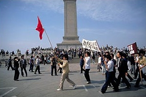 在人民英雄纪念碑旁示威的学生 | |||
| 日期 | 1989年4月15日－1989年6月4日（51天，1个月2周又6天) | ||
| 地点 | |||
| 起因 | |||
| 目标 | 七项要求（解决党和国家的贪腐问题、新闻自由与言论自由）、追求社会平等、推动中国大陆政治民主化 | ||
| 方法 | 绝食、静坐、占领广场、设置路障等 | ||
| 结果 | |||
| 冲突方 | |||
| |||
| 领导人物 | |||
| 伤亡 | |||
| 死亡 | |||
| 受伤 |
| ||
| 逮捕 |
| ||
六四事件是中华人民共和国历史上的一个转折点，它的爆发标志着改革开放以来邓小平等人在中国大陆推动的后期政治体制改革失败，赵紫阳、鲍彤等中共改革派高层事后被撤职，而胡耀邦已在八六学潮中辞去中共总书记一职，于是1980年代被不同程度推动的自由化改革也就此停止，此后官方只批准了很少数量的游行活动[18][19][20][21][22][23]。六四事件引发了国际社会高度关注，多数国家对该事件中的武力镇压表示谴责甚至进行制裁，但也有部分国家（多为亚非拉等地发展中国家）对此表示同情或者支持[24][25]。
六四事件的后果除了造成政治环境大幅度收紧，经济方面的影响也直接导致了中华人民共和国改革开放放缓，直至1992年邓小平南巡后才重新提速[26][27][28][29]。不过，由于六四事件发生后不久，邓小平做出退休的决定，故其任内推行的废除干部领导职务终身制被延续下来，此后完成了三任政权的和平更替，直至习近平2018年修宪后被废除[30][31]。
名称释义
| 六四事件 | |||
| 汉语 | 六四事件 | ||
|---|---|---|---|
| 字面意思 | 六月四日发生的事件 | ||
| |||
| 中华人民共和国政府使用的名称 | |||
| 繁体字 | 1989年春夏之交的政治風波 | ||
| 简化字 | 1989年春夏之交的政治风波 | ||
| |||
| 汉语别称㈡ | |||
| 繁体字 | 八九民運 | ||
| 简化字 | 八九民运 | ||
| |||

历史名称
广义上，“六四事件”或“六四天安门事件”是指1989年4月起于北京市并波及中国大陆全境的抗议活动，其导火索是胡耀邦逝世以及随后民众悼念胡耀邦的活动[12]。更准确的称呼应为“八九民运”或“八九学运”等。事件的命名依据，一方面是要和过去发生在天安门广场的重要活动有一致的命名习惯，包括1919年的五四运动、1976年的四五运动等。有时候会直接简称“六四”，亦有人使用“六四运动”描述整起示威活动。与海外只集中在特写6月3日晚上清场的态度不同，在中国大陆境内使用“六四”这个词提及的范围与考虑的广度较大[32]，指整个广义的“八九民运”。
狭义上，“六四事件”得名于中国人民解放军进驻天安门广场、要求抗议群众撤离的具体日期（尽管军队在6月4日日前一天──6月3日晚上便已经开始执行清场任务），即“六四清场”。中国大陆以外的中文地区也将清场事件称作“六四镇压”或“六四屠杀”[33]。
官方称法
自1989年以后，中国共产党和中华人民共和国政府也用数个不同的名称指称六四事件，并被怀疑疑似借由修改事件称呼的方式，逐渐降低事件对往后社会大众的影响[34]。在事件刚发生之际，中国政府将其命名为“动乱”，后升级为“反革命暴乱”[35]。事件结束后以“六四风波”指称。后来在江泽民主政后期和胡锦涛主政时期，政府将当天的冲突全部改成更为中立的名称，也就是今日持续使用的“1989年春夏之交的政治风波”[36][37]或“1989年政治风波”[38][39][40]这类短语[34][41]。
2019年习近平执政时期将“反革命暴乱”与“1989年春夏之交的政治风波”并行使用。[42]
西方称法
西方世界在描述该事件的经过时，经常使用“1989年天安门广场抗议”（英语：Tiananmen Square Protests of 1989）或“天安门镇压”（英语：Tiananmen Square Crackdown）。1990年代时西方新闻媒体经常使用“天安门大屠杀”（英语：Tiananmen Square Massacre）这类字词[43]，但在近年的相关报导中则逐渐减少[44]。主要是因为绝大部分暴力冲突并非发生在天安门广场上，而是在北京城西的木樨地[44]。不过“天安门广场抗议”或是“天安门事件”等字词，容易让人误以为整个示威活动只发生在北京市，然而当时中国许多城市都有出现相关的抗议活动[44]。
代名词
在中国大陆境内，上述名称皆于搜寻引擎或公开论坛上被列为“敏感词”。为了要绕过网路审查，网际网路上出现许多形容六四事件的替代称呼[45]，包括有“5月35日”、“VIIV”（“6”和“4”的罗马数字写法）和“8平方”（82 = 64）等[46][47]、“农历五月初一”（1989年6月4日为农历己巳年五月初一，这个表述一般情况很难被认为是六四的意思），对于“1989年”，则用“民国78年”、“平成元年”等字眼规避审查。
随著上述字词在中国网站上传播甚广，现在中国境内的多数网站也将这些视为自我审查词汇。在百度中搜索“六四事件”，仅会出现如中国网、中新网和中国日报等官媒发布的有关此次事件的资料，在百度贴吧里面搜索“六四事件”“5月35日”“8平方事件”“VIIV事件”都会被提示该页面不存在。[48]
事件背景
改革开放
1977年7月，中共十届三中全会召开，大会通过恢复了邓小平的中共中央副主席、国务院副总理、中央军委副主席和解放军总参谋长的党政军职务（合称三副一长），邓小平正式复出。中共十一届三中全会在1978年12月召开后，获得最高权力的邓小平将改革开放列为重要政策，加速国民经济发展[49]。同时邓小平提拔改革派成员担任重要的政府官员，其中中共中央秘书长胡耀邦在1980年2月被任命为中央书记处总书记，分割时任党主席华国锋的权力，同年9月赵紫阳则接替华国锋担任中华人民共和国国务院总理。华国锋在1981年下台后，胡耀邦接任中国共产党中央委员会主席，自此改革派进入中央最高领导层。尽管市场化的经济政策普遍受到人民的欢迎，但对官员腐败和裙带关系的担忧也不断增长[50][51]。
经济危机
自1950年代以来，中国便长期透过中央制定的计划定价机制，让商品的价格稳定处在较低水平，但也减少了制造者增加产量的诱因。改革开放后，在经济改革初期，中国政府采取部分产品价格固定、部分商品允许价格波动的价格双轨制作法。但因市场上长期产品短缺而物价较高。部分人则可利用权力以低价购入产品，之后再以市场价格贩售，时谓“官倒”[52]。此外，政府的货币供应量增发过多且过快，造成至少有三分之一的工厂无法获得利润；但1988年减少货币供应后，又使得许多金融贷款无法正常兑现[52]。1988年，邓小平在北戴河会议上同意以市场经济为基础，让价格体系得以恢复正常[53][54]。
但价格管制将放松的消息传开后，随即引起民间恐慌，中国各地民众大量提领现金并购买商品囤积[53]。不到两周内，政府便立即撤销价格改革的政策，但价格闯关带来的影响明显延续一段时间，民间社会面临快速通货膨胀的问题。在官方提出的消费者物价指数报告中，指出北京市的物价于1987年至1988年期间增长30%，许多工薪阶层因为无法购买大众商品而感到恐慌[55]。在新的市场经济体制下，许多无法获益的国有企业也被迫削减成本，让过去拥有工作保障与社会福利的铁饭碗开始面临生活的压力[55][56]。
社会问题
改革开放后，中国社会出现了官倒、权钱交易、腐败、特权、贫富分化扩大等问题[29][57][58][59]。此外，改革开放以后，改革派领导人设想知识分子会在往后发挥主导的功用，领导国家实施更多的经济改革政策。尽管政府陆续设立新的大学，并增加各校的招生名额[60]，但情况并未如计划设想般实际发生[61]。一方面因国家所指导的教育体制，并未充分和市场需求不断增长的农、轻工、服务业与外国投资等领域结合[62]；另一方面因专精于社会科学和人文科学的学生，则必须进入有限的就业市场[60]。新开设的私立企业并不接受国家分配毕业生，然而高收入的工作则由具裙带关系者取得[63]。其中条件优厚的工作岗位都被取得后，剩下的职位往往是绩效较差的部门，掌握实质权力者则在该领域并无专长[55]。
面对惨淡的就业市场和有限的出国机会，知识分子与学生们认为凭借处理政治问题，从而能使以上问题得到解决。这让北京市各个大学的校园中出现了以研究政治为主的小规模“民主沙龙”社团[64][65]，这些组织逐渐激发了学生参与政治的兴趣[53]。受到中国的经济社会逐渐朝向资本主义的影响，中国共产党名义上仍保留的社会主义，在意识形态上也面临信任危机[66]。对于民营企业的审核制度，则让许多不良的商人能以宽松的法律优势致富，甚至常在过去强调“没有穷人”的社会中炫耀拥有的财富[55][67]。财富分配不公的问题引起了民众的强烈不满，也普遍对于国家的未来感到幻灭[68]。
派系斗争
.jpg) 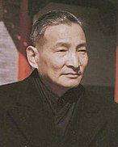
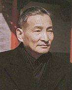
当时人们希望中国政府能做出其他改变的作为时，结果政府部门迟迟没有进一步的动作[66]。在改革开放的政策制定和实施后，面对伴随而来浮现的种种问题，领导高层之间在处理办法上出现分歧。但尽管中国共产党内部因为意识形态而浮现派系冲突，双方人马都需要获得最高领导人邓小平的支持，才能实施各项重要决策[13]。
以中国共产党中央委员会总书记胡耀邦、中国国务院总理赵紫阳为首的改革派，主张进一步实施政治自由化的方针。借由设立允许多种想法的渠道，让民众能够表达不满、并进一步支持改革。改革派成员还包括：胡启立、万里、彭冲、习仲勋、田纪云、鲍彤、阎明复、李锐，等等[69][70]。
另一方面，以中国共产党中央纪律检查委员会第一书记陈云、中国国家主席李先念为首的激进反改革派，则认为改革开放已经施行过多政策。因而认为重新加强控制以确保社会稳定，并与中国共产党书面的社会主义主张一致。保守派成员还包括：王震、李鹏、薄一波、姚依林、邓力群，等等[70]。
政治体制改革
1980年8月18日，邓小平在中共中央政治局扩大会议上作了《党和国家领导制度改革》的讲话（俗称“8.18讲话”），指出权力过分集中是中国当下官僚主义的“总病根”[71][72][73]。邓小平提出要进行政治体制改革，建议废除干部领导职务终身制，提倡民主集中制，并向全国人民代表大会提出全面修宪建议[74][75]。1982年12月4日，第五届全国人民代表大会第五次会议审议通过了具有历史性意义的《八二宪法》，该宪法也成为了中华人民共和国的第四部宪法，收入了许多宪政主义的内容和条款，为改革开放奠基[23][26][29][76][77]。
.jpg)
随着改革开放的加速，中国社会出现了官倒、权钱交易、腐败、特权等问题，经济改革亦受到了原有政治体制的阻碍[29][57][58][59]。1986年上半年，邓小平再次提出“政治改革”并启动了“政治体制改革”的研讨和制定，同年9月“中央政治体制改革研讨小组”成立，成员包括赵紫阳、胡启立、田纪云、薄一波、彭冲[57][76][78][79][80]。10月，赵紫阳提议的中央政改小组办公室成立，具体负责人包括鲍彤、严家其、贺光辉、周杰[81]。
邓小平的政治改革出发点是，在中国共产党一党专政的前提下，实行党政分开、提高行政效率、革除官僚主义弊端、推动经济制度进一步改革等，但不能照抄西方的宪政制度，他强调：“不能放弃专政，不能迁就要求民主化的情绪。...... 要搞一个增强行政效能的体制，机构要精简。......讲民主必须要和法制联系起来讲，把法制搞起来，才能有稳定的社会环境。我们的行政机构应该很有效能。 ”[79][82][83][84] 与此同时，其他人士还公开提出了“多党制”、“三权分立”、“议会民主”、“司法独立”等西方宪政主义的架构[79][82]。虽然这些与邓小平等人的中国共产党官方改革观点可能有所不同，但在当时比较宽松的政治气氛下，并没有受到过多的抑制与打压[79]。
1987年10月，中国共产党第十三次全国代表大会在北京召开，邓小平主持了开幕式，赵紫阳作了题为《沿着有中国特色的社会主义道路前进》的报告，该报告由鲍彤负责起草，提出并论述了政治体制改革的方案和设想，阐述了社会主义初级阶段理论，提出了一个中心、两个基本点的概念[57][85][86][87]。该报告的第五部分详细论述了政治体制改革，将邓小平1980年的“8.18讲话”作为改革的指导性文件，阐述了许多符合宪政主义的内容，其中包括进一步实行党政分开、权力下放、提倡法治和监督、完善选举制度等等[57][87]。十三大还首次实行了差额选举，赵紫阳正式当选为中共中央总书记、鲍彤当选为中共中央委员、不久后鲍彤又被任命为中央常委政治秘书[57][85]。1987年底，中共中央政治体制改革研究室成立[81]。
民间新思潮
文化大革命结束后，早在1978年的拨乱反正时期，魏京生等中国知识分子便开始呼吁政治改革，并在北京市西单民主墙张贴持有不同政见的大字报[88][89][90]。此时民众被允许宣传政治自由和民主化的短暂时期，又被称作“北京之春”。但尔后魏京生在1979年3月遭到逮捕[91]，西单民主墙也于同年12月时被迫封闭[92]。1983年，中国共产党的保守派人士在发起了“清除精神污染”的左倾运动。
1986年夏天，曾于普林斯顿大学任教的天体物理学教授方励之开始在中国各地大学展开个人访谈之旅，主要谈论的内容包括自由、人权、权力分立等内容[93]。随后方励之成为当时社会大受欢迎的人物[94]，他的发言记录也在学生间广为流传[95]。对此邓小平曾警告方励之主张崇拜西方的生活方式、资本主义和多党制度，将意味著损害中国的传统价值观、社会主义的意识形态、以及中国共产党的领导能力[95]。受到方励之的演讲、中国政治体制改革的重新开启以及世界各地爆发的群众运动影响，学生在1986年12月发起抗议活动，反对改革开放的步伐过于缓慢。其中参与示威游行的学生提出许多诉求，这包括有经济自由化、民主、法治等要求[96]。虽然这次抗议最初是在合肥市附近进行，但很快地学生运动便蔓延至北京市等各大城市。对此中国共产党的中央领导阶层感到惊慌，并开始指责抗议学生试图煽动文革式的动乱[97]。
之后，中国共产党中央委员会总书记胡耀邦被中共内部指责对抗议活动的态度过于软弱，以及因为没有适当处理这次事件而引起社会动乱。胡耀邦遭到保守派人士大力谴责后，在1987年1月16日被迫辞去总书记的职务，但保留中共中央政治局委员的身份[97][98][99]。在胡耀邦辞职后，中国共产党保守派在邓小平的支持下顺势展开了“反对资产阶级自由化”的左倾运动，开始打压支持胡耀邦观点、政治自由化和西方风格者[100][101]。这项运动也制止了学生运动的发展，并且使得政治环境一度封闭起来，但胡耀邦也因而获得中国共产党党内的改革派人士、知识分子以及学生们的欢迎[102][103]。但该运动此后遭到了代理中共中央总书记、时任中国国务院总理赵紫阳的反对，赵紫阳认为左派利用了反自由化运动来反对和否定改革开放，并以此说服了邓小平，该运动随后于1987年中期逐渐结束[78][104][105][106]。
国际局势
在八九民运发生的同时，自1989年2月波兰团结工会在圆桌会议中争取到合法地位后推动政治改革，东欧和中欧的匈牙利、东德、保加利亚、捷克斯洛伐克、罗马尼亚等“社会主义阵营”国家相继发生民主化革命，谋求结束原本的共产党专政。
事件起始与缓和
胡耀邦逝世
 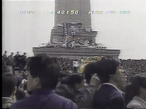
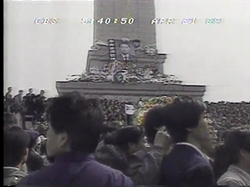1989年4月15日，曾经在80年代先后担任中共中央主席和中共中央总书记的胡耀邦因心脏病发作而逝世，随后引起学生强烈回响与悼念，并成为群众聚集的最初动力[107][108]。大学校园里陆续出现许多歌颂胡耀邦的宣传海报，呼吁政府重新审视胡耀邦的观点[109]。几天过后，大多数海报开始提到更加广泛的政治问题，包括有新闻自由、民主制度、以及官员贪污问题等[110]。4月15日以后，一些悼念胡耀邦的民众也在天安门广场人民英雄纪念碑附近，自发组织小规模集会。同一天，北京大学与清华大学也在校园内设立胡耀邦的灵堂，北京当地学生陆陆续续聚集在天安门广场上。4月16日，位于西安市和上海市的学生也开始组织类似的小规模学生聚会[111]。
在部分大学生主导下，原本单纯悼念的活动转向要求政府控制通货膨胀、处理失业问题、解决官员贪腐、政府问责、新闻自由、民主政治与结社自由等[107][112][113]。4月17日，中国政法大学的学生为了纪念胡耀邦而制做了大型花圈，在同一天有更多群众集结在天安门广场上[114]。下午5时，500名中国政法大学学生共同抵达靠近天安门广场的人民大会堂东门，表达哀悼胡耀邦之意。之后来自不同背景的演讲者举办公开演说，内容包括有纪念胡耀邦、讨论社会问题等。由于被视为将阻碍人民大会堂的运作，因此警方很快便介入示威群众的聚会，并试图说服学生离开天安门广场。4月17日晚上，3,000多名北京大学学生在天安门广场进行学校学生的游行活动，很快地近千名来自清华大学的大学学生也参加游行[111]。两队学生抵达天安门广场后，很快就与先前聚集在广场上的群众会合。随著活动规模的增大，聚会活动逐渐演变成为示威抗议，学生们开始起草并向政府提出七项要求：
4月18日上午，王丹等人人民大会堂前静坐，要求中共接受七项要求。一些群众聚集在人民英雄纪念碑周围吟唱爱国歌曲，另外学生也在天安门广场上主办演讲活动[117]。此时王丹和另一名学生郭海峰进入人民大会堂，与全国人大信访局的局长会面。王丹和郭海峰向信访局局长提交七项要求。信访局长表示会向上级部门提交七项要求，但希望学生不要静坐，回到学校。王丹和郭海峰表示未能确认转交前不会停止静坐回到学校。王丹和郭海峰回到人民大会堂外静坐后，又第二次进入人民大会堂，要求一定要人大常委级别以上的负责人出面接受七项要求，才会停止静坐。信访局长表示会向上级反映[118]。之后北大研究所会主席李进进向静坐学生表示，他会代表学生进入人民大会堂递交请愿书，但如果人大代表接受了请愿书，学生应该离开。学生们同意了李进进的呼吁。于是李进进进入人民大会堂交涉。下午六点，人大代表宋世雄、刘延东站在人民大会堂台阶上与静坐的学生打了个照面。[119]
新华门事件
 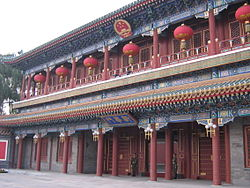
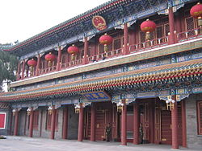4月18日上午，在学生留在天安门广场静坐的同时，数千名学生则聚集在中国共产党领导人居住的中南海入口新华门处，要求中国共产党的领导高层和学生之间展开对话[120]。警方随即限制学生进入中南海内部，学生则决定原地静坐示威以表达不满。当天晚上，新华门前聚集了北大、人大、北师大、政法大学等校二三千名学生，围观群众六七千人。学生“会聚新华门是因为至今政府没有一个人出来表态”。学生多次齐声高呼“李鹏出来！”“李鹏出来！”的口号，并六次试图冲开警戒防线而未成功[121][122][123]。4月20日凌晨时分，大批警察和多辆大巴到场围著在新华门前静坐的学生，警察将学生拖上大巴。在这过程中学生和警察发生冲突。有学生被打伤[124][125][126][127]。新华社援引北京市公安局消息指有4名警察被掷来的砖块、瓶子打伤[122]。许多学生认为他们遭到警方虐待，有关警察采取暴力驱离的传闻也迅速蔓延开来[128]。
新华门事件激怒了许多校园里的学生，许多过去没有积极参与政治事务的学生也因为这次事件，而决定加入抗议活动[129]。在这段期间，一群自称“工人代表”的北京工人自治联合会则到处发布两份具挑战中央领导集团统治的传单[130]。
江泽民与《世界经济导报》
4月19日，立场靠近改革派的报纸《世界经济导报》决定出版纪念胡耀邦的专题报导。其中一篇由严家其所撰写的文章中，便对北京市学生发起的抗议活动给予正面评价，并且呼吁重新审视1987年要求胡耀邦下台的作为。不过在得知中央政府的立场渐趋保守后，江泽民要求《世界经济导报》删除相关的长篇敏感报导内容，但《世界经济导报》则以空白页刊登的方式抗议文字审查[131]。最后江泽民马上解除总编辑钦本立的职务[132]，其果断的行动赢得党内元老的正面评价[133]。
学运组成
由于胡耀邦曾经出任中共最高领导人的职务，中央决定为其举行国葬，仪式最后决定在4月22日举行，北京市人民政府下达命令封闭广场以举办葬礼。约有十万名学生则在前一天晚上无视命令，游行进驻至天安门广场[134]。此时各高校的学生组成了“学生行动临时委员会”，然后该委员会向当局提出七项要求，并且提到另外与胡耀邦有关的三点要求，分别是要让广场上的学生瞻仰胡耀邦的遗体；让广场上的学生代表进入人民大会堂参加胡耀邦追悼会；在胡耀邦追悼会结束后，让他的灵柩在天安门广场绕一圈，让在场的数万名学生为他最后送行。不过中国官方治丧委员会拒绝了学生代表的所有要求，只答应向在天安门广场的学生同步播放胡耀邦追悼会的现况。当局还要求在广场的学生向东移动，腾出广场西边的场地，以便让追悼会参加者的车辆能够通过，学生们接受了当局的要求。在4月22日当天早上10点，包括中央军委主席邓小平在内的中国党政领导高层皆前往人民大会堂内部参加典礼，并由中共中央总书记赵紫阳发表悼念词，中国国家主席杨尚昆主持仪式。尽管整个国葬过程向学生直接播出，然而由于纪念活动只持续了40分钟便宣告结束，学生们到11点也没有看到胡耀邦的灵车，这使得天安门广场的群众情绪更为高涨。这时学生们开始越过天安门广场西边的路，涌到人民大会堂前静坐。他们向官方提出了3点要求，分别是继续要求胡耀邦的灵车绕着天安门开过；与总理李鹏会面；希望官方媒体能够公开报道天安门广场上学生们对胡耀邦的悼念活动。但官方还是没有接受学生们的要求，也没有派官员与学生见面[13][135][136][137]。虽然保安人员封锁了人民大会堂的东大门，但仍有数名学生共同突破封锁线。随后有三名学生（北京大学的郭海峰、张志勇，中国政法大学的周勇军）跪在人民大会堂的阶梯上，表示要提交请愿书，并要求获得国务院总理李鹏的接见[138][139]。然而三名学生跪了40多分钟，没有任何中国共产党领导人自人民大会堂出现，这使得绝大部分学生感到失望与不满。学生行动临时委员会决定撤离天安门广场，但准备罢课抗议。4月22日下午1点30左右，学生们开始撤离天安门广场。他们经过新华门时，高呼“和平请愿，政府不理，通电全国，统一罢课。”[138][139][140]
4月21日至4月23日期间，学生们开始筹划成立真正的活动组织[111]。而在4月20日，北大民主沙龙开会，学生们决定不承认官方的北京大学学生会并且自己组织学生会，名字暂定为“北京大学团结学生会筹委会”，由丁小平、王丹、杨涛、封从德等七名学生领导[141]。在4月23日，另一个学生组织北京高校学生自治联合会宣告成立，并选举当时就读中国政法大学的周勇军担任主席，而北京大学学生王丹、北京师范大学学生吾尔开希也被推举为各自学校的学生代表。但后来实际主持工作的是社科院研究生王超华、北大研究生封从德（第三任主席）和北大学生杨涛（第四任主席）。随后北高联呼吁北京市的所有大专院校全面并无限期的罢课，以表抗议诉求[142]。然而这样一个独立于管辖范围外的组织成立，挑战了中国共产党对学生的管理地位[143]。另外一方面，位于湘潭市的湘潭大学学生也发起抗议行动，并且获得许多学校教授支持。同时武汉市当地的大学学生也组织起来，共同抗议湖北省人民政府[144]。
然而在4月22日黄昏，长沙市和西安市爆发了严重事故。其中包括在西安市有人纵火焚烧车辆、房子，并且抢劫靠近西华门的商店[145][146]；而在长沙市也有38家商店遭人抢劫，最后这两个城市共有超过350人遭到了逮捕[147]。随著国家局势变得更加动荡，中共中央总书记赵紫阳立即与中央政治局常委召开多次会议。对此赵紫阳强调要求学生停止进一步的抗议活动，而各自回到大学就读；他亦要求动用所有必要措施来解决动乱行为，而不同级别的政府应该与学生进行开放式对话[11]。国务院总理李鹏则要求赵紫阳谴责示威群众，并认为应该要采取更加积极的防治措施，不过赵紫阳最后驳回了李鹏的看法。尽管中国共产党的领导高层就回应学生运动的方式意见分歧，而与赵紫阳关系密切的国务院副总理田纪云等人也建议赵紫阳继续留在北京市密切关注事态发展[111]，但赵紫阳仍然依照原计划，应朝鲜劳动党总书记金日成的邀请，于4月23日飞往朝鲜进行国事访问[148]。4月24日，北京35所大学全面罢课，上海、天津、长沙、西安、南京等各大城市高校纷纷响应[149]。4月25日，北京43所高校约6万余名学生继续罢课。北高联向政府提出三项要求，要求政府答应才会复课。这三项要求是：1、与国务院有代表性的官员对话；2、政府对新华门事件公开道歉和惩罚凶手；3、国内传媒如实报导学生运动[150]。
四二六社论
 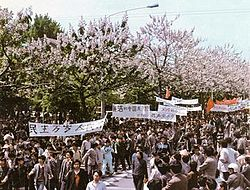
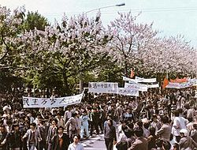赵紫阳前往朝鲜访问后，便由留在北京市的中共中央政治局常委、国务院总理李鹏代理领导党政机关。4月24日，李鹏和中共中央政治局委员兼北京市委书记李锡铭、以及国务委员兼北京市人民政府市长陈希同会面，希望能了解天安门广场上的情况。对此北京市官员想尽快解决危机，并认定抗议活动是一场阴谋，旨在推翻中国现有的政治制度、以及包括邓小平在内的主要党政领导人。在总书记赵紫阳缺席的情况下，中国共产党中央政治局常务委员会议认为必须立刻向示威群众采取态度坚决的行动[148]。4月25日上午，中国国家主席杨尚昆和国务院总理李鹏前往邓小平的住处会见邓小平，邓小平同意政府采取强硬立场。邓小平还表示应该借由大众媒体适当地发布“警告”，借此抑制因为不断传播而扩大的示威活动[151]。
这次会议成为中国共产党高层首次对抗议活动的正式评估，而重要问题的决定仍然以邓小平的意见为准。李鹏随后依照邓小平的意见下令起草一份公报，并向中国共产党各个机构和高阶官员要求应该设法对付示威群众[152]。4月26日时，中国共产党的机关报《人民日报》头版发表社论《必须旗帜鲜明地反对动乱》（四二六社论），指责“极少数别有用心的人”阴谋推翻中国共产党和现行的政治制度[153][154][155]。然而这项声明激怒了学生，认为这是中国共产党故意要对付抗议活动。最后社论并没有令学生放弃示威活动，反而促成更多学生愿意团结，并共同表态支持学生活动[151][156]。社论发布的当天晚上，长春、上海、天津、杭州、南京、西安、长沙、合肥等城市发生规模不等的游行示威，抗议四二六社论。[157]
在北京高校学生自治联合会组织下[158][159]，有五至十万名来自北京市各大学的学生在4月27日集结游行，经由街道前往天安门广场[160]。学生团体成功通过警方设立的封锁线，并沿途受到以工厂工人团体为首的市民广泛支持[13]。组织活动的学生领袖希望借由这次游行展现其爱国性质，特意淡化反对共产主义的口号；其中游行学生主要强调“反官僚、反贪腐、反任人唯亲”这一问题，不过学生仍强调会继续“拥护共产党”[156]。这次示威游行迫使中国政府做出让步，同意与学生代表会面。4月29日，国务院发言人袁木会见由政府批准的学生社团代表[161]。尽管会谈中讨论了包括报刊编辑、新华门事件、民主自由等广泛议题，并获得一些实质成果，然而包括吾尔开希等学生领袖则表态拒绝出席[162][163][164]。
五四对话
4月30日，中共中央总书记赵紫阳从朝鲜平壤返国并重新掌握党政权力。然而随著外界要求中国政府对学生示威活动的态度更为软化后，内部相关的讨论冲突反而更为加剧。以赵紫阳为首的温和派，主张继续与学生展开对话；以国务院总理李鹏为首的强硬派，则主张应该强硬地反对抗议活动继续进行。在5月1日召开的中共中央政治局常务委员会议上，赵紫阳和李鹏再度针对这一议题有所冲突。当中赵紫阳认为先前强硬派的作法已经证明并无实际的效力，因此政府特别允许这次活动才是唯一的选择[165]。
对于李鹏认为国家的稳定发展应该优先于任何事项，赵紫阳则反驳说中国共产党应该表态支持扩大民主和提升透明度的要求。最后在赵紫阳强力推行下，政府决定展开进一步的对话[166]。赵紫阳随后开放新闻媒体积极报导抗议活动的发展，并在5月3日至5月4日期间发表了两次同情示威群众的演讲[167]。赵紫阳发言中提到学生关切政府官员贪腐的问题是正当的，同时认为这次学生运动应该被视为一种爱国表现[168][166]。在5月4日当天，有十万名学生在北京街头游行以纪念五四运动[169]，同时再度重申先前示威游行所提出的要求[170]。当天，北高联宣布《新五四宣言》，呼吁推广民主政体。上海、南京和广州等地学生也游行上街，呼吁政府与学生对话[171]。而赵紫阳的发言实际基本上否定了4月26日《人民日报》发表的社论内容[172]，这让很多大学生都满意政府所做的让步[173]。5月4日结束时，除了北京大学和北京师范大学外，所有北京市的大学皆宣布罢课行动结束，随后大部分学生也逐渐失去参与抗议活动的兴趣，新闻自由获得口头保障，多数人主张以对话渐进推动民主[173]。
再度升级事件
学生分歧与绝食
 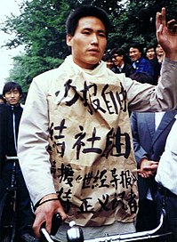
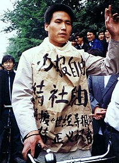正当学生自治会所选举出来的正式对话代表团已经准备和中华人民共和国政府展开对话之际[152]，北京高校学生自治联合会组织领袖不愿意由正式对话代表团单方面控制整个抗议活动[174]。在面对学生团体内部不和以及参与群众不断减少的情况下，包括王丹和吾尔开希等具有较大影响力的学生领袖要求采取更激进的作法来恢复抗议声势。其中他们认为中国政府所提出的“对话”只不过是一种诱骗学生就范的方式，因此自5月11日开始动员学生准备进行绝食[174]，希望能够改变《四二六社论》的定性[175]。
最后学生决定在苏联共产党中央委员会总书记米哈伊尔·戈巴契夫高调对华进行国事访问的前两天，自5月13日由柴玲宣读《绝食书》展开绝食抗议[176][177]；其中学生领袖认为欢迎戈巴契夫的仪式必定安排在天安门广场进行，因此借由绝食抗议便能作为筹码来迫使政府满足他们的要求。此外绝食获得社会大众广泛的同情，进而使得学生运动成为一种道德行为并且受到群众的追捧[178]。而北京的抗议活动促使得其他城市的大学也陆续组织了抗议和罢课行动，同时有很多学生也纷纷前往北京市参加示威游行，其中在5月13日下午便约有30万人聚集在天安门广场上[179]。整体来说于天安门广场上进行的示威活动仍保有秩序，来自北京不同地区的大学学生每天发起游行以表达抗议要求并且表示团结，同时许多学生也会在行进过程中齐唱无产阶级国际主义运动著名的《国际歌》[180]。在5月中旬，学生发起绝食行动，促使中国各地四百多个城市陆续集结抗议，表态支持[181]。
苏共总书记访华
.jpg)
苏联共产党中央委员会总书记米哈伊尔·戈尔巴乔夫是1950年代末中苏决裂后第一位正式访问中国的苏联领导人，两国关系恶化前苏共中央第一书记尼基塔·赫鲁晓夫曾于1959年访问中国，作为国宾出席庆祝中华人民共和国国庆10周年大会。苏联领袖相隔30年再次访问中国，象征两国关系改善，因此中国领导人非常重视这次国事访问[182]。
5月上旬至5月中旬时有关采访六四事件抗议群众的审查限制获得明显地开放，国家媒体开始播放包括绝食在内关于同情抗议群众的影像。然而由于担心示威活动将会失控，邓小平要求在苏共中央总书记戈巴契夫访问中国期间应该清除广场上的抗议群众。为了达成邓小平的要求，赵紫阳决定仍使用柔性办法并且指示他的下属马上与学生进行谈判[178]。赵紫阳相信此时仍能够成功借由爱国主义吸引学生的关切，并且让学生了解到如果在中苏首脑会议期间让其他人士知悉内部有动乱迹象的话会使得全国难堪。5月13日上午中共中央统战部部长阎明复召开紧急会议[183]，并且邀请到重要的学生领袖以及包括刘晓波、陈子明以及王军涛等知识分子[184]。阎明复说表示政府已经准备与学生代表展开直接对话，但前提是学生必须先撤离天安门广场以举办戈巴契夫访问中国的欢迎仪式，这样也使学生领袖们之间陷入分歧[185]。
5月14日时，以戴晴为首的知识分子在中共中央政治局常委、中央书记处书记胡启立的许可之下直接通过政府审查在《光明日报》提出意见，呼吁学生应该要尽快离开天安门广场，但是许多学生却认为知识分子是为了政府发言而拒绝做出让步[179]。当天晚上，以阎明复为首的中国政府代表团与担任学生代表的沈彤和项小吉展开正式谈判，其中阎明复肯定学生运动的爱国性质并且恳求学生从天安门广场上撤出[185]。虽然阎明复的诚意成功促使得一些学生愿意达成妥协，但是随著不同派系的学生间无法事先进行协调或者提出连贯的要求而使得会议变得越来越混乱，不久学生领袖在得知政府并不愿意承诺公开直播问题的谈判过程后宣告会议无限期中止[186]。之后阎明复直接前往天安门广场尝试劝离学生，甚至表示自己愿意被学生挟持以换取撤离的决定，然而学生之间并没有理会其劝告[13]。而在隔天阎明复还向李鹏询问是否愿意应学生要求正式退回四二六社论的内容、并且将学生运动定调“爱国民主运动”，但这些建议都一一遭到李鹏的驳回[137]。
最后戈巴契夫访问中国期间学生仍然决定继续留在天安门广场，也使得中国国家主席杨尚昆为戈巴契夫访华举行的欢迎仪式上改在机场内进行。这次中苏首脑会晤于中苏交恶30年后进行，除了标志中苏关系恢复正常外，同时也被视为中国领导人其具有重要历史意义的突破[187]。然而相比之下由于学生仍然坚持在天安门广场上进行运动而为这次会谈带来尴尬，进而促使得许多原本偏向温和派的领导高层也开始转向愿意实施“强硬派”的作法[188]。其中邓小平与戈巴契夫在人民大会堂内举行两国领导人之间的高峰会时，学生群众则在附近天安门广场上发起示威活动[178]。而在5月16日戈巴契夫与赵紫阳会面后，赵紫阳则在国际新闻媒体前告诉戈巴契夫表示邓小平在中国仍然是“至关重要的”。对此，邓小平认为赵紫阳的这句话是要将处理学生运动失当的过错归咎于他[189]。这项言论标志著邓小平和赵紫阳两个中国最高层领导人之间决定性的分裂[178]。
局势升级
 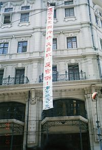
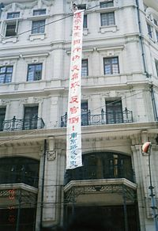 绝食抗议的作法很快便引起中国各地对于学生的支持和同情，至此原本于四月底声势衰退的抗议行动重新获得声望[190]，并且在5月16日至5月18日期间数百万名居住于北京市的各行各业居民共同发起示威游行；而参与者还包括有中国人民解放军军人、警察人员、中国共产党党员或者是低阶的政府官员[191]，同时许多中国共产党基层组织、中国共产主义青年团以及政府资助的工会也鼓励其成员公开参与游行活动[191]。此外一些中国民主党派成员学生致信给李鹏以表达意见，而中国红十字会也特别下达通知并且安排大量人员前往天安门广场为绝食群众提供医疗服务[192]。北京1000多名知识分子联署发表了《五一六声明》，声援学生，批评政府对学运的动乱定性。作家巴金、诗人艾青、学者季羡林等参与签名[193]。而在戈巴契夫离开中国后，许多外国记者仍决定继续留在中国并且报导于首都北京市进行的抗议活动，这使得学生运动成为国际关注的焦点并且也让一些西方国家政府呼吁中国政府保持克制[194][195]。
除了北京当地，来自中国各地的学生陆陆续续涌进首都北京市以参与学生运动；而在中国各地四百多个城市也爆发规模不一的抗议活动，其中包括中共福建省委、中共湖北省委以及中共新疆维吾尔自治区党委机关甚至都遭到学生示威游行的影响[181]。但是由于中国共产党领导高层迟迟没有针对北京发起的示威活动有明确的定位，这使得地方当局不知道如何处理当地的学生运动。而且因为示威活动合并了许多范围广泛且关注点不同的社会议题，这使得中国政府无法清楚分析哪些议题可以谈判，乃至于不清楚示威活动提出了哪些诉求。与此同时由于绝食抗议的行动其本身便具有“牺牲特质”，这使得无论是权威性还是合法性都因此而逐渐丧失的中国政府感到十分棘手[191]。在种种因素所形成庞大的压力情况下，中国政府内部开始讨论将戒严作为一种应对示威活动的可行手段[196]。
 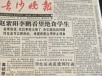
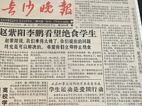5月18日，国务院总理李鹏在人民大会堂首次与学生代表会面，并且希望能够安抚受到大众关注的绝食行为[196]。在会谈中学生领袖再次要求中国政府撤销《四二六社论》并且肯定学生运动为“爱国举动”，但对此李鹏则表示政府主要关切的是因为绝食而送往医院诊治的患者。尽管这次讨论仅取得了少数实质成果，但是学生领袖也因此得以在国家电视台重要节目上有了出现的机会[197]。5月19日凌晨，赵紫阳则在中共中央办公厅主任温家宝陪同下前往天安门广场，而听闻消息陪同前往的李鹏则是抵达广场后马上离开。赵紫阳在凌晨4时50分时借由扩音器直接呼吁学生结束绝食，并且告诉学生应该健康地活著，看到中国实现四个现代化的那一天[198]。这是他最后一次公开露面[198][199]。
5月23日，北京再次举行了百万人大游行，游行队伍喊出让总理李鹏下台的口号。[193]
天安门毛泽东像污损案
在1989年5月23日下午2时，3位来自湖南省浏阳市的青年鲁德成、喻东岳和余志坚毁损了北京市天安门所悬挂的巨幅毛泽东画像。三人最初为了声援主张反对贪腐和要求中国共产党改革的六四天安门事件抗议学生而在5月19日前往北京市，然而他们则主张完全推翻中国共产党并且建立民主政府。尽管余志坚和喻东岳曾经向学生领导人提及建议和宣言但并没有获得答复，之后认为无法和学生有进一步对话的三人于5月22日开始策划针对毛泽东画像的破坏行动。[200] 他们先是于附近购买了20颗鸡蛋并且填满油漆，之后就抵达画像附近准备展开行动。三人先是于天安门城楼悬挂“五千年专制到此可以告一段落”和“个人崇拜从今可以休矣”标语，不久便将盛满颜料的蛋壳扔向毛泽东画像上。之后鲁德成、喻东岳和余志坚分别被人民法院判处16年有期徒刑、20年有期徒刑和无期徒刑。[201][202]
戒严清场
戒严令
| 您可以在维基文库中查找此百科条目的相关原始文献： |

随著示威活动不断升级并且扩大，最后作为军方最高领导人的中央军委主席邓小平决定采取果断行动。一连串游行后，以中共中央军委主席邓小平及中国国务院总理李鹏为首的强硬派决定以武力解决示威，中央顾问委员会主任陈云、时任中国国家主席杨尚昆和前国家主席、时任全国政协主席李先念等多位保守派中共元老亦支持出兵[44]。5月17日，政治局常委在邓小平的住所召开会议[137][203]。在这次会议上赵紫阳不断让步的处理方针遭到了其他成员的批评，其中李鹏和邓小平宣称赵紫阳于5月4日发表的和解谈话使得学生不再惧怕中国政府[203]。邓小平警告说如果北京市进行中的抗议活动不迅速平息的话，意味著中国将冒著经历另外一次内战或者是文化大革命的风险，而他的意见亦得到其他中国共产党党内元老的支持[204]。邓小平随后表示应该宣布戒严以表达政府无法容忍抗议活动持续进行的立场[205]，同时为了证明戒严有其作用而决定将示威群众描述为资产阶级自由化倡导者的“打手”，并且指称是幕后筹划的人士试图打击中国共产党的统治并且进一步实现他们个人的野心[206]。
同日傍晚中国共产党中央政治局常务委员会在中南海制定有关戒严之计划，期间赵紫阳表示由于无法实施戒严而准备辞去职务[207]，同时他也不确定由中央政治局常委投票做出的戒严决定是否具有法律约束力[208]。之后胡启立亦表示他并不愿意实施戒严，但相对的李鹏以及姚依林都表态支持宣布戒严的决定。乔石则提到虽然他反对政府再做出进一步的让步，但是他本人并不认为实施戒严为解决这一问题的有效方法[209]。而出席此次会议元老人物中华人民共和国主席杨尚昆和中国共产党中央顾问委员会副主任薄一波则强烈要求中国共产党中央政治局常务委员必须遵循邓小平的命令，之后担任中央军事委员会副主席和秘书长的杨尚昆更动用其权限开始调动军队进入首都北京市[209]。
5月19日，中国共产党中央政治局常务委员与军方领导人以及中国共产党党内元老会面。邓小平亲自主持会议，并表示：实施戒严是唯一的选择，在这次会议上邓小平宣布他“错误地”选择胡耀邦和赵紫阳担任他的继任者，并且决定从此将赵紫阳隔除在中国共产党高层领导会议外。邓小平还誓言要强硬处理赵紫阳的支持者，并且对此开始进行宣传工作[137]。5月20日，中国政府正式宣布实施戒严[210][211][153]，并且从5个大军区中动员了至少30个师的兵力[212]，其中在中国人民解放军24个集团军中便至少有14个被要求部署军队[212]。其中多达250,000名士兵最终被送往首都北京市进行部署，其中有一部分军队则借由空运和铁路运输前往各自的目的地[213]，而广州民航当局甚至还事先安排普通机票以准备随时运输部队[214]。当天下午，杨尚昆当面明确北京军区司令员周衣冰为指挥，全权指挥戒严行动[215]。然而中国人民解放军陆军部队进入城市后随即遭到大量集结的群众拦阻，在受到大量群众包围军车队伍并且阻止其进退的情况下使得部队在郊区无法继续前进[216][217]。抗议群众也纷纷向士兵发表演讲并且呼吁后者加入他们的行动，同时示威群众还提供士兵食物、饮用水和相关用品。此外叶飞、张爱萍、萧克、杨得志、陈再道、李聚奎、宋时轮七位上将致函戒严部队指挥部和中央军委，呼吁军队不能镇压群众，建议不要让军队入京。[218]在部队迟迟无法向城市内部推进的情况下，中国政府于5月24日下令所有军队撤退至各个城市外的基地驻扎著[181][219]。然而尽管示威群众成功逼使军事部队撤离被视为抗议活动“扭转颓势”的表现，但是中国政府仍然不断于中国各地调动部队以准备展开之后的行动[214]。
撤退与留守
与此同时学生运动的内部分裂则更为加剧，5月下旬学生所组织的抗议活动由于没有明确的领导人或一致的活动，情况变得越来越混乱[220]，同时伴随著天安门广场上聚集著大量群众使得示威队伍出现严重的卫生问题[221][222]。侯德健建议学生领袖进行公开选举以选出学生运动的发言人，但是遭到学生团体的反对[13]。另外一方面王丹则认为近期中国政府将有可能发起军事行动以镇压示威活动，因此主张让学生先从天安门广场暂时撤回校园并且另外组成相关团体，但这个建议则遭到主张继续占领天安门广场的强硬派学生反对。随著派系冲突日益增加，各个派系开始争夺位在广场中央的学生广播中心，期望能够借由控制扩音器的方式掌握学生运动的控制权。各个派系也开始派遣一些学生前往火车站迎接来自全国各地声援的学生们，并趁机将他们拉到自己的派系之中以获得支持[13]。学生团体开始指责其他派系的成员别有用心，这包括有勾结政府成员并且试图借由学生运动以获得个人成就[13]。
在5月27日时，香港将近三十万人则参与在跑马地马场举办的《民主歌声献中华》活动，不少香港名人应歌唱邀并且表示对北京学生的支持。隔天，在李柱铭、司徒华和其他组织的领导人领导下，香港150万名群众聚集在于香港岛发起了大规模的抗议游行，而同一天世界各地也发起了全球华人大游行的活动[223]。而在这期间，包括美国日本等政府也针对中国发出旅游警告。之后北京市的报刊上则陆续发表许多呼吁学生离开天安门广场并且结束抗学生运动的文章，其中在6月1日于《北京日报》刊载的《天安门广场啊，我为你哭泣》这篇文章中指称由于示威运动内部混乱和无序而使得作者感到失望[224]；但是这些文章也使得许多不愿意离开天安门广场的学生感到愤怒并且开始组织抗议行动[224]，数千名学生便列队自行游行至北京街头以表达不愿意撤离天安门广场[225]。随后刘晓波、周舵与高新三名知识分子以及台湾歌手侯德健宣布发起第二次绝食活动[226][227]，并且希望能够借此重新提振民主运动[228]。而由于长期占领天安门广场后许多学生都渐渐感到疲累，这使得原先学生内部的温和派与强硬派之冲突也渐渐停息并且开始展开对话[229]。之后刘晓波等人在发表的声明中提到绝食的目的是为了能够公开批评政府，同时提醒学生们他们现在的事业是值得奋斗的，并且促进学生能够继续占领天安门广场以提出继续改革的要求[230]。
6月2日晚间，一辆警方吉普车在行进时不慎撞击4名平民并且造成3人死亡，这件事造成示威群众开始担心军队和警察试图进驻天安门广场[231]。对此学生领袖随即发出紧急命令，要求在主要的十字路口设置路障以防止部队进入城市中心[231]。6月3日上午，学生和居民则发现有身穿便衣的军队试图携带武器进入城市[13]，学生团体随即将其抓住并且把武器交还给北京市警方[232]。学生随后于中南海的门口外进行抗议活动，但是遭到警方发射催泪瓦斯驱赶[233]。另外一批没有携带武器的部队从人民大会堂出现后很快遭到抗议群众包围，并且在混乱中造成数人受伤[13][234]；之后双方原地坐下并且开始吟唱歌曲，最后部队撤退回到人民大会堂大厅内[219]。3日傍晚，中央电视台的新闻广播称戒严部队将会镇压动乱，并警告市民不要前往天安门广场[235]。
清场令
 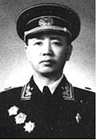
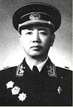
6月1日，李鹏向中共中央政治局提交《关于动乱的实质》报告，指称示威群众为恐怖分子和反革命分子[236]，还指出抗议学生并不打算撤离天安门广场，同时示威活动也获得广泛支持[237]。随后国安部也提交报告，强调资产阶级与自由主义已渗透到中国各处，西方观念给学生带来负面影响[238]。国安部亦认为美军部队介入学生运动，期望借此推翻中国共产党的统治[239]。这份报告在中国共产党党内成功营造出胁迫感，为之后的军事行动提供理由[238]。同时中央政治局也收到戒严部队指挥部的报告，指出部队已经做好协助稳定首都现状的必要准备。种种因素让大多数中央政治局委员接受了戒严的必要性和合法性的说法，也同意之后借由武力清场以解决政治危机的方案[240]。
6月2日，随著学生的抗议运动有所增加，中共高层以武力解决政治危机的看法更加巩固。同日，中共高层再度召开会议，最终同意实施清场以“能够结束暴乱并且恢复首都秩序”[241][242]。他们一致认为应尽可能和平地完成天安门广场的清场任务，但如果示威群众不愿配合的话，部队也被授权得以使用武力完成任务。国内报纸当天还报导军队部署于北京市十大重要关键地区[225][229]。
6月3日下午4时30分，李鹏、乔石和姚依林3名政治局常委会见军方领导人、中共北京市委书记李锡铭、北京市长陈希同和国务院秘书长罗干[243]，最后确定有关戒严实施的具体办法[241][244]。会议确认将事件定性为“反革命暴乱”，必须果断采取强硬措施扭转局势。会议决定当日夜采取行动，“由周衣冰同志统一指挥解放军和武警部队力量，迅速开进天安门广场，坚决执行戒严任务”[245]。在清场的当天晚上，中共领导人分别于人民大会堂和中南海监督执行状况[241][246]。
木樨地冲突
 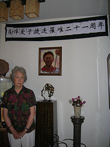
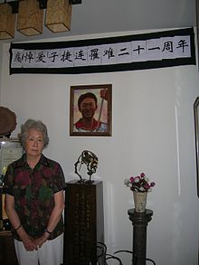6月3日晚间，各个国营电视台陆续警告北京市居民留在室内不要外出[248][249]；但受到前两周成功阻挡军队的激励，大批市民仍然走上街头以阻止部队行进[250]。中国人民解放军部队从北京市各个方位逐步向天安门广场推进，分别由第38集团军、第63集团军和第28集团军负责西面；空降兵第15军、第20集团军、第26集团军和第54集团军负责南面；第39集团军和卫戍第1师负责东面；以及第40集团军和第64集团军负责北面[232]。晚上10时左右，第38集团军在广场西方约10公里的长安街五棵松十字路口开始向示威群众开枪[9][232]。群众对于军队下令实弹射击感到惊讶，进而开始向部队丢掷物品[232]。当天晚上，32岁的航天技术人员宋晓明成为首位被证实的死者[232]。之后军队遭指控使用了射入人体会碎裂，从而造成严重创伤的达姆弹[181][251]。10时30分，由于民众将双节无轨电车推到路上并放火焚烧，行进中的军队被迫暂时停在天安门广场西侧约5公里的木樨地，试图清除这些临时路障[252][253]。住在附近公寓的居民亦出面试图拦阻军方车队，但第38集团军再度开火，并造成重大人员伤亡[181][116][246]。根据天安门母亲运动调查后提出的死者报告中，共有36人在木樨地死亡[246][9][252]。另外士兵还向木樨地附近的公寓开火，造成在建筑阳台或室内有人因而遭到枪杀[219][246]，这包括数名在公寓观察事态发展的中国共产党高级党政官员[246]。第38集团军最后以装甲运兵车将电车车厢撞开，并持续与尝试仓促搭建路障或组织人链的示威群众对峙[246][254]，之后部队行经长安街经过南礼士路、复兴门、西单到天安门期间都有造成伤亡[232][255]。而负责南面的空降兵第15军伞兵也使用实弹进行射击，并且在珠市口、天桥和前门等地也造成平民伤亡[9]。但是亦有说法认为该类说法均为远距离观察导致的失真，在现场的CBS记者理查德·罗斯也称并未有士兵开枪，而仅仅试图驱散人群，这使得究竟是否发生开枪事故存疑。[256]
有说法称部队使用实弹进行射击并且造成死伤反而激怒北京市的居民，其中一些人开始以棍棒、石块和自制的汽油弹攻击士兵[257]，甚至纵火焚烧军车[258]。中国大陆当局以及其支持者表示军队主要是为了自我防卫而动用武力，并且提出部队的伤亡证明使用武器正当，而在报告中便有士兵在街上遭到活活烧死或者是被其他人殴打致死的纪录[259]。而根据吴仁华的研究指出在6月3日晚上10时军方开火后群众才开始向部队做出反击[260][261]。不过在驱离过程中，亦有学生和居民试图保护遭攻击的士兵，而大多数的军事单位则拒绝向执行对平民开枪的命令[262]。
进驻天安门

晚上8时30分时，由于军队的直升机出现在天安门广场上空使得示威学生在各个大学校园呼吁学生加入其行列。晚上10时，示威学生依照预定时间在民主女神的基座附近举办天安门民主大学的成立仪式[263]。但是10时16分时，由政府控制的扩音器警告说部队可以在实施戒严期间采取任何强制执行的措施[263]。晚上10时30分，随著看见军队以实弹射击的目击者陆陆续续从北京市区西侧和南侧进入天安门广场，在天安门广场上的示威学生与群众也了解到有关暴力事件的消息[263]。在午夜时分，学生扩音器则宣布一名学生在靠近中国人民革命军事博物馆的西长安街遭到杀害，这使得待在广场上的群众陷入忧郁情绪[263]。学生指挥部副总指挥李录随即要求学生保持团结，并且坚持以非暴力的手段以争取继续占领天安门广场[263]；凌晨0时30分，吾尔开希则指控一名北京师范大学女学生在晚间离开校园后遭到杀害，之后吾尔开希便因为突发昏厥而被救护车带离广场[263]。而在这时候，仍然有70,000人至80,000人继续留在天安门广场上[263]。
大约凌晨12时15分，军方开始发射照明弹以提供夜间照明[264]，并且第一辆63式装甲运兵车自天安门广场西侧出现并且从广场前的道路快速通过[263]，大约五分钟后出现第二辆装甲车，两者均往东长安街驶去[235]。凌晨12时30分左右则有2辆装甲运兵车抵达天安门广南侧，学生便陆陆续续向军方车辆丢掷水泥块[263][265]。之后其中一辆装甲运兵车突然发生故障而无法移动，示威群众便用棍棒破坏车辆并且以浇上汽油的棉被放火焚烧。而因为车辆遭到焚烧而紧急逃出的3名军人则被示威群众殴打，但学生则组织警戒线并且护送3人到位于广场东侧中国国家博物馆的急救站医治[263]。之后在承受极大压力的情况下学生领袖曾经一度放弃非暴力手段并且准备展开报复行动[266]，其中柴玲便曾一度使用扩音器呼吁学生准备对抗“无耻的政府”[266]。但最后她和李录同意继续维持和平手段的做法，并且没收学生所持有的棍棒、石块和玻璃瓶等可能被视为武器的物品[266]。
凌晨约1时30分，第38集团军和空降兵第15军的队伍前沿分别到达天安门广场的南北两侧[267]。他们开始封锁天安门广场四周并且将里面的示威学生和前往支援的居民分隔开离，而在过程中也杀死数名示威群众[44]。同时第27集团军与第65集团军从天安门广场西侧的人民大会堂出现，而第24集团军也于东侧的中国国家博物馆开始部署[266][268]。在遭到军队包围之后，数千名仍然留在广场上的示威学生与群众则开始往广场中央的人民英雄纪念碑聚集[269]。凌晨2时后，部队开始尝试对人民英雄纪念碑旁的示威群众施加压力[270]；而学生广播则不断呼吁军队放弃使用武力，并且提到：“我们是和平请愿，是为了祖国的民主自由，为了中华民族的富强，请你们顺从人民的意愿，不要对和平请愿的学生采取武力……[267]”大约凌晨2时30分，几名工人则开始在人民英雄纪念碑架设其从装甲运兵车上拆解的机枪，并且发誓要向杀害许多示威群众的部队报仇[271]。之后在侯德健劝说下工人们选择放弃武器[271]，而刘晓波则在纪念碑的栏杆公开砸坏另外一枝没有子弹的步枪以重申非暴力运动的立场[271]。
群众撤离
之后，曾在木樨地看见军队枪杀民众的北京高校学生自治联合会常委邵江呼吁由知识分子带领示威学生与群众撤离广场，并且表示已经有太多人丧生。刘晓波原本表示不愿意撤离广场，但最后仍被说服，并且和周舵、高新和侯德健一同与学生领袖商讨撤离问题[267]，不过包括柴玲、李录和封从德等人在听到撤离意见后最初都拒绝撤离[267]。凌晨3时30分，在隶属于中国红十字会的两名医生建议下，侯德健和周舵同意先行尝试与士兵进行谈判[271][272]。他们随即乘坐救护车抵达天安门广场东北角并且与第38集团军336军团政治委员季新国会面[269]，季新国随即向戒严部队指挥总部转达请求并且获得同意为学生开辟往东南方安全撤离的通路[271][269]。凌晨4点时天安门广场上的灯光突然熄灭，同时官方的扩音器宣布：“现在开始清场，同意同学们撤离广场的呼吁。[267][273]”不过此时学生们则是一同唱起《国际歌》[274]，并且认为军队准备执行最后一项清场任务[271]。
凌晨4点30分时，天安门广场重新开启照明并发射一连串的红色信号弹[235]。与此同时，部队开始从四面八方逼近纪念碑[153][275]，随后部队在聚集于人民英雄纪念碑的示威群众周围10公尺处重新部署[275]。而侯德健回来后先是尝试说服事先知情的学生领袖接受他与部队的协议，在大约4时32分侯德健透过学生的广播表示他先行和部队达成谈判[275]，然而许多第一次知道这次会谈的学生则气愤地指责他过于胆怯[275]。封从德之后则在广播中解释由于已经没有时间召开紧急会议，而将以口头表决的方式决定示威学生之后的集体行动。但尽管“坚守”的声音比起“撤离”还要来得更加响亮，封从德仍然表示“撤离”意见较为多数而决定带领群众撤离天安门广场[252]。不过大约在4时40分时，穿著迷彩服的士兵冲向人民英雄纪念碑并且破坏学生的广播设施[275][276]；而其他部队则殴打数十名在纪念碑旁的学生，并且扣押或者破坏他们的相机和录音设备[275]。随后士兵开始强制驱散在人民英雄纪念碑附近的群众，之后也有学生和教授尝试说服仍然坚持坐在纪念碑底层的学生离开[275]。
大约早晨5时10分学生们开始离开纪念碑，示威群众们手牵著手往广场东南角安排的通道撤离[153][252][277]，不过由于当时坐在广场北部的学生颇多，因此有相当一部分学生是从广场北侧离去[275][235]。而这时军方则要求那些拒绝离开天安门广场的学生必须加入撤离行列[276]，除了以对空开枪的方式要求剩下的群众撤出广场外[275][278]，并且还调动59式战车部队封锁前往广场的道路[279][280]。而据从北侧撤离的学生所说，军队在纪念碑北面架起机枪向学生扫射[235]。在确认所有示威群众都离开广场后，军方派遣军用直升机运送大型塑胶袋并且命令士兵开始清理广场[280]。北京医护人员对香港记者说，军队将广场的尸体装进塑料袋，由军用直升机运走[235]。而6月4日早上6时，已经撤离天安门广场的学生队伍在沿著西长安街自行车车道上准备走回校园时，西单邮电局方向有3辆从天安门广场出发的坦克发射催泪弹并且冲撞人群，造成11名学生受伤[281][282][283][284]。6月4日上午数千名先前撤离的示威群众、清场行动中伤亡者的父母以及被政府举动激怒的工人尝试从东长安街重新回到天安门广场[181]，但是当人群靠近部队时士兵则随即往群众处开枪射击作为警告[181][285]。然而由于有数人因而遭到部队枪击，之后暂时撤离该处的不满群众便又会尝试重新前往占领广场空地[181][286]。之后群众多次尝试进入天安门广场内，但是军队则持续负责管理广场并且持续两周都不向大众开放[287]。
事件后续
后续示威

北京市区自6月4日军队已经控制天安门广场后便逐渐恢复稳定状态，不过在6月5日时西方媒体所拍摄和录制的王维林于长安街阻挡坦克行进的影像轰动世界各地，照片被视为整个六四事件标志性的照片之一[288]。之后香港和澳门随即发起大规模示威游行以声援北京的示威群众，其中澳门有十多万至二十万人参与游行抗议，占当时澳门人口的一半，该次游行亦是澳门历史上规模最大的游行[289]，另外也有一些国家也对于军队清场一事发起抗议活动。曾经加入天安门广场抗议活动的学生返回原本校园以及部队实施清场的消息传开后，中国内地包括成都市、西安市、武汉市、南京市、上海市和广州市等城市都在都爆发大规模的抗议行动并且持续数天。在广州，数万学生曾将主要干道海珠桥占领了四天，整个城市交通陷入瘫痪。到8日，因军队即将进城，人潮只得散去。[290] 而根据国际特赦组织的调查，在6月5日时成都市便至少有300人丧生。其中成都市当地部队使用震撼手榴弹、警棍、刺刀和电击棒攻击平民，而当天晚上警方也刻意要求医院不能接受学生或者是提供救护车服务[291]。而西安市在6月5日到6月6日期间，当地学生也发起大规模游行活动，并且联合参与罢工的工人开始设置路障[292][293]。不过6月8日时陕西省人民政府便表示城市已经稳定下来，并且提出“先稳住动乱分子，尽量避免发生正面冲突、激化矛盾”的执行方针[294]。
上海则是在6月5日时由学生发起示威游行并且开始摆设路障，工厂工人亦发起大规模的罢工抗议行动[295]。这些举动使得铁路与道路交通陷入瘫痪，同时早上许多大众交通工具也无法正常提供服务[295]，英国广播公司则报导说：“数万名工作人士因而无法正常上下班。[296]”第二天在中共上海市委要求下，上海市人民政府派遣6,500人清除道路上的路障以恢复通行[297]。然而当天晚上8时30分，来自北京的161次列车撞死在光新路道口5名尝试要封锁火车来往的群众，晚上10时时现场便聚集超过30万人并导致造成交通中断，而群众也开始殴打火车司机以及工作人员并且焚毁数辆火车车厢以表达不满[297][298]:1199。6月7日时，同济大学、华东师范大学和上海理工大学等学校学生纷纷强占各自学校的礼堂以及教学大楼，并且将其安排成灵堂以悼念六四事件的伤亡者[299]。越来越多学生们参与架设路障阻碍交通的行动，但在听闻上海也有可能戒严后便有3,000多人决定暂时离开校园。当天晚上，中共上海市委副书记兼市长朱镕基发表电视谈话，并且提到：“作为市长，在此郑重声明，市委、市政府从来没有考虑过要使用军队，从来没有打算实行军管或戒严。我们只追求稳定上海、稳定大局，坚持生产、保障生活。[294]”
6月5日时，武汉当地约有20,000名大学学生决定游行到天安门广场表达不满[300]，另外示威群众也分别封锁武汉长江大桥的交通以及集结在武汉站前的广场[300]。第二天学生继续在街头游行示威并使当地交通被迫中断，同时约有10,000名学生决定直接在铁轨上静坐抗议，这导致来往北京、武汉到广州的铁路路线被迫中断[301]，此外学生还鼓励当地各大大企业的工人发起罢工活动[301]。6月7日凌晨学生们开始以公车和路障阻碍交通，并纷纷于各处架设灵堂来纪念六四事件的伤亡者[302]。然而一小群激进的学生拦下一辆货运列车并且开始在列车上泼洒汽油，不过在准备焚烧时成功被警方阻止[302]。但这使得当地警方与居民关系渐趋紧张，居民开始提领现金并且抢购物资[302]。而6月5日、6月6日到6月7日，南京当地学生发起游行活动并四处发表演讲，此外示威学生亦封锁附近联络交通并尝试联合工人发起罢工。6月7日早上7时左右，包括河海大学在内几间大学400多名学生以4辆公共汽车驾封锁南京长江大桥持续到傍晚[303]，而南京大学为主的在校学生则在中央门各处摆放路障[303]。一直到当天下午4时以后学生与群众才被说服并且撤离[303]，也让交通一度恢复[303]。然而6月8日，包括南京大学与河海大学等校学生重新控制了南京站周遭一公里的交通[304]，同时学生们也陆陆续续于南京长江大桥上静坐表达不满[304]。对于学生激烈的反应，中共江苏省委认为当地局势已渐趋失控，并陆续向学生表示公安部将会严惩行动的策划人[304]。
加强控制

军队在6月4日镇压天安门广场的示威群众后，中国政府开始加强控制新闻媒体和公民言论等自由，同时因六四事件惩处国内外媒体工作者[305]。尽管国家媒体在军队实施清场刚发生后大多报导同情学生的内容，但是之后所有负责人遭到撤离职位作为处分，或者接受检讨和人人过关。其中在6月4日至6月5日在中国中央电视台播出的《新闻联播》上，个别负责报导此次事件因表现悲痛情绪的4名新闻主播分别是杜宪与张宏民、薛飞和李瑞英搭档。但事件之后央视过关学习，杜和薛的态度不改（却被调离处分三年后先后离职），而李张等人检查符合要求，才有了日后的天壤之别 。中国国际广播电台英语部节目副主任、同时也是前中华人民共和国外交部部长吴学谦儿子的吴晓镛和英语播音员陈原能也因为其负责的节目对示威群众表示同情之意[306]，后来吴事后被捕，陈则被禁止出国。而《人民日报》由于发表同情示威群众的报导，包括社长钱李仁与总编辑谭文瑞等编辑都因而撤职[264]。而包括吴学灿等编辑人员则是因为在未经许可的情况下出版特别相关报导，纷纷被判处有期徒刑4年[307]。
所有国际新闻媒体在北京市实施军事行动期间被勒令停止广播，同时中共当局早在5月24日就关闭了卫星传播的线路[308]。然而许多广播公司仍然无视这些禁令而尝试借由试电话向外界报告情况，而许多相关的拍摄影片纪录也很快被偷偷地运出中国大陆，这也包括西班牙电视台在6月4日凌晨所拍摄的天安门广场情势独家纪录[309]。而在军事行动期间一些外国记者则遭到中国大陆有关当局的骚扰，其中哥伦比亚广播公司的记者理察·罗斯（Richard Roth）以及搭档摄影师便遭到中国大陆当局拘留，然而在他仍然不断透过行动电话报导天安门广场的情况[310]。之后几名因为报导中国大陆当局派遣部队清场的外国记者在随后几个礼拜遭到驱逐出境，而其他记者则持续遭到中共当局骚扰或者是被列入黑名单之中[311][312]。各国驻上海领事馆则被中国大陆当局告知并无法保证记者的人身安全，并开始要求每家新闻媒体必须遵从新颁布的准则内容[313]。
6月9日，中国共产党中央军事委员会主席邓小平在其他党政高层的陪同下前往中南海怀仁堂接见戒严部队高级干部，而这也是自从学生发起示威活动以来邓小平首次于公开场合出现[153][314][153]。邓小平在之后演讲中称呼因为六四事件而丧生的解放军士兵为“烈士”[315][316]，并且指出示威活动的目的是为了推翻共产党以及国家，希望能进一步“建立一个完全西方附庸化的资产阶级共和国”[317]。邓小平认为示威者之所以不断强调包括官员贪污等等有关的投诉，便是为了掩盖其底下试图将当前社会主义制度加以取而代之的真正动机[318]。他之后还以此观点表示：“这整个都是仍坚持帝国主义之西方世界的计划，他们企图让所有社会主义国家逐一放弃社会主义道路，然后将它们带往另一条充斥著国际资本以及垄断资本主义的道路。[319]”
为了排除同情天安门广场示威群众的中国共产党党内人士，中国共产党领导高层发起了长达一年半的整顿方案以“严格处理内部强烈倾向资产阶级自由化道路的党员”。根据报导有将近40,000名中国大陆官员被调查其在抗议期间的作为，有超过30,000名中国共产党党员的职位因此被迫调动，甚至估计有超过1,000,000名官员其政治可靠程度遭重新评估[320]。而在这一期间，几名中国大陆外交官则前往国外要求提供政治庇护[321]。而抗议行动造成中国大陆当局决定加强其作用，在六四事件发生后许多在1980年代引入的自由作法遭到撤销，同时中国共产党回到传统列宁主义的模式并且重新控制新闻出版和大众媒体。不过六四事件使得中国大陆当局了解到无论是中国人民解放军或者是北京警方都缺乏如橡皮子弹和催泪瓦斯等充足的镇暴设备，因此在这次抗议行动结束后中国大陆各个城市的镇暴警察陆续获得非致命的相关装备。同时六四事件还促使得中国大陆当局决定增加国内“维稳”开支，并且扩大中国人民武装警察部队在镇压城市抗议活动时的权限[322]。
逮捕行动
.jpg)
在军队成功控制天安门广场后，中国大陆当局开始针对参与示威抗议的群众展开大规模逮捕行动，并且也撤除相关工作或者支持抗议群众的政府官员的职务[323]。根据北京市委办公厅所编出版的《1989北京制止动乱，平息反革命暴乱纪事》提到，北京市在“六四”后共抓捕了1,103名涉及“暴乱”的疑犯。有市民因为仅仅在街上拿走士兵遗下的军用包就被控以抢劫罪名，判处七年、十年的监禁。[324]。许多参与六四事件的人士之后陆续流亡海外，包括柴玲、吾尔开希等学生领袖便透过香港组织的黄雀行动，逃往美国、英国、法国以及其他西方国家[325][326][327]，之后则被中国大陆当局长期禁止返回中国大陆境内[328]。不过陈子明和王军涛则是在1989年年底准备流亡时遭到逮捕，中国大陆当局指控他们为整起抗议活动的“幕后黑手”并且于1990年判处13年有期徒刑[329][330]。
中国大陆有关当局陆续逮捕或者拘留了共计数万名来自中国大陆各地的群众，而根据对话基金会援引各省级人民政府的资料指出在1989年春天时有1,602名与抗议活动有关的人士被判处有期徒刑[331]。许多人被安排至监狱监禁或者是送往劳改营，并且被禁止与他们的家人会面。而相关单位除了时常对这些涉嫌参与示威活动的群众以酷刑施压外，还将这些持有不同意见者与杀人犯或者强奸犯安排在同一个牢房内；同时由于许多人遭到逮捕使得牢房空间不足，甚至没有足够的空间让每个人都可以入睡[332]。上海监狱和劳改队开展“平息反革命暴乱”为内容的思想政治教育，播放《飘扬，共和国的旗帜》等录像[333]。截至2012年5月为止，仍然至少有2名参与抗议活动人士仍然关押在北京市，另外还有5人则下落不明[331]。另外曾经担任赵紫阳助手的鲍彤则被指控泄露国家机密和反革命宣传，并于1992年7月被判有期徒刑7年[334]。
王丹和赵长青则是少数几位被列为通缉犯并遭到逮捕的学生领袖，被列为学生领袖通缉名单之首的王丹先是被判处4年的有期徒刑[335]，在1998年以保外就医的理由离开监狱，并获准移民前往美国居住[336]；他而后在哈佛大学获得学士学位，主要从事学术工作[337]。赵常青因为被视为一名在抗议活动中影响力较小的公众人物，在获得为期6个月的监禁后获得释放，但之后由于继续要求中共展开政治改革而再度遭关押。吾尔开希在事件后逃往台湾，并长期在中央广播电台从事政治评论员的工作[338]；之后他曾三度表态愿意自首[339]，并希望返回中国大陆探视亲人，不过最后都被遣返回台湾[340]。李录则在华尔街成为投资银行家，并且成立了一家公司[337]。柴玲先是流亡法国，之后再转到美国寻求政治庇护；后来她于美国高科技公司工作，并成立了关注中国大陆女性权益和计划生育问题的非营利组织女童之声（All Girls Allowed）[337][341]。
2008年11月3日至11月21日期间，禁止酷刑委员会举办第四十一届会议，并根据《联合国禁止酷刑公约》第19条审议会员国提交的报告。当中禁止酷刑委员会对于中国大陆当局处理六四事件的方式感到担忧，认为尽管许多家属提出“在1989年6月4日于北京镇压行动中遭杀害、逮捕或失踪”的申诉，但中国大陆当局却迟迟没有展开调查[342]。同时禁止酷刑委员会也提到中国大陆当局并未告诉家属相关人士的下落，而对过度动用武力的负责人也无任何行政或者刑事处分[342]。不过在2009年12月，中国大陆当局回应禁止酷刑委员会建议时表示已经就“1989年春夏之交的政治风波”完全结案[343]，并强调当时采取及时且果断的手段是必要和正确的[343]。同时中国大陆当局认为将六四事件形容成“民主运动”已经扭曲了事件想要推翻共产党专政的本质[343]，并且认为这些意见与禁止酷刑委员会的职责并不符合[343]。
死伤人数

由于中国官方拒绝提供更多事件资料，导致数据模糊且出现多种版本，单是死亡人数的估计便从百余人至上万人都有[344]。1989年6月6日，中华人民共和国国务院官员召开新闻发表会，发言人袁木表示“初步统计”包括部队士兵、大学学生、非法分子和误杀群众在内，有近300人死亡[345][346]。袁木还提到有5,000名中国人民解放军的士官和士兵受伤，而包括违法暴徒和围观群众在内、有2,000名平民受伤[345][347]。根据北京市警方的调查，在北京市遭到杀害的平民“包括大学教授、技术人员、政府官员、工厂工人、小型私营企业拥有人、退休工人、高中学生和小学学生等，其中最年轻的仅有9岁”[348]。而自中国政府于6月6日召开新闻发表会后，六四事件的实际死亡人数和天安门广场伤亡问题便不断出现争论，有“死者都在天安门广场外”[349]与不同日期的说法。原因在于中国政府展开军事镇压后，便不断控制任何资讯的发布；之后则严格禁止在中国境内研究相关主题，使得今日对于实际死亡和受伤人数仍然不清楚。各方来源提供的伤亡估计，各说各话下亦有很大的出入，声称人数从无人丧生至数千人丧生的说法都有[10]。
根据《中华人民共和国国务院公报》（1989年第11号）所提供资料，中国人民解放军军队、武警及警察有数十人被害，6000多人负伤；非军人有3000多人受伤，200余人死亡，包括36名大学生、医护人员、群众[350]。海外报道的死亡人数一般显著多于大陆报道。2014年美国白宫解密文件显示约有10454人死亡、40000人受伤（白宫的报告引述自戒严部队的消息人士提供的中南海内部文件）。2017年底，英国国家档案馆解密的文件显示，有中国国务院的成员（名字在档案中被涂黑）称1989年天安门事件至少造成1万多名平民死亡，这是目前最高的数字。[7]
1989年6月21日，纪思道在《纽约时报》专栏提到因为缺乏实物证据，而很难确认伤亡的实际人数，但也提到“合理数字应该是大约有50名士兵或警察死亡，以及400名至800名平民丧生”[8]。美国驻华大使李洁明则表示美国国务院外交官看见军队向未持有武器的群众开火，而美国驻华大使馆的员工也曾前往现场搜集部队杀害民众的证据[351]，走访北京附近的这些医院后认为约有数百人遭到枪杀[352]。子女因为这次事件丧生的丁子霖、张先玲等人则共同成立天安门母亲运动后，持续尝试调查死者家属，并记录死者相关资讯[9]；天安门母亲运动确认的失踪与死伤者清单从1999年提出的155人、2005年提出的187人、2010年提出的195人[9]，在2011年8月共有202人获得确认[9]。在天安门母亲运动所搜集的死者资料中，除了因事件而直接丧生的民众外，还包括4名自杀人士、以及6月4日后因抗议活动而遭杀害者，是目前有名有姓者[9][353]。
另一方面，根据吴仁华对于戒严执法行动的相关研究，除去治安人员外只有15名军人经确认是因为遭到杀害而丧生[260]。在死亡原因已经确认的15名军事人员中，有6名士兵是因为搭乘的卡车翻覆，车体随后燃烧而丧生[116]；一名隶属第39集团军宣传单位的摄影师因为没有穿著制服，在拍照过程中遭到枪杀；以及在同年7月4日，一名第24集团军排长因为心脏麻痹逝世[260]。剩下7名军事人员的死亡原因，吴仁华认为应该是排除天安门广场上的示威群众时，在任务过程中阵亡[260]。
此外，中国各地仍有示威者伤亡，由于当地记者较少，没有特意记录而难以估计。但根据国际特赦组织的调查，在6月5日时成都市便至少有300人丧生，其中成都市当地部队使用震撼手榴弹、警棍、刺刀和电击棒攻击平民，而当天晚上据称警方也刻意要求医院不能接受学生或者是提供救护车服务，间接导致死者增加[354]。位于成都的天府广场因此也被称为成都“天安门”[355]。
地点争议

至今大多认为绝大部分的枪击事件，发生在天安门广场以外处。另外也有报导指称学生离开天安门广场后，军队仍在北京音乐厅附近向学生开火[8]。而中国政府在6月6日召开的新闻发表会上，军事发言人张工坚持表示并无民众于天安门广场上遭到枪杀，军队亦没有使用坦克辗压在广场的民众[345][347]。邓小平在6月9日的谈话中提到：“让大家看看，解放军究竟是什么人，有没有血洗天安门，流血的到底是谁。这个问题清楚了，就使我们取得了主动。[315]”清场期间负责监督执行状况的戒严部队副指挥迟浩田，则在1996年访问美国时坚持强调天安门广场上并没有人死亡[356]。相比之下，西方的新闻媒体则广泛报导天安门广场上的“屠杀”[357]。柴玲便表示坦克进入天安门广场后辗压帐篷，并杀害坚持不肯离去的学生；一些从广场撤离的学生则认为，有群众因待在人民英雄纪念碑附近而遭到杀害。[358]之后军方出动直升机清理天安门广场，更让怀疑论者认为中国政府试图掩盖广场发生屠杀的事实[280]。
但侯德健、潘文等同样在待在纪念碑旁的人士，纷纷表示尽管在天安门广场有听到枪声，但并没有看到任何针对示威群众的大规模持枪射击，或是坦克辗压群众的情况发生[359]。美国国务院内部针对事件提出总结时，则提到：“屠杀发生在长安街等北京主要干道，而不是在天安门广场本身。[360]”这些说法使得之后记者依照现有证据进行判断，认定6月3日晚上至6月4日凌晨并没有民众于天安门广场上丧生[361]。在维基解密所泄露的外交电报中，6月3日晚上至6月4日凌晨待在天安门广场东北角的智利外交官卡洛斯·加洛（Carlos Gallo），便告知美国大使馆工作人员在广场上并未目击到群众遭遇枪击，在这期间只有听到零星的枪声[280]。不过另一篇外交电报提到一名执行清场任务士兵的母亲，从自己儿子口中得知当时隶属的部队安排在天安门广场东南角，并曾使用机枪扫射而造成许多平民丧生，该电文还提到这名士兵为基督徒[362]。尽管电报中提到无法验证来源是否真实，但仍然被美国驻上海总领事馆当作目击者报告看待[362]。
各方反应
官方定调
……事情一爆发出来，就很明确。他们的根本口号主要是两个，一是要打倒共产党，一是要推翻社会主义制度。他们的目的是要建立一个完全西方附庸化的资产阶级共和国。人民要求反腐败，我们当然接受。那些别有用心的人提出的所谓反腐败的口号，我们也要当好话来接受。当然，这个口号仅仅是他们的一个陪衬，而其核心是打倒共产党，推翻社会主义制度。……改革开放这个基本点错了没有？没有错。没有改革开放，怎么会有今天？
……以后我们怎么办？我说，我们原来制定的基本路线、方针、政策，照样干下去，坚定不移地干下去。……要坚定不移地执行党的十一届三中全会以来制定的一系列路线、方针、政策，要认真总结经验，对的要继续坚持，失误的要纠正，不足的要加点劲。总之，要总结现在，看到未来。
| 您可以在维基文库中查找此百科条目的相关原始文献： |
中国共产党对六四事件的官方立场认为为了控制“政治风波”、因此使用武力是必要的[364]，而这也确保了经济成功发展所必须拥有的稳定社会[365][366][367]；包括担任中国共产党中央委员会总书记的江泽民和胡锦涛等中国领导人在被外国记者问到这类问题时，都会不断重申中国共产党的官方立场[368]。时任国务委员兼北京市人民政府市长陈希同做了《关于制止动乱和平息反革命暴乱的情况报告》。至于在国家历史文献中，则是在人民出版社、中共党史出版社出版的《中国共产党简史》（2021年2月第1版）中始有所提及，书中首度出现了标题为《经受政治风波的考验和治理整顿的完成》的关于六四事件的正式记载。这份史料将六四事件称为“1989年政治风波”，并收录了关于胡耀邦逝世、四二六社论在内的事件相关内容。在文中的后几小节中，也记录了中国共产党对此的反思与相关措施，内容涉及贪污问题的解决，经济政策的调整[369]。
同时，中国政府也不断控制有关1989年天安门广场上抗议活动的大众印象，当有提及到此事，印刷媒体必须与中国政府对于六四事件的说法保持一致[364]。另外中国政府还准备了一份白皮书以说明政府对于抗议活动的观点，之后中国政府内部匿名人士将这些档案运出海外并且在2001年时由公共议题出版《天安门文件》。六四事件30周年前夕中华人民共和国国防部长魏凤和参加香格里拉对话时表示“六四事件是一场风波和动乱，中央采取果断措施，制止和平息了这场动乱，是正确决定，正因此才能保持国内稳定。中国在之后三十年间，在共产党领导下发生了翻天覆地的变化”[370]。中共中央则在十九届六中全会中，回顾了六四这段时间后提出了官方决议。《关于党的百年奋斗重大成就和历史经验的决议》特别用一段篇幅指出了此事件，并谴责反共反社会主义的外部势力，在文透过定性八九六四的发展影响，并发表正式看法，来著重强调政府在“抵御风险和驾驭复杂局面”的作用。决议大致叙述了二十世纪末出现了国际大气候（苏联解体、东欧剧变）和国内小气候（经济改革的诸多问题），该局势下操弄所导致的八九年春夏之交政治风暴，此后国家依靠人民旗帜鲜明地反对动乱，捍卫了社会主义，以及维护人民根本利益并综合后续一系列政绩等等进行总体结论[371]。

但对于六四事件许多当时的政府官员也存在有各自不同的见解，其中当时担任国务委员兼北京市长并且宣读戒严令的陈希同在2012年逝世前便多次对于流血事件感到遗憾[372]，而当时担任赵紫阳政治秘书的鲍彤则多次呼吁中国政府应该平反示威活动。而时任中华人民共和国主席的杨尚昆则在1998年逝世前向军医蒋彦永表示六四事件是中国共产党犯下最严重的错误，并且认为将来有一天该事件将会获得纠正[373][374]。
中国大陆媒体
事件发生后，包括《人民日报》和中央电视台在内的媒体借用国际新闻讽喻国内时事[375]。6月3日，《人民日报》以粗黑字体刊出题为“汉城学生绝食示威抗议当局杀害学生”的文章。同版，有文章报道波兰消息，以“波领导人指出选举是和解的伟大尝试”为肩题；主题用黑宋大字，“警告任何人都不要玩火”[376][377]。对中东局势的报道则是：“以军再次入侵黎南部，用飞机坦克对付平民”。在“社会”版，则有“四川一服刑罪犯竟当上人大代表”一文[378]。6月5日晚，中央电视台在《新闻联播》中不仅以醒目文字报道波兰领导人“警告任何人都不要玩火”，还用字幕打出“以总理承认武力平息不了巴勒斯坦起义”[375]。
尽管中宣部已要求媒体“噤声”，甚至威胁“谁报道谁负责”，《人民日报》仍然在头版用花边框刊出《北京这一夜》一文，首先披露了戒严部队进城的消息[377][379]。后来《北京这一夜》必须删节，但由于版面已经固定，原本预留一千余字的空白中仅余不下两百字，使得《北京这一夜》的花框内留下不少空白，后来被指“开天窗”[377]。北京广播电台的英语广播员在4日凌晨的广播中称，北京发生了“最骇人听闻的悲剧”（the most tragic event）[378][380]。中央电视台的两位主持人在播报6月4日晚《新闻联播》时双眼浮肿，语速缓慢，身着黑色衣服[375][380]。
事后，学运期间主张新闻改革、同情学生的胡启立、阎明复等中共领导被撤职[380]。人民日报社总社长李仁和、总编辑谭文瑞也被撤职。私自在6月4日刊发《人民日报》号外的编辑吴学灿更被判处四年徒刑[381]。北京广播电台英语部负责人吴晓镛被调离，其父亦受牵连，整个英语部的工作人员都作了检讨[382]。报导此次事件表现悲痛情绪的四名中央电视台主持人分别是杜宪、张宏民、薛飞和李瑞英。事件之后央视内部组织“过关学习”，李瑞英、张宏民符合留任要求，而杜和薛则被调离新闻联播播音岗位。后薛飞1991年从中央电视台辞职，翌年杜宪也从央视离职[383]。
如今，中国仍然有许多媒体借由阻挡坦克之类似图像来低调纪念六四事件，例如在2010年6月1日时《南方都市报》在儿童节特刊登出一幅描绘有坦克车队图像的漫画[384]。
各国、各地区反应

事件发生后，国际社会对中国政府的做法评价不一。国际社会大多数谴责中华人民共和国政府以武力驱离示威群众，许多西方国家亦一度实施经济制裁，并至今实行武器禁运[112]。对于中国政府通过武力镇压处理抗议活动的方式引起来自西欧、东欧、北美洲、澳洲和一些西亚与拉丁美洲国家的批评[385]，其中西方国家政府和新闻媒体更是对此严厉谴责[386]。但是值得注意的是许多亚洲国家则在抗议期间持续保持沉默，其中印度政府一方面下令国家电视台减少相关报导以免损害与中国之间的关系，但是另一方面也对于因为中国军队清场而死亡的民众表达同情之意[387]。而多数对该事件作出反应的非洲国家则认为该事件属于中国内政，并且对该事件表示同情。[388]根据日本外务省在2020年12月23日公开的1989年前后外交文件[389]，日本政府在6月4日当天决定对中国和睦，并反对西方对中国制裁[390]。而包括朝鲜、巴基斯坦、古巴、罗马尼亚、捷克斯洛伐克、东德和一些中东及非洲国家则表态支持中国政府的作法，并且谴责相关的抗议活动进行[386]。许多海外的中国留学生为了表示支持天安门广场上的示威活动，于欧洲、美洲、中东和亚洲等地的城市发起示威活动，并且开始在网际网路上架构提供新闻服务的《华夏文摘》和创建非政府组织中国民主后援国际；而在中国军队以武力驱散天安门广场上的示威群众后，这些海外华人则组织如中国民主团结联盟和全美中国学生学者自治联合会等团体，并且在1990年代中期以前拥有一定的政治影响[391]。
然而对于许多西方国家来说，中国政府对于天安门广场上的抗议活动的处理方式破坏了自身的国际声誉。许多西方国家新闻媒体从原本计划采访5月举行的中苏首脑会议而转向报导有关早期戒严行动的情况，示威群众抓住这个机会并且开始为国际电视台的观众制作标志和旗帜，而这也使得西方社会对于中国学生的抗议活动多表示同情。而在中国政府对于如何处理媒体报导示威活动而犹豫不决时，也意味著为中国和海外记者报导抗议活动时提供了一个相对宽松的环境。抗议活动的影像纪录在事件之后20年强烈影响了西方对于中国的看法和相关政策[392]。其中阻挡坦克行进的王维林图像变成该事件重要的标志，被称为“坦克人”，且长期在西方社会成为公民反抗专制政权的象征[393]。《时代》杂志更是以“无名的反抗者”将其列入20世纪100位最重要的人物之一[394]。
另外一方面，对于当时仍然是英国殖民地的香港来说，六四事件的发生使得社会大众恐惧在1997年主权移交后，中国是否会违背一国两制的承诺[395]。对此香港总督彭定康试图针对立法局展开政治改革，但这让香港政府和中国政府间发生摩擦。而对于许多香港民众来说，天安门广场上的抗议遭到镇压成为了一个转捩点，许多民众因此对中国政府失去了信任[396]；再加上当时香港市民普遍对香港主权移交后的地位感到不确定，使得1997年前出现了大规模的移民潮，许多人前往加拿大或澳洲等西方国家生活。英国政府为了阻止人才随著移民潮而外流，同意让香港政府施行居英权计划，授予部分香港民众正式的英国公民身份[397]。而自1990年后，香港每年都有数万名民众参与由香港市民支援爱国民主运动联合会主办的大型“维园六四烛光晚会”活动。香港在1997年主权转移给中国后，相关的纪念活动仍在持续进行[398]。
六四事件过后，澳门在中国政府秋后算账下陷入一片白色恐怖中，两个高调争取平反“六四”的组织被暴力袭击，当中“东大学生关注北京学运小组”在负责人聂国瑞（后来曾任香港亚洲电视驻澳门记者）遭人以玻璃瓶袭击头部后宣布解散，而民联会的成员则因职业威胁、家庭压力、经济封锁和暴力袭击而四散，当时任职中国银行经理的吴国昌受压辞职，在青洲小学任教的区锦新也被解雇，后来更被人用木棍扑头，民联会除了区锦新和吴国昌以外的成员大多离去。后来二人先后从政，透过直接选举进入立法会，直到现在两人仍然坚持举办六四悼念集会[399][400][401][402]。据吴国昌说，在1990年代针对民主派的打压行动中，有部分坚持平反“六四”和抗议警方滥权的人[谁？]被清算，由于澳门当时亲共势力已控制澳门社会，故可轻易而举地打压反对者，被打压人士的处境有突然失业、做生意的突然被断供货、铺位被收回、银行户口被冻结，同时面对著暴力威胁，有被暴力袭击的人报警后于事无补，也没有记者愿意报道。他们部分人最后妻离子散甚至露宿街头[402]。
国际制裁

中国的形象在六四事件发生后，从原先展开现代化改革的反苏盟友，转变成为镇压示威群众的类史达林威权主义国家。之后反对中美间自由贸易的蓝队阵营也多次提及六四事件，并且以此认为中国对于维护世界和平和美国自身利益都将构成威胁。军队以武力实施清场的消息也对中国经济产生显著的影响，包括世界银行、亚洲开发银行和部分外国政府都要求暂停给中国提供贷款[403]；而除了许多外国直接投资的承诺遭到取消外，中国的旅游观光业收入也从原先的22亿美元减少至18亿美元[404]。中华人民共和国务院总理李鹏在1992年1月31日访问联合国安全理事会时，就此表示对华经济制裁和武器禁运政策严重妨碍国家主权[405]。
同时欧盟与美国都决定针对中国实施武器禁运政策，并且持续到今日。作为因应，在这一时期中国的国防支出从原先1986年的8.6%提升至1990年的15.5%，这扭转了过去十年以来国防经费开支不断减少的情况[404]。中国长期呼吁欧洲联盟和美国解除禁令，并获得一定数量的欧洲联盟成员国支持。2004年时，法国总统杰克·希哈克便提议欧洲联盟解除禁令，同时获得德国总理格哈特·施罗德的支持。而自2004年以来，中国则开始形容武器禁令“已经过时”，进而损害中国与欧洲联盟间的关系。但中国在2005年3月通过《反分裂国家法》后，使得中国大陆和台湾间陷入紧张局势，数个欧盟理事会成员退回原先有关解除武器禁令的支持[406]。
之后施罗德的继任者德国总理安格拉·梅克尔公开反对解除禁令，而美国国会议员还建议如果欧洲联盟解除禁令的话应该对欧洲联盟实施军事技术的转让限制。2005年7月，担任欧洲联盟轮值主席国的英国政府也反对解除禁运，在多次批评中国人权纪录的若泽·曼努埃尔·巴罗佐当选成为欧盟委员会主席之后也使得解除欧盟武器禁运更加困难[407]。另外一方面，欧洲议会则长期反对解除针对中国的武器禁运限制，虽然每次提案反对理由多是注明没有必要解除禁令。在欧洲议会多次反对解除任何有关中国武器禁运的提案下，这使得中国只能够向其他国家寻求军事装备的供应。尽管过去中国与苏联一度处于紧张关系，但是中国仍然长期从东方集团国家购买武器装备并且实际成为其主要武器来源。其他曾愿意供应武器装备给中国的国家还包括以色列和南非，但是在美国的压力下也渐渐停止这类合作关系[408]。
事件影响
改革停滞


六四事件的发生直接导致了改革开放尤其是中国政治体制改革停滞，时任中共中央总书记的赵紫阳被免去所有职务[409]，包括政治局常委胡启立在内，许多同情抗议活动的中共官员也被免职或降级，中共上海市委书记江泽民被提拔为新任中共中央总书记和第三代领导核心[410]。而许多参与八九民运的人士则流亡海外，并被政府禁止返回中国大陆[328]。这次风波后，中共党内强硬派抬头，改革开放政策停滞，直到1992年邓小平南巡后才重新恢复；原先在1980年代逐渐开放的人权、民主政策等政治改革也暂止进行[411][412]。
1989年10月31日，第七届全国人民代表大会常务委员会第十次会议通过了《中华人民共和国集会游行示威法》。根据该法，原则上举行集会、游行、示威，必须依照该法规定向主管机关提出申请并获得许可。
在中共十三届四中全会上，中国共产党领导高层撤除了反对实施戒严的赵紫阳其在中国共产党中央政治局常务委员会的职位[413]，而同样反对戒严并且在决定是否戒严时投下弃权票的胡启立也遭到中央政治局常务委员会撤职[153][314]。不过相对于赵紫阳随后遭到软禁并且持续到2005年逝世为止[414]，胡启立仍然保留党籍，并且在“改变他的意见”后重新被任命[来源请求]为机械电子工业部副部长。而同样具有改革思想的全国人大常委会委员长万里在提前从海外返回北京首都国际机场后，中国政府便以健康理由将其拘留并且实施软禁。同样在“改变自身想法”后万里从软禁中获释,[来源请求]之后万里继续担任全国人大常委会委员长的职务，直至1993年任期届满后退休。
而中国共产党上海市委员会书记江泽民之后取代赵紫阳成为中国共产党中央委员会总书记[415]，其中江泽民在上海市处理具有改革派倾向刊物和积极响应四二六社论的作法使得他赢得中国共产党党内保守势力的支持[153][314]。这次抗议活动也让原本依照1982年宪法与往常惯例采取的权力分立有所修正，过去为了防止毛泽东的个人统治以及相关的过激行为，中国共产党决定废除毛泽东终身担任的中国共产党中央委员会主席职务。同时重新设立自1975年被废除的中华人民共和国主席职务，并将其列为没有实权的虚位元首职务，同时实际上真正拥有政治权力的中共中央总书记、国务院总理以及中央军委主席则由不同人担任。然而在六四事件期间，担任国家主席的中共元老杨尚昆同时兼任中央军委副主席和秘书长掌握军权，并且公然与另一位中央军委副主席、中国共产党中央委员会总书记赵紫阳决裂，并且转向主张使用军事武力的国务院总理李鹏和中央军委主席邓小平一派，这使得官方政策变得不一致和不连贯并且明显阻碍行使权力。为了对外交流的身份需要，自1993年起，中共中央总书记、中央军事委员会主席兼任国家主席的职务[416][417][418]。
邓小平离开领导层后，随着“废除干部领导职务终身制”实行，陈云、杨尚昆、薄一波、习仲勋等中共元老亦逐渐淡出政坛。之后江泽民、李鹏、朱镕基、李瑞环等人组成的新一代中央领导集体正式接班。之后，中华人民共和国政府声称“为了维护社会稳定，对政治风波采取了果断措施”[419]，大规模逮捕示威民众和支持者，并镇压其他地区进行的抗议活动；同时严格控制国内新闻媒体对事件之报导，并禁止外国记者将相关照片和采访影像发送至国外。废除干部领导职务终身制在后邓小平时代一直延续下来，直至2018年修宪后才被废除。
九二南巡
此时受到示威抗议的影响使得中国政府在改革政策制定上采取保守态度，并且认为示威抗议的原因便是由于改革速度过快的结果[412]。而主持改革开放政策的邓小平在示威活动爆发后其影响力则显著降低，这迫使他必须与坚持社会主义的强硬派做出妥协[420]。但之后同样支持邓小平改革开放政策的赵紫阳被迫远离政治核心，同时在保守阵营的压力下邓小平也与国家政策决定开始疏远[412]。在以江泽民为首的领导集体确立后[137]，邓小平便在稍后以江泽民为“合格的党总书记”为由让其接任中国共产党中央军事委员会主席，自己则退出了中国共产党的领导高层[421]。然而政府改革开放脚步过慢一方面引起地方领导人的强烈批评，另一方面受到1990年代苏联解体使得邓小平影响力在保守派势力中逐渐恢复。
1992年，邓小平在中国南方的深圳、珠海、广州、上海等地所做的巡视以及讲话，重申与改革开放相关的邓小平理论。其中，邓小平批评在示威抗议结束后掌权的社会主义强硬派，并且称赞创业精神和其他以市场为导向的政策。最初该意见遭到中国共产党相关媒体的忽视，但是最后中国共产党中央政治局则发布正式命令确立邓小平的经济改革开放作法[412][422]。邓小平的九二南巡在中华人民共和国历史上具有重要地位，因六四事件而放缓甚至停滞的中国大陆改革开放自此重新提速[423][424][425][426]。
审查制度
中国共产党严格限制有关六四事件的讨论，并且已经采取措施阻止或者审查相关资讯信息[427]。其中大陆教科书几乎没有任何相关的讯息[428][429]；即使不得不有所提及的时候，相关内容也多是以中国共产党官方观点编写而成[430]。在抗议活动结束后，政府官员查禁许多有争议的电影和书籍并且关闭多家报刊出版社。在往后1年内，中国国内近12%的报纸、13%的社会科学期刊以及150部电影遭到取缔，还有将近8%的出版公司也被迫关闭歇业，此外政府还宣布他们已经查获3,200万本违规的书籍刊物和240万片违禁的影像记录[431]。之后有关六四事件的新闻媒体内容和网际网路资源都因为实施审查制度而遭到限制或者是封锁，而其中受到金盾工程的影响使得包含六四事件等网际网路内容在中国境内遭到封锁而无法浏览[432]。
其中在中国大陆有许多文学作品因为与六四事件相关而遭到禁止出版，例如收集许多六四事件期间抗议诗集的《六四诗集》便遭到禁止，而在2006年时小说《紫禁城》也因为其相关内容而遭到查禁[433]。此外有关采访赵紫阳或者是其秘书鲍彤的书籍也遭到禁止[434][435]，其中包括由杨继绳于秘密采访赵紫阳并且整理其他否决中国政府决定之资料所撰写而成的《中国改革年代的政治斗争》[436]，以及受到政府压力而无法出版的宗凤鸣著作《赵紫阳软禁中的谈话》等书[437]。比较特别的是在2009年5月时，赵紫阳秘密录下的录音纪录成功偷运至海外，并且另外编写出版了《改革历程》一书[438]；而在2010年时，另一本依据李鹏在六四事件期间的日记整理后也以《李鹏六四日记》为名出版[439]。
在中国的网际网路上搜寻“六四”或者是“天安门”等相关词语，则只会提供经过审查后的结果，甚至在有的时候则会短暂切断与伺服器的连接[440][430]。其中有一部分是借由关键字审查来将网站的特定页面加以封锁，但是对于像海外中华人民共和国民主运动等网站则会直接遭到中国政府完全禁止进入[440]。但是中华人民共和国网路审查制度却往往并不一致，包括YouTube、维基百科和Flickr等许多网站长期以来便多次遭到封锁然后又获得解禁；此外审查制度对于中文网站来说也比外语网站还要来得严格许多[441]。在2006年1月时，Google同意在其中国大陆页面审查有关六四事件和其他中国政府认为“敏感”之内容[442]，不过2010年1月时宣布撤除相关的审查合作[443]，而百度百科在条目1989年的6月章节中的6月4日仅提及波兰团结工会候选人瓦文萨当选总理，以及伊朗总统哈梅内伊获推选为伊朗最高领袖，而对于六四事件只字不提。
而后十余年间，整个运动的压制开始略有松绑以来，仍不少教科书谈及六四事件时大多以“清场”而非“镇压”来形容事件，并以“平息事件”来结尾。而于香港，当地的教育局公布的课程修订大纲中没有提到“六四事件”，而被问及时表示因为“未有纳入的事件因在中国历史发展中并不重要”（然而重大的九二南巡与此事件直接相关）[444]。媒体纪录片方面，则在2021年6月20日由央视放映了《敢教日月换新天 第十一集 举旗定向》，片中以1989年之后中国开始加速体制问责，此后社会相对独联体国家急速发展的口吻，并客观上逐渐得到了高度肯定的政治评价做结，这次公开播出是官方媒体沉默32年后，首向大众对此事进行表态[445]。
政治低潮

{kind=link}
{kind=link}
{kind=link}
.svg){kind=link}
到了今日，由于许多潜在因素使得很多中国公民都不愿意谈论抗议活动的进行[446]。较为年长的知识分子则不再渴望政治变革并且转而专注在经济改革方面[447]。而许多中国青年都不知道有关抗议活动的经过、王维林等著名象征乃至于6月4日当天的事件等[448]。但尽管如此，每年6月4日当天中国政府也不允许有关于六四事件的活动存在[364][449][450][451]，例如在六四事件二十周年的2009年6月4日当天中国共产党相关机关便在天安门广场附近加强警备，其中除了穿著制服的公安机关和中国人民武装警察部队成员外还有数百名便衣工作人员出现在广场上[452]。之后新闻媒体工作人员被拒绝进入广场内[452]，那些试图在广场上拍摄或者采访持不同政见者的记者则遭到短暂拘留[453][454]。而在六四事件二十五周年前夕，包括高瑜[455]、浦志强、徐友渔、郝建、刘荻、胡石根等人则因为参与相关纪念活动而遭到逮捕[456][457][458]。另外每年六四事件周年纪念期间，中国政府亦会关闭全球社群网路服务的网站连结并且加强对于中国持不同政见者的监视[459][432][460]。
但在这般情况下，包括丁子霖的天安门母亲运动等人士或者组织仍然会继续报导有关六四事件的经过[440]，而多年来一些中国民众也呼吁中国政府重新评估抗议活动并且补偿遇难者家属[461]，如天安门母亲运动便要求赔偿、平反受害者并且归还在中国与海外所筹到的募款金额[367][462]。而曾经参与军事镇压的前军人张世军更是向中央军委主席胡锦涛发表了公开信，期望政府能够就六四事件重新评估其历史价值，但随后他便在自己的家中遭到逮捕[463]。不过虽然中国政府从未正式承认在六四事件期间有从事不法行为，但在2006年4月时则在政府首次公开的情况下接受六四事件相关受害人家属的申诉，并且以“困难补助”的名义向在四川死亡周国聪的母亲唐德英赔偿将近70,000元人民币，其中周国聪在1989年6月6日时遭到警方拘押在成都市并且在2天后逝世[464]。这一举动获得中国许多活动家的欢迎，但是一些人则将这案例视为为了维护社会稳定的举动，并不认为是预告中国共产党官方立场将有所变化的行动[465][466]。
直到八九民运三十周年，即2019年时，六四事件的话题在中国仍然是敏感话题。法国广播电台报道认为，一批香港记者在事件三十周年之际，以摄制纪录位片、撰写文章和口述当年事件的所见所闻的方法，以传承历史真相；另一方面，法广认为一些亲建制派传媒由过往不主动提及事件以达到让人遗忘的目的，转为以讽刺、批评及错误论述等方法营造“六四事件可以争拗”的现象[467]。中共中央机关报在运动中期称其为“动乱”，后谴责为“反革命暴乱”，至今六四事件在中国大陆仍为敏感话题被严格限制讨论或悼念[468]。尽管事件本身对共产党的影响力不断减弱，在中国大陆以外地区仍有许多人主张“转型正义”[46][34]。
观点变化
在此事件结束后多年，特别是进入2000年后，中国经济的高速发展使得民众生活水平普遍得到提高，并使中国成为继美国之后的全球第二大经济体及军事强国。国家实力的提升，使得对中国大陆民众因经济差距倒向“西方怀抱”的担忧被消解，中国政府和社会主义制度的合法性得以稳固。[469]2010年皮尤研究中心的调查认为，中国政府的受信任度和合法性仍然很高，其从2007年的83%增加到2010年的87%[470]。研究还发现，有87%的中国人满意他们的政府，74%的中国人认为他们的政府正走在一条正确的道路上。另外，诸多国家（包括苏东剧变中涉及的国家和利比亚、2014年后的乌克兰等）发生西方国家支持的“颜色革命”并造成政权更迭后，长期处于经济低迷甚至陷入政局动荡，使得出于中国时局动荡、国家分裂这一假设的担忧日益增加。
在此背景下，中国社会对六四事件中政府措施持否定态度的舆论观点有所减少。到2010年代，支持政府的立场更不断升温。政府结束运动的方式获得认可，对六四事件本身的负面评价则同时增加，如称之为“胡闹”。而在这部分对事件本身表示否定立场的人群中，甚至有当年事件中的民主派人士[471][472][473][474]。而中国大陆的部分公众人物（如互联网中的网络红人马云）还开始在言论中引用六四清场这一事件，其立场则直接体现出对政府的支持[475]。六四清场中，政府使用坦克清场的方式更是被大量中国大陆民众认为是暴力镇压最为有效的手段。例如，2019年6月香港反对逃犯条例修订草案运动爆发，中国大陆舆论与香港严重对立。而在中国大陆民众呼吁中央政府直接以武力镇压结束的呼声中，即有人提议使用六四清场方式，出动坦克驱离，直接结束运动[476]。
文化作品
在学生示威活动遭到镇压后，于1989年6月4日当天正在罗马举办演唱会的英国摇滚乐团治疗乐队，在最后安可曲中将“信仰”（Faith）一词改为“今日于中国死去的每个人”（everyone that died today in China）[477]。比利·乔在其1989年9月发布的单曲专辑《火不是我们放的》中，则以“中国戒严着”（China's under martial law）一词来将六四事件作为倒数第二个引用的历史事件[478]。而前卫摇滚乐团海狮合唱团则在创作的歌曲《日落城之王》中使用天安门广场来作为印象图片，同时歌曲内也出现“六四的傀儡皇帝”（a puppet king on the Fourth of June）等歌词[479]。同年11月时琼·拜亚在她的专辑《Speaking of Dreams》中亦以歌曲《中国》（China）来纪念六四事件，之后她亦说到专辑是为了“坚持非暴力手段而付出巨大代价、已经永远改变中国面貌”的天安门广场上之学生[480]。而在华语音乐中，由黄霑创作、张学友演唱的歌曲《人间道》以“大地江山，怎么会变成血海滔滔，世间怎么尽是无间道”等歌词对六四事件进行了影射[481]。R.E.M.则是在1991年推出了《闪亮快乐的人》，在专辑歌曲上讽刺性的安排有关中国政府对于六四事件的宣传内容翻译[482]。1992年时，罗杰·沃特斯也推出了专辑《欢愉致死》，其中在歌曲《看电视》（Watching TV）中对于西方世界就六四事件的反应进行沉思[483]。到了2013年，AKB48推出了专辑《Team A 6th Stage“目击者”》，其中在歌曲《目击者》中就有疑似影射六四事件的相关内容，也因此导致在2014年SNH48引进同名专辑时该歌被删除[484]。
1989年，汤姆·布洛考在自己主持的黄金时段上将天安门广场的示威活动与柏林围墙倒塌同样列为当年度世界上最重要的人权事件之一[485]。2009年6月3日，英国广播公司则播出纪录片《重返天安门》（Kate Adie Returns to Tiananmen Square），由记者凯特·阿迪再度前往中国并且回忆在1989年所目睹的事件发生经过[486]。另外由电视广播有限公司在2009年制作的电视剧《天与地》，其编审周旭明表示剧本在创作时受到六四事件的启发，而这部电视剧后来则在2011年时遭到国家广播电影电视总局下令禁止播出。而在1992年时，由李国豪主演的电影《龙霸天下》则于电影中出现六四事件的部分场景，在电影中李国豪扮演一个在六四事件期间死亡的美国政府雇员其儿子[487][488]。《辛普森一家》“咕咕鸡饭”一集中，当辛普森一家参观天安门广场时，看到广场上的一块石碑上写着“1989年，在这里，什么都没有发生”[489]。《恶搞之家》“死亡有阴影”一集的一个切出镜头中，彼得·格里芬在天安门广场将一名中国男子向前推以阻挡坦克[490]。
2006年时由中国导演娄烨执导拍摄的《颐和园》同样也提及六四事件，并且有数个影像便是在实际的北京街道上拍摄[491]。然而该片在中国大陆被以电影尚未经过审核而禁止公开上映，但也有一部分原因被认为是因为电影内容涉及到六四事件[492]。2014年时，在由马丁·史柯西斯监制、刘伟强执导的黑帮电影《青龙复仇》中，也有情节描述黑帮成员们一同观看和讨论六四事件的新闻。另外在艺术作品部分，中国艺术家岳敏君以六四事件为灵感而创作的油画作品《处决》在2007年时成为拍卖价格最为昂贵的中国当代艺术作品[493][494]。而同样是中国艺术家的王兴伟则将原本受伤学生躺在单车上抬离现场的新闻照片，以企鹅图像加以取代并且重新绘制出油画作品《新北京》[495]。中国大陆乐队万能青年旅店在歌曲《在这颗行星所有的酒馆》中以“酒馆”代指“坦克”，隐晦暗示了六四事件[496]。中国独立音乐人李志创作歌曲《广场》，但该歌曲被各大平台封禁[497]。2019年4月，德国徕卡相机公司上线了一支名为“徕卡-狩猎（Leica-The Hunt）”的系列广告片，因片中涉及中国的部分提及六四事件，此片被中国封杀[498]。
2020年10月15日，阿根廷艺术家 Francisco Nicosia 发行的专辑 《Fang Yin》中的单曲《1983, spatial report》直接使用了6月4日至6月5日在中国中央电视台播出的《新闻联播》（从“北京的态势急转直下”起）作为背景音乐[499]。
2020年11月13日，该日发售的游戏《决胜时刻：黑色行动冷战》的前导预告中出现了一秒有关该事件的画面，该预告片也因而在中国被下架。而后发布了经过修剪编辑的预告片（仅删减了画面，没有删减音频）[500][501][502]。
参见
类似运动
相关条目
参考文献
- ^ https://www.gov.cn/gongbao/shuju/1989/gwyb198911.pdf
- ^ 人民日报 1989-06-30电子版,人民日报历史. cn.govopendata.com. [2021-10-27].
- ^ 关于制止动乱和平息反革命暴乱的情况报告 - 维基文库，自由的图书馆. zh.wikisource.imxiaoanag.club. [2021-10-27] （中文）.
- ^ https://www.gov.cn/gongbao/shuju/1989/gwyb198911.pdf
- ^ 人民日报 1989-06-30电子版,人民日报历史. cn.govopendata.com. [2021-10-27].
- ^ 关于制止动乱和平息反革命暴乱的情况报告 - 维基文库，自由的图书馆. zh.wikisource.imxiaoanag.club. [2021-10-27] （中文）.
- ^ 7.0 7.1 英国解密六四外交档案：约1万平民死亡. 美国之音中文网. 2017-12-22 [2017-12-24]. （原始内容存档于2020-12-23）.
- ^ 8.0 8.1 8.2 纪思道. A Reassessment of How Many Died In the Military Crackdown in Beijing. 《纽约时报》. 1989-06-21 [2013-12-28] （英语）.
- ^ 9.0 9.1 9.2 9.3 9.4 9.5 9.6 9.7 真相與記憶. 天安门母亲运动. [2013-12-28]. （原始内容存档于2016-08-22） （中文（简体））.
- ^ 10.0 10.1 陈骏. 天安门大屠杀二十周年. 世界社会主义者网站. 2011-06-04 [2013-12-28] （中文（简体））.
- ^ 11.0 11.1 赵紫阳. 《改革歷程》 [Prisoner of the State: The Secret Journal of Premier Zhao Ziyang]. 美国纽约: 西蒙与舒斯特. 2009-05-19 [2013-12-28]. ISBN 978-1439149386. （原始内容存档于2014-01-06） （英语）.
- ^ 12.0 12.1 吴雨. 胡耀邦逝世，引燃“八九民运”之火. 德国之声. 2013-04-15. （原始内容存档于2021-05-25） （中文）.
- ^ 13.0 13.1 13.2 13.3 13.4 13.5 13.6 13.7 13.8 13.9 独立电视服务. The Gate of Heavenly Peace. Long Bow Group. 1995年 [2013-12-28]. （原始内容存档于2012-01-12） （英语）.
- ^ Nicholas D. Kristof. Crackdown in Beijing; Troops Attack and Crush Beijing Protest; Thousands Fight Back, Scores Are Killed. 《纽约时报》. 1989-06-04. ISSN 0362-4331. （原始内容存档于2022-05-16） （美国英语）.
- ^ 1989: Massacre in Tiananmen Square. 英国广播公司（BBC）. 1989-06-04. （原始内容存档于2022-05-30） （英国英语）.
- ^ 血洗天安门广场军队枪杀五百人 武力镇压进行中各国领袖表关注. 新加坡政府官方网站. 《联合早报》. 1989-06-05. （原始内容存档于2022-06-03） （中文）.
- ^ 【视频】30年前六四 中国政府的血腥镇压. 法国国际广播电台. 2019-06-04. （原始内容存档于2022-03-16） （中文）.
- ^ 中国人离“上街”还有多远？由国际人权法看集会和结社权. 国际人权协会. 2016-10-21. （原始内容存档于2021-07-21） （中文）.
- ^ 尚清. 分析：六四天安门在中国历史中的定位. 英国广播公司（BBC）. 2014-06-04. （原始内容存档于2022-05-31） （中文）.
- ^ 莉雅. 美资深记者：六四是中国以及美中关系转折点. 美国之音. 2014-06-05. （原始内容存档于2022-05-16） （中文）.
- ^ Zheng Wang. Tiananmen as the Turning Point: China's Impossible Balancing Act. 《时代周刊》（Time）. 2014-04-29. （原始内容存档于2022-05-16） （英语）.
- ^ 山海. 改革开放40年：邓小平究竟给今日中国留下什么. 英国广播公司（BBC）. 2018-12-18. （原始内容存档于2019-05-07） （英国英语）.
- ^ 23.0 23.1 吴伟. 80年代的政治改革为什么会失败？. 《纽约时报》. 2014-12-22. （原始内容存档于2019-10-21） （中文）.
- ^ 六四事件 各國譴責中國.實施制裁. 华视新闻. 2019-06-06. （原始内容存档于2019-10-28） （中文（台湾））.
- ^ China: U.S. and European Union Arms Sales Since the 1989 Embargoes (PDF). 美国政府问责署. 1998-04-28. （原始内容存档 (PDF)于2022-05-11） （英语）.
- ^ 26.0 26.1 从九二南巡到中共十四大：六四事件后邓小平拨乱反正. 多维新闻. 2018-10-23. （原始内容存档于2019-04-30） （中文）.
- ^ 1992年邓小平南巡 11天改变一辈子. 中国中央电视台. 新华社. 2008-10-08. （原始内容存档于2019-10-28） （中文）.
- ^ 胡平. 点评傅高义的《邓小平时代》（下）. 《中国人权双周刊》. （原始内容存档于2022-03-17） （中文）.
- ^ 29.0 29.1 29.2 29.3 邓聿文. 站在习时代，如何评价邓小平？. 《纽约时报》. 2018-02-13. （原始内容存档于2019-10-23） （中文）.
- ^ 中国废除主席连任期限 二十大后中国何去何从. 英国广播公司（BBC）. 2018-02-26. （原始内容存档于2022-05-16） （中文）.
- ^ 储百亮; Adam Wu. 取消国家主席任期限制为何意义重大？. 《纽约时报》. 2018-03-12. （原始内容存档于2022-05-16） （中文）.
- ^ 六四30周年特辑之一：八九之春 学潮乍起. 英国广播公司（BBC）. 2019-05-21. （原始内容存档于2022-05-16） （中文）.
- ^ 申华. 台湾纪念六四 蔡英文马英九发声. 《纵览中国》. 美国之音（VOA）. 2017-06-05. （原始内容存档于2021-01-02） （中文）.
- ^ 34.0 34.1 34.2 傅高义. Deng Xiaoping and the Transformation of China. 美国剑桥: 哈佛大学出版社. 2011-09-26: 第634页 [2013-12-28]. ISBN 978-0674055445 （英语）.
- ^ 中华人民共和国大事记（1989年）. 中华人民共和国中央人民政府. 2009-10-09 （中文）.
春夏之交 北京和其他一些城市发生政治风波，党和政府依靠人民，旗帜鲜明地反对动乱，平息在北京发生的反革命暴乱，捍卫了社会主义国家政权，维护了人民的根本利益，保证了改革开放和现代化建设继续前进。
- ^ 尉健行同志生平. 经济日报. 新华社. 2015-08-17.
在1989年春夏之交的政治风波中，他坚决拥护党中央的重大决策部署，表现出坚强党性和组织纪律性，经受住了严峻考验。
- ^ 平息1989年春夏之交政治风波. 东方网. 2001-04-25.
- ^ 1989年政治风波. 中共党史上的80件大事. 人民网. 2001-06-13. （原始内容存档于2015-02-09）.
- ^ 中方坚决反对美国就1989年政治风波一事对中国进行无端指责. 新华社. 2007-06-05 –通过中国国际广播电台国际在线.
- ^ 单仁平：大陆民运分子台湾选“立委”好滑稽. 环球网. 2015-07-27 [2019-05-28].
- ^ The day China trampled on freedom. 《世纪报》. 2009-05-30 [2013-12-28] （英语）.
- ^ 中共中央 全国人大常委会 国务院 全国政协讣告 李鹏同志逝世. 新华社. 新华社. 2019-07-23 [2019-07-23].
1989年春夏之交的政治风波中，在以邓小平同志为代表的老一辈无产阶级革命家坚决支持下，李鹏同志旗帜鲜明，和中央政治局大多数同志一道，采取果断措施制止动乱，平息反革命暴乱，稳定了国内局势，在这场关系党和国家前途命运的重大斗争中发挥了重要作用。
- ^ Delphine Sureau. La Chine réprime toute tentative de commémoration du massacre de Tiananmen. 法国国际广播电台. 2009-05-30 [2013-12-28] （法语）.
- ^ 44.0 44.1 44.2 44.3 44.4 James Miles. Tiananmen killings: Were the media right?. BBC新闻. 2009-06-02 [2013-12-28]. （原始内容存档于2015-07-09） （英语）.
- ^ 葛朗日. A lire, après le 35 mai.... Le Figaro. 2009-06-06 [2013-12-28] （法语）.
- ^ 46.0 46.1 法新社. China tightens information controls for Tiananmen anniversary. 《世纪报》. 2009-06-04 [2013-12-28]. （原始内容存档于2011-05-12） （英语）.
- ^ 席佳琳. “今天是5月35日”. 《金融时报》. 2009-06-04 [2013-12-28] （中文（简体））.
- ^ 1989年春夏之交的政治风波（1989年4月—6月）百度百科. 中共党史出版社、党建读物出版社 （现代标准汉语）.
- ^ 周新城. Экономическая реформа в Китае: достижения и задачи. Сайт об управлении. [2014-01-20] （俄语）.
- ^ 史景迁. The Search for Modern China. 美国纽约: 诺顿公司. 1999-01-17: 第91页至第92页. ISBN 978-0393973518 （英语）.
- ^ 史景迁. The Search for Modern China. 美国纽约: 诺顿公司. 1999-01-17: 第1,014页. ISBN 978-0393973518 （英语）.
- ^ 52.0 52.1 Donna Rouviere Anderson和Forrest Anderson. Silenced Scream: a Visual History of the 1989 Tiananmen Protests. Rouviere Media. 2009年: 第1页 [2013-12-28]. ISBN 978-1615399901 （英语）.
- ^ 53.0 53.1 53.2 赵鼎新. 《天安門的力量：國家-社會關係和1989北京學生運動》 [The Power of Tiananmen: State-Society Relations and the 1989 Beijing Student Movement]. 美国芝加哥: 芝加哥大学出版社. 2001-04-15: 第127页 [2013-12-28]. ISBN 978-0226982601. （原始内容存档于2015-03-15） （英语）.
- ^ John Chamberlain. Chinese Milton. 美国纽约: 《国家评论》. 1988-12-09: 第41页 （英语）.
- ^ 55.0 55.1 55.2 55.3 傅高义. Deng Xiaoping and the Transformation of China. 美国剑桥: 哈佛大学出版社. 2011-09-26: 第600页至第601页 [2013-12-28]. ISBN 978-0674055445 （英语）.
- ^ Hui Wang. China's New Order: Society, Politics, and Economy in Transition. 美国剑桥: 哈佛大学出版社. 2006-05-30: 第54页 [2013-12-28]. ISBN 978-0674021112. （原始内容存档于2014-01-06） （英语）.
- ^ 57.0 57.1 57.2 57.3 57.4 57.5 荏苒. 空前绝后影响至今：中共十三大. 多维新闻. 2017-10-03. （原始内容存档于2019-04-28） （中文）.
- ^ 58.0 58.1 张鹏. 纪念邓小平，可以超越邓小平吗？. 新浪. 2014-08-18. （原始内容存档于2019-10-23） （中文）.
- ^ 59.0 59.1 鲍彤. 鲍彤纪念六四，兼谈邓小平与中国的腐败. 《纽约时报》. 2015-06-04. （原始内容存档于2019-10-23） （中文）.
- ^ 60.0 60.1 赵鼎新. 《天安門的力量：國家-社會關係和1989北京學生運動》 [The Power of Tiananmen: State-Society Relations and the 1989 Beijing Student Movement]. 美国芝加哥: 芝加哥大学出版社. 2001-04-15: 第82页 [2013-12-28]. ISBN 978-0226982601. （原始内容存档于2015-03-15） （英语）.
- ^ 赵鼎新. 《天安門的力量：國家-社會關係和1989北京學生運動》 [The Power of Tiananmen: State-Society Relations and the 1989 Beijing Student Movement]. 美国芝加哥: 芝加哥大学出版社. 2001-04-15: 第81页 [2013-12-28]. ISBN 978-0226982601. （原始内容存档于2015-03-15） （英语）.
- ^ 赵鼎新. 《天安門的力量：國家-社會關係和1989北京學生運動》 [The Power of Tiananmen: State-Society Relations and the 1989 Beijing Student Movement]. 美国芝加哥: 芝加哥大学出版社. 2001-04-15: 第84页 [2013-12-28]. ISBN 978-0226982601. （原始内容存档于2015-03-15） （英语）.
- ^ 赵鼎新. 《天安門的力量：國家-社會關係和1989北京學生運動》 [The Power of Tiananmen: State-Society Relations and the 1989 Beijing Student Movement]. 美国芝加哥: 芝加哥大学出版社. 2001-04-15: 第89页 [2013-12-28]. ISBN 978-0226982601. （原始内容存档于2015-03-15） （英语）.
- ^ 任诠：民运的历史背景——纪念八九民运15周年. 博讯. 2004-06-12 [2013-12-28] （中文（简体））.
- ^ 赵鼎新. 《天安門的力量：國家-社會關係和1989北京學生運動》 [The Power of Tiananmen: State-Society Relations and the 1989 Beijing Student Movement]. 美国芝加哥: 芝加哥大学出版社. 2001-04-15: 第137页 [2013-12-28]. ISBN 978-0226982601. （原始内容存档于2015-03-15） （英语）.
- ^ 66.0 66.1 Hui Wang. China's New Order: Society, Politics, and Economy in Transition. 美国剑桥: 哈佛大学出版社. 2006-05-30: 第57页 [2013-12-28]. ISBN 978-0674021112. （原始内容存档于2014-01-06） （英语）.
- ^ Китай над грани потрясений: рабочая политическая революция или капиталистическое порабощение?. 国际共产主义同盟. 2002-03-17 [2014-01-20] （俄语）.
- ^ 刘蔚. 刘蔚：唤醒国人之16—八九民运的被镇压不应成为中国人摆脱共产党统治的障碍. 博讯. 2007-03-05 [2013-12-28] （中文（简体））.
- ^ 万里和习仲勋分别是改革和开放的先行者 （高新）. 自由亚洲电台. 2015-07-17 （中文）.
- ^ 70.0 70.1 安德烈. 特别节目 - 万润南回首六四(二)：成也小平败也小平. 法国国际广播电台. 2019-05-23 （中文）.
- ^ 邓小平. 党和国家领导制度的改革. 人民网. 1980-08-18. （原始内容存档于2022-04-10） （中文）.
- ^ 田国强. 陈旭东. 现代国家治理视野下的中国政治体制改革——从何而来，往何处去？ (PDF). 《学术月刊》. 2014, 46 (3). （原始内容存档 (PDF)于2022-04-10）.
- ^ 王钦双. 邓小平政治体制改革若干重要思想述论. 人民网. 《北京党史》. 2015-04-20. （原始内容存档于2022-04-10） （中文）.
- ^ 吴伟. 邓小平《党和国家领导制度改革》的讲话. 《纽约时报》. 2014-02-24. （原始内容存档于2019-10-21） （中文）.
- ^ 凯文. 纪念邓小平8.18讲话三十周年 政商学界呼吁重启政改. 法国国际广播电台. 2010-08-18. （原始内容存档于2019-10-23） （中文）.
- ^ 76.0 76.1 童之伟. 八二宪法与宪政. 《炎黄春秋》. （原始内容存档于2019-08-28） （中文）.
- ^ 木然. 邓小平的政治体制改革为什么没成功？. 中国数字时代. 2014-12-10. （原始内容存档于2019-11-05） （中文）.
- ^ 78.0 78.1 六四三十周年回顾中国政治体制改革历程(二 )----与邓小平对表. 法国国际广播电台. 2019-05-19 （中文）.
- ^ 79.0 79.1 79.2 79.3 吴伟. 赵紫阳与邓小平的两条政改路线. 《纽约时报》. 2014-12-15. （原始内容存档于2019-10-21） （中文）.
- ^ 吴伟. 邓小平为什么重提政治体制改革？. 《纽约时报》. 2014-03-18. （原始内容存档于2019-10-21） （中文）.
- ^ 81.0 81.1 吴伟. 中共“十三大”前后的政治体制改革. 香港中文大学. 《领导者》. 2011-12 （中文）.
- ^ 82.0 82.1 吴伟. 赵紫阳担纲启动政改方案. 《纽约时报》. 2014-03-18. （原始内容存档于2019-10-31） （中文）.
- ^ 坚持和完善人民代表大会制度. 中国人大网. 2003年6月. （原始内容存档于2019-10-23）.
- ^ 杨晓青. 宪政与人民民主制度之比较研究. 人民网. 《红旗文稿》. 2013-05-22. （原始内容存档于2019-10-23） （中文）.
- ^ 85.0 85.1 吴伟. 十三大后赵紫阳决心进一步推进改革. 《纽约时报》. 2014-08-04. （原始内容存档于2019-10-21） （中文）.
- ^ 吴伟. 十三大前，赵紫阳与“左”斗智斗勇. 《纽约时报》. 2014-07-28. （原始内容存档于2019-07-23） （中文）.
- ^ 87.0 87.1 资料：赵紫阳在中共十三大上的报告. 凤凰网. 人民网. 2012-11-04. （原始内容存档于2019-10-21）.
- ^ 魏京生. 要民主還是要新的獨裁？. 香港市民支援爱国民主运动联合会. 1979年 [2013-12-28]. （原始内容存档于2013-04-26） （中文（繁体））.
- ^ 王军涛. 試分析左傾社會主義的階級鬥爭理論. 香港市民支援爱国民主运动联合会. 1979年 [2013-12-28]. （原始内容存档于2012-02-13） （中文（繁体））.
- ^ 王希哲. 黨的領導與民主監督. 香港市民支援爱国民主运动联合会. 1979年12月 [2013-12-28]. （原始内容存档于2012-02-13） （中文（繁体））.
- ^ 魏京生. 在法庭上的辯護詞. 香港市民支援爱国民主运动联合会. 1979年11月 [2013-12-28]. （原始内容存档于2012-02-13） （中文（繁体））.
- ^ 严家其和吾尔开希. 國殤周月宣言. 香港市民支援爱国民主运动联合会. 1989-07-04 [2013-12-28]. （原始内容存档于2012-02-14） （中文（繁体））.
- ^ 方励之. 談政治體制改革. 香港市民支援爱国民主运动联合会. 1986-09-27 [2013-12-28]. （原始内容存档于2012-02-14） （中文（繁体））.
- ^ 陈慧儿. 知識分子聯名上書. 香港记者协会. [2013-12-28]. （原始内容存档于2014-01-06） （中文（繁体））.
- ^ 95.0 95.1 Eddie Cheng. Standoff at Tiananmen. Sensys Corp. 2009-03-16: 第33页 [2013-12-28]. ISBN 978-0982320303 （英语）.
- ^ Hui Wang. China's New Order: Society, Politics, and Economy in Transition. 美国剑桥: 哈佛大学出版社. 2006-05-30: 第56页至第57页 [2013-12-28]. ISBN 978-0674021112. （原始内容存档于2014-01-06） （英语）.
- ^ 97.0 97.1 张良. 中國「六四」真相──June Fourth: The True Story（第65頁）. 六四档案. 2001-04-15 [2013-12-28]. （原始内容存档于2015-07-18） （中文（繁体））.
- ^ 英国广播公司. 北京将举行胡耀邦纪念会. BBC中文网. 2005-11-18 [2013-12-28] （中文（简体））.
- ^ 1987年1月. 中国网. 2004年8月 [2013-12-28]. （原始内容存档于2015-11-25） （中文（繁体））.
- ^ 郭罗基. 《共产党违法案纪实》我对重大政治问题的三点看法. 独立中文笔会. 1990-11-22 [2013-12-28] （中文（简体））.
- ^ 史景迁. The Search for Modern China. 美国纽约: 诺顿公司. 1999-01-17: 第685页. ISBN 978-0393973518 （英语）.
- ^ 赵鼎新. 《天安門的力量：國家-社會關係和1989北京學生運動》 [The Power of Tiananmen: State-Society Relations and the 1989 Beijing Student Movement]. 美国芝加哥: 芝加哥大学出版社. 2001-04-15: 第138页 [2013-12-28]. ISBN 978-0226982601. （原始内容存档于2015-03-15） （英语）.
- ^ Андрей Оcтальский. Призраки "площади убитых студентов". BBC俄文网. 2009-06-03 [2014-01-20]. （原始内容存档于2014-10-10） （俄语）.
- ^ 吴伟. 围绕“反自由化”进行的博弈. 《纽约时报》. 2014-03-31. （原始内容存档于2018-07-02） （中文）.
- ^ 吴伟. 赵紫阳改变“大气候”的 “5.13讲话”. 《纽约时报》. 2014-04-08. （原始内容存档于2019-10-07） （中文）.
- ^ 夜话中南海： 当局下令不准用邓小平政改讲话影射习近平. 自由亚洲电台. 2019-05-03. （原始内容存档于2019-05-23） （中文）.
- ^ 107.0 107.1 潘公凯. 《走出毛的影子：為新中國的靈魂奮鬥》 [Out of Mao's Shadow: The Struggle for the Soul of a New China]. 美国纽约: 西蒙与舒斯特. 2008-06-17: 第274页 [2013-12-28]. ISBN 978-1416537052. （原始内容存档于2014-01-06） （英语）.
- ^ 巴里·诺顿. The Chinese Economy: Transitions and Growth. 美国剑桥: 麻省理工学院出版社. 2007-01-01: 第99页 [2013-12-28]. ISBN 978-0262140959. （原始内容存档于2014-01-06） （英语）.
- ^ Tiananmen Square protests of 1989. Economic Expert. [2013-12-28]. （原始内容存档于2014-07-14） （英语）.
- ^ 赵鼎新. 《天安門的力量：國家-社會關係和1989北京學生運動》 [The Power of Tiananmen: State-Society Relations and the 1989 Beijing Student Movement]. 美国芝加哥: 芝加哥大学出版社. 2001-04-15: 第147页 [2013-12-28]. ISBN 978-0226982601. （原始内容存档于2015-03-15） （英语）.
- ^ 111.0 111.1 111.2 111.3 一，学潮兴起. 新生网. [2013-12-28] （中文（简体））.
- ^ 112.0 112.1 黎安友. The Tiananmen Papers. 《外交政策》. 2001年2月 [2013-12-28]. （原始内容存档于2012-10-16） （英语）.
- ^ Jeffrey T. Richelson和Michael L. Evans. Tiananmen Square, 1989: The Declassified History. 乔治华盛顿大学. 1999-06-01 [2013-12-28]. （原始内容存档于2013-12-10） （英语）.
- ^ 114.0 114.1 赵鼎新. 《天安門的力量：國家-社會關係和1989北京學生運動》 [The Power of Tiananmen: State-Society Relations and the 1989 Beijing Student Movement]. 美国芝加哥: 芝加哥大学出版社. 2001-04-15: 第148页 [2013-12-28]. ISBN 978-0226982601. （原始内容存档于2015-03-15） （英语）.
- ^ 北京大学学生筹委会. 請願書. 香港市民支援爱国民主运动联合会. 1989-04-21 [2013-12-28]. （原始内容存档于2012-02-14） （中文（繁体））.
- ^ 116.0 116.1 116.2 张良、黎安友和林培瑞. 天安門文件 [The Tiananmen Papers]. 美国芝加哥: 公共议题. 2002-06-04 [2013-12-28]. ISBN 978-1586481223 （英语）.
- ^ 风一程 雨一程 壮歌送君行──首都人民悼念耀邦同志. 《科技日报》. 1989-04-23 （中文（简体））.
- ^ 王丹回憶錄: 從六四到流亡 作者：王丹.
- ^ 谢选骏全集第173卷 作者：谢选骏.
- ^ 韩倞. 第二章：胡耀邦逝世和運動的開始階段. 六四档案. 1995年9月 [2013-12-28]. （原始内容存档于2007-09-27） （中文（繁体））.
- ^ 张良. 中國「六四」真相──June Fourth: The True Story（第135頁）. 六四档案. 2001-04-15 [2013-12-28]. （原始内容存档于2007-03-10） （中文（繁体））.
- ^ 122.0 122.1 數百人圍聚新華門前製造事端 北京市發布通告警告蓄意鬧事者. 《人民日报》. 1989-04-21: 第1页 （中文（简体））.
- ^ 罗绮萍. 衝擊新華門. 香港记者协会. [2013-12-28]. （原始内容存档于2014-01-06） （中文（繁体））.
- ^ 三十年前的今天：四月二十二日.
- ^ 六四之殤 编者：袁紅冰.
- ^ 國家, 社會關係與八九北京學運 作者：趙鼎新.
- ^ 八九記憶—系列之一︰新華門.
- ^ 中华人民共和国教育部. 驚心動魄的五十六天──一九八九年四月十五日至六月九日每日紀實（第26頁）. 六四档案. 1990年6月 [2013-12-28] （中文（繁体））.
- ^ 赵鼎新. 《天安門的力量：國家-社會關係和1989北京學生運動》 [The Power of Tiananmen: State-Society Relations and the 1989 Beijing Student Movement]. 美国芝加哥: 芝加哥大学出版社. 2001-04-15: 第149页 [2013-12-28]. ISBN 978-0226982601. （原始内容存档于2015-03-15） （英语）.
- ^ Andrew G. Walder和Gong Xiaoxia. WORKERS IN THE TIANANMEN PROTESTS: THE POLITICS OF THE BEIJING WORKERS' AUTONOMOUS FEDERATION. Long Bow Group. 1993年1月 [2013-12-28]. （原始内容存档于2010-12-01） （英语）.
- ^ Kate Wright. the Political Fortunes of the World Economic Herald. 澳洲: Australian Journal of Chinese Affairs. 1990年: 第121页至132页 （英语）.
- ^ 六四「痛心疾首」. 六四档案. 2004-01-18 [2013-12-28]. （原始内容存档于2012-07-09） （中文（繁体））.
- ^ 冯良. 还原《江泽民传》被删部份 (五)江泽民六四前软禁万里. 博讯. 2005-03-08 [2013-12-28]. （原始内容存档于2013-12-30） （中文（简体））.
- ^ 张良. 中國「六四」真相──June Fourth: The True Story（第147頁）. 六四档案. 2001-04-15 [2013-12-28] （中文（繁体））.
- ^ 张良. 中國「六四」真相──June Fourth: The True Story（第164頁）. 六四档案. 2001-04-15 [2013-12-28]. （原始内容存档于2014-01-06） （中文（繁体））.
- ^ 赵鼎新. 《天安門的力量：國家-社會關係和1989北京學生運動》 [The Power of Tiananmen: State-Society Relations and the 1989 Beijing Student Movement]. 美国芝加哥: 芝加哥大学出版社. 2001-04-15: 第152页至第153页 [2013-12-28]. ISBN 978-0226982601. （原始内容存档于2015-03-15） （英语）.
- ^ 137.0 137.1 137.2 137.3 137.4 张刚华. 《李鵬六四日記真相》. 中国香港: 澳亚出版有限公司. 2010年. ISBN 978-1921815003 （中文（繁体））.
- ^ 138.0 138.1 三十年前的今天：四月二十二日.
- ^ 139.0 139.1 赵鼎新. 《天安門的力量：國家-社會關係和1989北京學生運動》 [The Power of Tiananmen: State-Society Relations and the 1989 Beijing Student Movement]. 美国芝加哥: 芝加哥大学出版社. 2001-04-15: 第153页 [2013-12-28]. ISBN 978-0226982601. （原始内容存档于2015-03-15） （英语）.
- ^ 封从德. 《六四日記：廣場上的共和國》. 中国香港: 晨钟书局. 2009年5月: 第117页至第129页. ISBN 978-9881780485 （英语）.
- ^ 六四大事记 作者 法广编辑部 发表日期 18/05/2009 更新日期 18/05/2009 11:59 TU.
- ^ 北京大学学生筹委会. 告全國高校同學書. 香港市民支援爱国民主运动联合会. 1989-04-24 [2013-12-28]. （原始内容存档于2012-02-14） （中文（繁体））.
- ^ 赵鼎新. 《天安門的力量：國家-社會關係和1989北京學生運動》 [The Power of Tiananmen: State-Society Relations and the 1989 Beijing Student Movement]. 美国芝加哥: 芝加哥大学出版社. 2001-04-15: 第154页 [2013-12-28]. ISBN 978-0226982601. （原始内容存档于2015-03-15） （英语）.
- ^ 中华人民共和国教育部. 驚心動魄的五十六天──一九八九年四月十五日至六月九日每日紀實（第34頁）. 六四档案. 1990年6月 [2013-12-28] （中文（繁体））.
- ^ 张良. 中國「六四」真相──June Fourth: The True Story（第189頁）. 六四档案. 2001-04-15 [2013-12-28] （中文（繁体））.
- ^ 陈小雅. 八九年“西安事變”的補遺與重審. 六四档案. 2002-12-01 [2013-12-28] （中文（繁体））.
- ^ 吴兴华. 長沙一些不法分子搶砸商店 公安幹警武警戰士果斷出擊控制了局勢 犯罪分子和重大嫌疑人員已被帶離現場. 《人民日报》. 1989-04-24: 第1页 （中文（简体））.
- ^ 148.0 148.1 Alan P. L. Liu. Aspects of Beijing's Crisis Management: The Tiananmen Square Demonstration. 美国柏克莱: 《亚洲综览》. 1990年5月: 第505页至第521页 [2013-12-28] （英语）.
- ^ 追忆历史: 六四事件大事记.
- ^ 吴仁华：89天安门事件大事记：4月25日 星期二.
- ^ 151.0 151.1 傅高义. Deng Xiaoping and the Transformation of China. 美国剑桥: 哈佛大学出版社. 2011-09-26: 第603页至第606页 [2013-12-28]. ISBN 978-0674055445 （英语）.
- ^ 152.0 152.1 二，「四二六」社论. 新生网. [2013-12-28] （中文（简体））.
- ^ 153.0 153.1 153.2 153.3 153.4 153.5 153.6 153.7 人民网. 中国共产党大事记（1989年）. 中华人民共和国政府. 2007-09-05 [2013-12-28]. （原始内容存档于2015-02-15） （中文（简体））.
- ^ 《人民日报》. 必须旗帜鲜明地反对动乱. 新华网. 1989-04-26 [2013-12-28]. （原始内容存档于2016-03-04） （中文（简体））.
- ^ 《人民日报》. 必须旗帜鲜明地反对动乱. Long Bow Group. 1989-04-26 [2013-12-28] （中文（简体））.
- ^ 156.0 156.1 赵鼎新. 《天安門的力量：國家-社會關係和1989北京學生運動》 [The Power of Tiananmen: State-Society Relations and the 1989 Beijing Student Movement]. 美国芝加哥: 芝加哥大学出版社. 2001-04-15: 第155页 [2013-12-28]. ISBN 978-0226982601. （原始内容存档于2015-03-15） （英语）.
- ^ Emotions and Social Movements 作者：Helena Flam， Debra King.
- ^ 陈小雅. 八九民運史（第152頁）. 六四档案. 1996年6月 [2013-12-28] （中文（繁体））.
- ^ 回顧與反思（第27頁）. 六四档案. 1993年6月 [2013-12-28] （中文（繁体））.
- ^ 赵紫阳. 《改革歷程》 [Prisoner of the State: The Secret Journal of Premier Zhao Ziyang]. 美国纽约: 西蒙与舒斯特. 2009-05-19: 第31页 [2013-12-28]. ISBN 978-1439149386 （英语）.
- ^ 政府部門負責人同首都高校學生的座談對話錄音. 中国北京: 中央人民广播电台. 1989-04-30 （英语）.
- ^ 陈小雅. 八九民運史（第194頁）. 六四档案. 1996年6月 [2013-12-28] （中文（繁体））.
- ^ Daniel Southerland. Protest Leaders Share Commitment, Goals; Chinese Students Have Different Styles. 《华盛顿邮报》. 1989-05-07 [2013-12-28]. （原始内容存档于2013-01-04） （英语）.
- ^ 赵鼎新. 《天安門的力量：國家-社會關係和1989北京學生運動》 [The Power of Tiananmen: State-Society Relations and the 1989 Beijing Student Movement]. 美国芝加哥: 芝加哥大学出版社. 2001-04-15: 第157页 [2013-12-28]. ISBN 978-0226982601. （原始内容存档于2015-03-15） （英语）.
- ^ 赵鼎新. 《天安門的力量：國家-社會關係和1989北京學生運動》 [The Power of Tiananmen: State-Society Relations and the 1989 Beijing Student Movement]. 美国芝加哥: 芝加哥大学出版社. 2001-04-15: 第156页 [2013-12-28]. ISBN 978-0226982601. （原始内容存档于2015-03-15） （英语）.
- ^ 166.0 166.1 傅高义. Deng Xiaoping and the Transformation of China. 美国剑桥: 哈佛大学出版社. 2011-09-26: 第608页 [2013-12-28]. ISBN 978-0674055445 （英语）.
- ^ 张良. 中國「六四」真相──June Fourth: The True Story（第285頁）. 六四档案. 2001-04-15 [2013-12-28]. （原始内容存档于2006-02-17） （中文（繁体））.
- ^ 赵紫阳. 趙紫陽六四事件自辯書──中共中央文件影印件全文. 六四档案. 1989-06-22 [2013-12-28]. （原始内容存档于2011-05-14） （中文（繁体））.
- ^ 张良. 中國「六四」真相──June Fourth: The True Story（第286頁）. 六四档案. 2001-04-15 [2013-12-28] （中文（繁体））.
- ^ 北京高校学生自治联合会. 新五四宣言. 香港市民支援爱国民主运动联合会. 1989-05-04 [2013-12-28]. （原始内容存档于2012-02-14） （中文（繁体））.
- ^ 胡耀邦逝世30年和六四：一位中共領導人的離世如何點燃八九學運.
- ^ 三，「五四宣言」. 新生网. [2013-12-28] （中文（简体））.
- ^ 173.0 173.1 赵鼎新. 《天安門的力量：國家-社會關係和1989北京學生運動》 [The Power of Tiananmen: State-Society Relations and the 1989 Beijing Student Movement]. 美国芝加哥: 芝加哥大学出版社. 2001-04-15: 第159页 [2013-12-28]. ISBN 978-0226982601. （原始内容存档于2015-03-15） （英语）.
- ^ 174.0 174.1 赵鼎新. 《天安門的力量：國家-社會關係和1989北京學生運動》 [The Power of Tiananmen: State-Society Relations and the 1989 Beijing Student Movement]. 美国芝加哥: 芝加哥大学出版社. 2001-04-15: 第161页 [2013-12-28]. ISBN 978-0226982601. （原始内容存档于2015-03-15） （英语）.
- ^ 刘晓波. 重歸紫陽路，刻不容緩. 《开放杂志》. 2007-02-25 [2013-12-28]. （原始内容存档于2014-01-11） （中文（繁体））.
- ^ 絕食書. 香港市民支援爱国民主运动联合会. 1989-05-13 [2013-12-28]. （原始内容存档于2012-02-14） （中文（繁体））.
- ^ 诸岳. 死亡從天安門廣場開始──懷念絕食詩人一禾和臥軌詩人海子. 六四档案. 1993-10-01 [2013-12-28] （中文（繁体））.
- ^ 178.0 178.1 178.2 178.3 傅高义. Deng Xiaoping and the Transformation of China. 美国剑桥: 哈佛大学出版社. 2011-09-26: 第612页至第614页 [2013-12-28]. ISBN 978-0674055445 （英语）.
- ^ 179.0 179.1 赵鼎新. 《天安門的力量：國家-社會關係和1989北京學生運動》 [The Power of Tiananmen: State-Society Relations and the 1989 Beijing Student Movement]. 美国芝加哥: 芝加哥大学出版社. 2001-04-15: 第167页 [2013-12-28]. ISBN 978-0226982601. （原始内容存档于2015-03-15） （英语）.
- ^ People's Republic of China : preliminary findings on killings of unarmed civilians, arbitrary arrests and summary executions since 3 June 1989. 英国伦敦: 国际特赦组织. 1989-08-30: 第19页 （英语）.
- ^ 181.0 181.1 181.2 181.3 181.4 181.5 181.6 181.7 安东尼·托马斯. Watch The Full Program Online. 《前线》. 2006-04-11 [2013-12-28]. （原始内容存档于2014-04-16） （英语）.
- ^ 马保奉. 戈尔巴乔夫访华纪录. 中华人民共和国国史网. 2013-11-12 （中文（简体））.
赫鲁晓夫的访问标志着中苏关系由“蜜月”走向破裂，而戈尔巴乔夫的访问则是中苏经历了10年论战、10年武装对峙、10年谈判之后，两国关系走向正常化。
- ^ 陈小雅. 八九民運史（第263頁）. 六四档案. 1996年6月 [2013-12-28] （中文（繁体））.
- ^ 赵鼎新. 《天安門的力量：國家-社會關係和1989北京學生運動》 [The Power of Tiananmen: State-Society Relations and the 1989 Beijing Student Movement]. 美国芝加哥: 芝加哥大学出版社. 2001-04-15: 第164页 [2013-12-28]. ISBN 978-0226982601. （原始内容存档于2015-03-15） （英语）.
- ^ 185.0 185.1 赵鼎新. 《天安門的力量：國家-社會關係和1989北京學生運動》 [The Power of Tiananmen: State-Society Relations and the 1989 Beijing Student Movement]. 美国芝加哥: 芝加哥大学出版社. 2001-04-15: 第165页 [2013-12-28]. ISBN 978-0226982601. （原始内容存档于2015-03-15） （英语）.
- ^ 赵鼎新. 《天安門的力量：國家-社會關係和1989北京學生運動》 [The Power of Tiananmen: State-Society Relations and the 1989 Beijing Student Movement]. 美国芝加哥: 芝加哥大学出版社. 2001-04-15: 第169页 [2013-12-28]. ISBN 978-0226982601. （原始内容存档于2015-03-15） （英语）.
- ^ 戴晴. 备忘“六四”. 《纽约时报》. 2014-06-04 [2014-06-07] （中文（简体））.
- ^ 赵鼎新. 《天安門的力量：國家-社會關係和1989北京學生運動》 [The Power of Tiananmen: State-Society Relations and the 1989 Beijing Student Movement]. 美国芝加哥: 芝加哥大学出版社. 2001-04-15: 第170页 [2013-12-28]. ISBN 978-0226982601. （原始内容存档于2015-03-15） （英语）.
- ^ 海涛. 对比新闻：谁在六四前出卖了邓小平？. 美国之音. 2010-08-25 [2014-06-07]. （原始内容存档于2014-10-23） （中文（简体））.
- ^ 严家其、包遵信和李南友. 五．一七宣言. 香港市民支援爱国民主运动联合会. 1989-05-17 [2013-12-28]. （原始内容存档于2012-02-13） （英语）.
- ^ 191.0 191.1 191.2 赵鼎新. 《天安門的力量：國家-社會關係和1989北京學生運動》 [The Power of Tiananmen: State-Society Relations and the 1989 Beijing Student Movement]. 美国芝加哥: 芝加哥大学出版社. 2001-04-15: 第171页 [2013-12-28]. ISBN 978-0226982601. （原始内容存档于2014-01-06） （英语）.
- ^ 王传业. 沉重的回忆. 香港中文大学 （中文）.
- ^ 193.0 193.1 中共党史掩盖和歪曲的重大历史事件(1): 八九六四那一夜，“人民军队” 残杀了人民.
- ^ 特别节目 - 《天安门广场的法国女人》作者：以此书向学生致敬. 法国国际广播电台. 2019-05-31 （中文）.
- ^ 美联社忆“六四”：戒严部队围攻外国记者. 自由亚洲电台. 2019-06-05 （中文）.
- ^ 196.0 196.1 赵鼎新. 《天安門的力量：國家-社會關係和1989北京學生運動》 [The Power of Tiananmen: State-Society Relations and the 1989 Beijing Student Movement]. 美国芝加哥: 芝加哥大学出版社. 2001-04-15: 第181页 [2013-12-28]. ISBN 978-0226982601. （原始内容存档于2015-03-15） （英语）.
- ^ 法新社. Exiled Tiananmen dissident back in Taiwan. AsiaOne. 2009-06-04 [2013-12-28] （英语）.
- ^ 198.0 198.1 赵紫阳. 《改革歷程》 [Prisoner of the State: The Secret Journal of Premier Zhao Ziyang]. 美国纽约: 西蒙与舒斯特. 2009-05-19: 第15页 [2013-12-28]. ISBN 978-1439149386 （英语）.
- ^ 赵紫阳. 趙紫陽5.19廣場講話. 六四档案. 1989-05-19 [2013-12-28] （中文（繁体））.[永久失效链接]
- ^ 余志坚. 懷念喻東岳. 六四档案. 2005-06-03 [2014-01-15]. （原始内容存档于2012-06-26） （中文（繁体））.
- ^ 污损天安门城楼毛泽东画像 余志坚等三名罪犯被判刑. www.laoziliao.net. 人民日报. 1989-08-11 [2021-03-04].
- ^ 向毛像泼漆 六四民运人士获释. 中国人权民运信息中心. [2014-01-15]. （原始内容存档于2021-03-04） （中文（简体））.
- ^ 203.0 203.1 黎安友. On the Tiananmen Papers. 美国华盛顿特区: 《外交政策》. 2002年: 第18页 [2013-12-28]. （原始内容存档于2012-10-16） （英语）.
- ^ John Delury. Tiananmen Square Revisited. 世界报业辛迪加. 2009-05-20 [2013-12-28] （英语）.
- ^ 黎安友. On the Tiananmen Papers. 美国华盛顿特区: 《外交政策》. 2002年: 第20页 [2013-12-28]. （原始内容存档于2012-10-16） （英语）.
- ^ James A.R. Miles. The Legacy of Tiananmen: China in Disarray. 美国安娜堡: 密西根大学出版社. 1997-06-01 [2013-12-28]. ISBN 978-0472084517 （英语）.
- ^ 五，赵紫阳下台. 新生网. [2013-12-28] （中文（简体））.
- ^ 赵紫阳. 《改革歷程》 [Prisoner of the State: The Secret Journal of Premier Zhao Ziyang]. 美国纽约: 西蒙与舒斯特. 2009-05-19: 第10页 [2013-12-28]. ISBN 978-1439149386 （英语）.
- ^ 209.0 209.1 黎安友. On the Tiananmen Papers. 美国华盛顿特区: 《外交政策》. 2002年: 第22页 [2013-12-28]. （原始内容存档于2012-10-16） （英语）.
- ^ 《中華人民共和國國務院關於在北京市部分地區實行戒嚴的命令》. 中国北京: 中华人民共和国国务院. 1989-05-20 （中文（简体））.
- ^ 《北京市人民政府令》. 中国北京: 北京市人民政府. 1989-05-20 （中文（简体））.
- ^ 212.0 212.1 吴仁华. 《六四事件中的戒嚴部隊》. 美国加利福尼亚州: 真相出版社. 2009年: 第30页至第31页. ISBN 978-0982320389 （中文（繁体））.
- ^ 吴仁华. 六四北京戒严部队的数量和番号. 独立中文笔会. 2010-04-23 [2013-12-28]. （原始内容存档于2016-01-02） （中文（简体））.
- ^ 214.0 214.1 卜正民. Quelling the People: The Military Suppression of the Beijing Democracy Movement. 美国帕罗奥图: 史丹福大学出版社. 1998-12-01: 第80页至第82页 [2013-12-28]. ISBN 978-0804736381 （英语）.
- ^ 中国人民解放军《中国人民解放军高级将领传》编审委员会，中国中共党史人物研究会《中国人民解放军高级将领传》编撰委员会编. 中国人民解放军高级将领传 第29卷. 北京: 解放军出版社. 2013: 520. ISBN 978-7-5065-6567-7.
- ^ 高航. 历程：奉命执行北京市部分地区戒严任务. 新华网. [2014-01-20]. （原始内容存档于2015-08-23） （中文（简体））.
- ^ Тяньаньмэнь: 20 лет назад. Права человека в России. 2009-06-02 [2014-01-20] （俄语）.
- ^ 六四32｜七上將上書反對鎮壓始末. 香港01.
- ^ 219.0 219.1 219.2 Secretary of State's Morning Summary for 3 June 1989. 乔治华盛顿大学. 1993-08-30 [2013-12-28] （英语）.
- ^ 封从德. 天安門之爭──六四的關鍵內情（第78頁）. 六四档案. 1998年6月 [2013-12-28]. （原始内容存档于2009-06-07） （中文（繁体））.
- ^ 香港电台. 一九八零—一九八九 六四清場（上）. 《神州五十年》. [2013-12-28] （中文（繁体））.
- ^ Graham Earnshaw. Tiananmen Story. Graham Earnshaw. [2013-12-28] （英语）.
- ^ 八九中國民運日誌. 香港市民支援爱国民主运动联合会. [2013-12-28]. （原始内容存档于2014-01-10） （中文（繁体））.
- ^ 224.0 224.1 张良、黎安友和林培瑞. 《天安門文件》 [The Tiananmen Papers]. 美国芝加哥: 公共议题. 2002-06-04: 第353页 [2013-12-28]. ISBN 978-1586481223 （英语）.
- ^ 225.0 225.1 张良、黎安友和林培瑞. 天安門文件 [The Tiananmen Papers]. 美国芝加哥: 公共议题. 2002-06-04: 第362页 [2013-12-28]. ISBN 978-1586481223 （英语）.
- ^ 刘晓波、周舵、侯德健和高新. 六．二絕食宣言. 香港市民支援爱国民主运动联合会. 1989-06-02 [2013-12-28]. （原始内容存档于2012-02-13） （英语）.
- ^ 莉雅. 異議人士劉曉波談六四意義. 《大纪元时报》. 2004-05-27 [2013-12-28] （中文（繁体））.
- ^ Michael Fathers. Moveable Feast Starts Again on Tiananmen Square. 《独立报》. 1989-06-03 （英语）.
- ^ 229.0 229.1 杰伊·马修斯. Chinese Army Moving Closer to Protesters: Finances, Leadership Split Student Ranks. 《华盛顿邮报》. 1989-06-02 [2013-12-30]. （原始内容存档于2014-06-10） （英语）.
- ^ 张良、黎安友和林培瑞. 天安門文件 [The Tiananmen Papers]. 美国芝加哥: 公共议题. 2002-06-04: 第363页 [2013-12-28]. ISBN 978-1586481223 （英语）.
- ^ 231.0 231.1 张良、黎安友和林培瑞. 天安門文件 [The Tiananmen Papers]. 美国芝加哥: 公共议题. 2002-06-04: 第366页 [2013-12-28]. ISBN 978-1586481223 （英语）.
- ^ 232.0 232.1 232.2 232.3 232.4 232.5 吴仁华. 89天安门事件大事记：6月3日 星期六. 独立中文笔会. 2011-06-04 [2013-12-28]. （原始内容存档于2016-01-02） （中文（简体））.
- ^ 纪思道. BEIJING RESIDENTS BLOCK ARMY MOVE NEAR CITY CENTER. 《纽约时报》. 1989-06-03 [2013-12-28] （英语）.
- ^ Steve Jolly. Eyewitness in China. Socialist Alternative. 1989-06-13 [2013-12-28] （英语）.
- ^ 235.0 235.1 235.2 235.3 235.4 235.5 陈宝珣; 蔡淑芳; 陈建平. 軍隊屠城，死傷無數. 香港: 香港记者协会. : 102. ISBN 9889762242.
- ^ 张良、黎安友和林培瑞. 天安門文件 [The Tiananmen Papers]. 美国芝加哥: 公共议题. 2002-06-04: 第330页 [2013-12-28]. ISBN 978-1586481223 （英语）.
- ^ 张良、黎安友和林培瑞. 天安門文件 [The Tiananmen Papers]. 美国芝加哥: 公共议题. 2002-06-04: 第335页 [2013-12-28]. ISBN 978-1586481223 （英语）.
- ^ 238.0 238.1 张良、黎安友和林培瑞. 天安門文件 [The Tiananmen Papers]. 美国芝加哥: 公共议题. 2002-06-04: 第338页 [2013-12-28]. ISBN 978-1586481223 （英语）.
- ^ 张良、黎安友和林培瑞. 天安門文件 [The Tiananmen Papers]. 美国芝加哥: 公共议题. 2002-06-04: 第343页 [2013-12-28]. ISBN 978-1586481223 （英语）.
- ^ 张良、黎安友和林培瑞. 天安門文件 [The Tiananmen Papers]. 美国芝加哥: 公共议题. 2002-06-04: 第349页 [2013-12-28]. ISBN 978-1586481223 （英语）.
- ^ 241.0 241.1 241.2 吴仁华. 天安门广场清场命令的下达. 独立中文笔会. 2010-05-04 [2013-12-28]. （原始内容存档于2016-03-05） （中文（简体））.
- ^ 张良、黎安友和林培瑞. 天安門文件 [The Tiananmen Papers]. 美国芝加哥: 公共议题. 2002-06-04: 第355页至第362页 [2013-12-28]. ISBN 978-1586481223 （英语）.
- ^ 张良. 中國「六四」真相──June Fourth: The True Story（第912頁）. 六四档案. 2001-04-15 [2013-12-28] （中文（繁体））.[永久失效链接]
- ^ 吴仁华. 《六四事件中的戒嚴部隊》. 美国加利福尼亚州: 真相出版社. 2009年. ISBN 978-0982320389 （中文（繁体））.
- ^ 中国人民解放军《中国人民解放军高级将领传》编审委员会，中国中共党史人物研究会《中国人民解放军高级将领传》编撰委员会编. 中国人民解放军高级将领传 第29卷. 北京: 解放军出版社. 2013: 521. ISBN 978-7-5065-6567-7.
- ^ 246.0 246.1 246.2 246.3 246.4 246.5 公共电视网. Interviews - Timothy Brook. 《前线》. 2006-04-11 [2013-12-28] （英语）.
- ^ 上报. 【六四30周年】我的孩子死在廣場上 天安門母親丁子霖每年為亡子慶生. Yahoo奇摩新闻. 2019-05-29.
- ^ 张良. 中國「六四」真相──June Fourth: The True Story（第913頁）. 六四档案. 2001-04-15 [2013-12-28]. （原始内容存档于2013-06-21） （中文（繁体））.
- ^ 中国共产党北京市委员会. 《1989ʼ北京制止动乱平息反革命暴乱纪事》. 中国北京: 《北京日报》. 1989年8月: 第126页至第128页 [2013-12-28] （中文（简体））.
- ^ 张良. 中國「六四」真相──June Fourth: The True Story（第921頁）. 六四档案. 2001-04-15 [2013-12-28]. （原始内容存档于2011-09-05） （中文（繁体））.
- ^ 【六四25年】六四懶人包 不能遺忘的歷史 蘋果日報. Appledaily.com.tw. 2003-05-02 [2018-06-04].
- ^ 252.0 252.1 252.2 252.3 公共电视网. Interviews - John Pomfret. 《前线》. 2006-04-11 [2013-12-28] （英语）.
- ^ 张良. 中國「六四」真相──June Fourth: The True Story（第922頁）. 六四档案. 2001-04-15 [2013-12-28]. （原始内容存档于2011-09-05） （中文（繁体））.
- ^ 张良. 中國「六四」真相──June Fourth: The True Story（第923頁）. 六四档案. 2001-04-15 [2013-12-28]. （原始内容存档于2011-09-25） （中文（繁体））.
- ^ 调停者段昌隆之死. 天安门母亲运动. 2003-12-14 [2013-12-28]. （原始内容存档于2014-07-02） （中文（简体））.
- ^ 美国南加州大学. Assignment: China - Tiananmen Square |url=https://china.usc.edu/assignment-china-tiananmen-square | US-China Institute.
- ^ 张良. 中國「六四」真相──June Fourth: The True Story（第924頁）. 六四档案. 2001-04-15 [2013-12-28]. （原始内容存档于2011-09-25） （中文（繁体））.
- ^ 张良. 中國「六四」真相──June Fourth: The True Story（第915頁）. 六四档案. 2001-04-15 [2013-12-28]. （原始内容存档于2011-09-05） （中文（繁体））.
- ^ 中华人民共和国教育部. 驚心動魄的五十六天──一九八九年四月十五日至六月九日每日紀實（第177頁）. 六四档案. 1990年6月 [2013-12-28]. （原始内容存档于2011-09-05） （中文（繁体））.
- ^ 260.0 260.1 260.2 260.3 吴仁华. 戒严部队军警的死亡情况. 独立中文笔会. 2010-05-23 [2013-12-28]. （原始内容存档于2013-05-18） （中文（简体））.
- ^ 吴仁华. 《六四事件中的戒嚴部隊》. 美国加利福尼亚州: 真相出版社. 2009年: 第58页. ISBN 978-0982320389 （中文（繁体））.
- ^ 史景前. 《“六四”秘密》. 哈耶出版社. 2014-07-07 [2018-06-05] （中文（繁体））.
- ^ 263.0 263.1 263.2 263.3 263.4 263.5 263.6 263.7 263.8 263.9 吴仁华. 天安门事件的最后一幕/吴仁华. 独立中文笔会. [2013-12-28]. （原始内容存档于2013-11-10） （中文（简体））.
- ^ 264.0 264.1 香港电台. 一九八零—一九八九：六四清場（下）. 《神州五十年》. [2013-12-28]. （原始内容存档于2011-07-21） （中文（繁体））.
- ^ 吴仁华. 《天安門血腥清場内幕》. 美国加利福尼亚州: 真相出版社. 2007年 [2013-12-28]. ISBN 978-0979527364 （中文（繁体））.
- ^ 266.0 266.1 266.2 266.3 吴仁华. 天安门事件的最后一幕/吴仁华. 独立中文笔会. [2013-12-28]. （原始内容存档于2013-11-10） （中文（简体））.
- ^ 267.0 267.1 267.2 267.3 267.4 吴仁华. 89天安门事件大事记：6月4日 星期日. 独立中文笔会. 2011-06-04 [2013-12-28]. （原始内容存档于2013-08-11） （中文（简体））.
- ^ 张良. 中國「六四」真相──June Fourth: The True Story（第916頁）. 六四档案. 2001-04-15 [2013-12-28]. （原始内容存档于2011-09-05） （中文（繁体））.
- ^ 269.0 269.1 269.2 张良. 中國「六四」真相──June Fourth: The True Story（第917頁）. 六四档案. 2001-04-15 [2013-12-28]. （原始内容存档于2011-09-05） （中文（繁体））.
- ^ 中国共产党北京市委员会. 《1989ʼ北京制止动乱平息反革命暴乱纪事》. 中国北京: 《北京日报》. 1989年8月: 第129页 [2013-12-28] （中文（简体））.
- ^ 271.0 271.1 271.2 271.3 271.4 271.5 吴仁华. 天安门事件的最后一幕/吴仁华. 独立中文笔会. [2013-12-28]. （原始内容存档于2014-01-06） （中文（简体））.
- ^ 英国广播公司. Witnessing Tiananmen: Clearing the square. BBC新闻. 2004-06-24 [2013-12-28]. （原始内容存档于2006-06-25） （英语）.
- ^ 中国共产党北京市委员会. 70天大事記（第80頁）. 六四档案. 1990年6月 [2013-12-28]. （原始内容存档于2011-07-21） （中文（繁体））.
- ^ 张良. 中國「六四」真相──June Fourth: The True Story（第918頁）. 六四档案. 2001-04-15 [2013-12-28]. （原始内容存档于2011-09-05） （中文（繁体））.
- ^ 275.0 275.1 275.2 275.3 275.4 275.5 275.6 275.7 275.8 吴仁华. 天安门事件的最后一幕/吴仁华. 独立中文笔会. [2013-12-28]. （原始内容存档于2014-01-06） （中文（简体））.
- ^ 276.0 276.1 中华人民共和国教育部. 驚心動魄的五十六天──一九八九年四月十五日至六月九日每日紀實（第179頁）. 六四档案. 1990年6月 [2013-12-28]. （原始内容存档于2011-09-05） （中文（繁体））.
- ^ 《澳洲日报》. 六四凌晨港生槍口逃生回憶：連遭十幾棍暴打. 新浪. 2009-05-17 [2013-12-28] （中文（繁体））.
- ^ 张良. 中國「六四」真相──June Fourth: The True Story（第920頁）. 六四档案. 2001-04-15 [2013-12-28]. （原始内容存档于2011-09-25） （中文（繁体））.
- ^ 张良. 中國「六四」真相──June Fourth: The True Story（第919頁）. 六四档案. 2001-04-15 [2013-12-28]. （原始内容存档于2011-09-24） （中文（繁体））.
- ^ 280.0 280.1 280.2 280.3 Viewing cable 89BEIJING18828, LATIN AMERICAN DIPLOMAT EYEWITNESS ACCOUNT. 维基解密. 1989-07-12 [2013-12-28] （英语）.
- ^ 吴仁华. 六部口坦克追轧学生撤退队伍事件. 看中国. 2010-06-13 [2013-12-28] （中文（简体））.
- ^ 冯长乐. 专访方政：六四坦克从我双腿碾过.... 《大纪元时报》. 2005-05-31 [2013-12-28]. （原始内容存档于2012-04-14） （中文（简体））.
- ^ 丁子霖. 疯狂的坦克. 天安门母亲运动. 2005-03-08 [2013-12-28] （中文（简体））.
- ^ Olympic hopeful who lost his legs in Tiananmen Square. 《独立报》. 2008-08-06 [2013-12-28] （英语）.
- ^ 申雪. 目睹戒严部队枪击少年. 《议报》. 2004-05-24 [2013-12-28]. （原始内容存档于2006-07-10） （中文（简体））.
- ^ 公共电视网. Interviews - Jan Wong. 《前线》. 2006-04-11 [2013-12-28]. （原始内容存档于2014-02-21） （英语）.
- ^ Karl Schoenberger. 8 Sentenced to Die in Beijing Fighting : Are Convicted of Beating Soldiers, Burning Vehicles. 《洛杉矶时报》. 1989-06-18 [2013-12-28]. （原始内容存档于2014-01-06） （英语）.
- ^ 安东尼·托马斯. Transcript. 《前线》. 2006-04-11 [2013-12-28]. （原始内容存档于2008-07-20） （英语）.
- ^ 那一年，澳門人怎樣回應中國民主運動. 论尽媒体. 2011-06-04 [2018-10-11]. （原始内容存档于2018-10-15）.
- ^ 殷玉生 六四情侣：于世文和陈卫的故事. （页面存档备份，存于互联网档案馆）
- ^ Chu-Yuan Cheng. Behind the Tiananmen Massacre: Social, Political, and Economic Ferment in China. 美国博尔德: 西景出版社. 1991年8月: 第139页. ISBN 978-0813310473 （英语）.
- ^ 张良、黎安友和林培瑞. 《天安門文件》 [The Tiananmen Papers]. 美国芝加哥: 公共议题. 2002-06-04: 第399页 [2013-12-28]. ISBN 978-1586481223 （英语）.
- ^ 张良、黎安友和林培瑞. 《天安門文件》 [The Tiananmen Papers]. 美国芝加哥: 公共议题. 2002-06-04: 第404页 [2013-12-28]. ISBN 978-1586481223 （英语）.
- ^ 294.0 294.1 张良、黎安友和林培瑞. 《天安門文件》 [The Tiananmen Papers]. 美国芝加哥: 公共议题. 2002-06-04: 第410页 [2013-12-28]. ISBN 978-1586481223 （英语）.
- ^ 295.0 295.1 张良、黎安友和林培瑞. 《天安門文件》 [The Tiananmen Papers]. 美国芝加哥: 公共议题. 2002-06-04: 第389页 [2013-12-28]. ISBN 978-1586481223 （英语）.
- ^ 英国广播公司. Public Transport Suspended, Roads Barricaded in Shanghai. 英国广播公司国际频道. 1989-06-06 （英语）.
- ^ 297.0 297.1 张良、黎安友和林培瑞. 《天安門文件》 [The Tiananmen Papers]. 美国芝加哥: 公共议题. 2002-06-04: 第403页 [2013-12-28]. ISBN 978-1586481223 （英语）.
- ^ 上海铁路局志. 中国铁道出版社. 2004. ISBN 9787113053802.
- ^ 张良、黎安友和林培瑞. 《天安門文件》 [The Tiananmen Papers]. 美国芝加哥: 公共议题. 2002-06-04: 第407页 [2013-12-28]. ISBN 978-1586481223 （英语）.
- ^ 300.0 300.1 张良、黎安友和林培瑞. 《天安門文件》 [The Tiananmen Papers]. 美国芝加哥: 公共议题. 2002-06-04: 第400页 [2013-12-28]. ISBN 978-1586481223 （英语）.
- ^ 301.0 301.1 张良、黎安友和林培瑞. 《天安門文件》 [The Tiananmen Papers]. 美国芝加哥: 公共议题. 2002-06-04: 第405页 [2013-12-28]. ISBN 978-1586481223 （英语）.
- ^ 302.0 302.1 302.2 张良、黎安友和林培瑞. 《天安門文件》 [The Tiananmen Papers]. 美国芝加哥: 公共议题. 2002-06-04: 第408页 [2013-12-28]. ISBN 978-1586481223 （英语）.
- ^ 303.0 303.1 303.2 303.3 张良、黎安友和林培瑞. 《天安門文件》 [The Tiananmen Papers]. 美国芝加哥: 公共议题. 2002-06-04: 第409页 [2013-12-28]. ISBN 978-1586481223 （英语）.
- ^ 304.0 304.1 304.2 张良、黎安友和林培瑞. 《天安門文件》 [The Tiananmen Papers]. 美国芝加哥: 公共议题. 2002-06-04: 第413页 [2013-12-28]. ISBN 978-1586481223 （英语）.
- ^ События на площади Тяньаньмэнь в Пекине весной 1989 года.. 俄罗斯新闻社. 2009-06-04 [2014-01-20] （俄语）.
- ^ dfwgator. "Please remember June the Third, 1989.". Free Republic. 2004-06-04 [2013-12-28] （英语）.
- ^ 亚衣. 以生命向专制挑战──访吴学灿. 《北京之春》. 1996年10月 [2013-12-28] （中文（简体））.
- ^ 详见1989年5月24日六点半新闻报道。
- ^ Gregory Clark. The Tiananmen Square Massacre Myth (slightly expanded version of my Japan Times article of 7/21/07). Gregory Clark's Web Site. 2007-07-21 [2013-12-28] （英语）.
- ^ 理察·罗斯（Richard Roth）. Remembering Tiananmen Square. 哥伦比亚广播公司. 1999-06-03 [2013-12-28] （英语）.
- ^ 纪思道. Turmoil in China; Beijing Ousts 2 American Correspondents. 《纽约时报》. 1999-06-15 [2013-12-28] （英语）.
- ^ Michael Fathers. China in Crisis: Reporting continues, but for how long?. 《独立报》. 1989-06-10 （英语）.
- ^ Michael Bociurkiw. Shanghai student leaders prepare offensive despite crackdown. 《环球邮报》. 1989-06-12 （英语）.
- ^ 314.0 314.1 314.2 谷玥. 中国共产党历史大事记（1989年）. 新华网. 2004年10月 [2013-12-28]. （原始内容存档于2015-02-16） （中文（简体））.
- ^ 315.0 315.1 邓小平. 在接见首都戒严部队军以上干部时的讲话. 新华网. 1989-06-09 [2013-12-28]. （原始内容存档于2015-10-16） （中文（简体））.
- ^ Deng's June 9 Speech: 'We Faced a Rebellious Clique' and 'Dregs of Society'. 《纽约时报》. 1989-06-30 [2013-12-28]. （原始内容存档于2013-11-13） （英语）.
- ^ Chong-Pin Lin和Deng Xiaoping. Deng's 9 June Speech: WE FACED A REBELLIOUS CLIQUE AND DREGS OF SOCIETY. 美国美国华盛顿特区: 《世界时事》. 1989-06-28 [2013-12-28] （英语）.
- ^ Michel Oksenberg、Lawrence R. Sullivan和Marc Lambert. Beijing Spring, 1989: Confrontation and Conflict : the Basic Documents. 美国阿蒙克: M. E. Sharpe. 1990年: 第378页 [2013-12-28]. ISBN 978-0765640574. （原始内容存档于2014-01-06） （英语）.
- ^ Joseph Fewsmith. China since Tiananmen: The Politics of Transition. 英国剑桥: 剑桥大学出版社. 2012-09-05: 第42页 [2013-12-28]. ISBN 978-0511790959. （原始内容存档于2014-01-06） （英语）.
- ^ James A.R. Miles. The Legacy of Tiananmen: China in Disarray. 美国安娜堡: 密西根大学出版社. 1997-06-01: 第27页至第30页. ISBN 978-0472084517 （英语）.
- ^ Richard Bernstein. Beijing Orders Its Ambassadors Home for a Meeting. 《纽约时报》. 1989-06-29 [2013-12-28] （英语）.
- ^ 丁学良. 中国维稳体制是一个“次坏”选择. 《纽约时报》. 2012-12-04 （中文）.
- ^ 公安部發出通告 堅決鎮壓反革命暴亂制止動亂 維護首都和全國正常社會秩序. 《人民日报》. 1989-06-13: 第1页 （中文（简体））.
- ^ 崔劲草. 沉默的受难者. 《看中国》. 2012-06-16 [2013-12-28] （中文（简体））.
- ^ 學運領袖. 北京爱国民主运动日志. [2013-12-28]. （原始内容存档于2014-01-07） （中文（繁体））.
- ^ 民運人士要剝光豬驗證 港英高層力勸黃雀核心：別走近海邊. 《苹果日报》. 2009-05-22 [2013-12-28]. （原始内容存档于2014-01-07） （中文（繁体））.
- ^ Melinda Liu. Still on the Wing; Inside Operation Yellowbird, the Daring Plot to Help Dissidents Escape. 《新闻周刊》. 1996-04-01 [2013-12-28]. （原始内容存档于2014-06-10） （英语）.
- ^ 328.0 328.1 郑宇硕和罗金义. 《那夜無星: 八九民運二十年顧後瞻前》. 香港: 香港城市大学. 2010年: 第231页 [2015-11-28]. ISBN 978-9629371760 （中文（简体））.
- ^ 瑞迪. 王軍濤：八九學運的發生是改革開放的必然結果. 法国广播电台. 2018-06-05 [2019-04-29] （中文（繁体））.[永久失效链接]
- ^ 布鲁斯·韦伯. “六四黑手”陈子明病逝. 《纽约时报》. 2014-10-27 （中文）.
- ^ 331.0 331.1 Less Than a Dozen June Fourth Protesters Still in Prison. 对话基金会. 2012-05-31 [2013-12-28]. （原始内容存档于2019-02-27） （英语）.
- ^ James A.R. Miles. The Legacy of Tiananmen: China in Disarray. 美国安娜堡: 密西根大学出版社. 1997-06-01: 第30页. ISBN 978-0472084517 （英语）.
- ^ 《上海监狱志》编纂委员会. 第五章 教育改造 第二节 思想政治教育. 上海监狱志. 上海: 上海社会科学院出版社. 2003. ISBN 7-80681-330-6.
- ^ 六四30周年： 从昔日改革者到今天的政治囚徒 鲍彤称今生“一事无成”. BBC News 中文. 2019-05-28.
- ^ 《联合报》. 通緝令 中共「簡介」21名學生領袖. 六四档案. 1989-06-14 [2013-12-28]. （原始内容存档于2011-08-16） （中文（繁体））.
- ^ 蔡楚. 联合早报专访王丹. 博讯. 2006-06-01 [2013-12-28] （中文（简体））.
- ^ 337.0 337.1 337.2 范盛雨. 周曉丹：近距離看六四學生領袖王丹. 多维新闻. 2012-04-10 [2013-12-28]. （原始内容存档于2014-01-06） （中文（简体））.
- ^ Sheridan Prasso. Listening to China's Dissidents. 《彭博商业周刊》. 2001-12-16 [2013-12-28] （英语）.
- ^ 《新史记》. 吾尔开希谈流亡人生:我为何要三次投案自首？(图). 文学城. 2013-03-22 [2015-11-28] （中文（简体））.
- ^ 夏雪妮. “民运”分子吾尔开希到香港投案自首被遣返回台湾. 观察者网. 2013-11-27 [2015-11-28] （中文（简体））.
- ^ All Girls Allowed: Home. 女童之声（All Girls Allowed）. 2013年 [2013-12-28]. （原始内容存档于2013-12-10） （英语）.
- ^ 342.0 342.1 Concluding observations of the Committee against Torture CHINA (PDF). 禁止酷刑委员会. 2008-11-21 [2013-12-28]. （原始内容存档 (PDF)于2015-01-30） （英语）.
- ^ 343.0 343.1 343.2 343.3 Comments by the Government of the People’s Republic of China (PDF). 禁止酷刑委员会. 2009-12-18 [2013-12-28] （英语）.
- ^ 黄明珍. 《神州怨：我從毛澤東時代走到現在的長征》（Red China Blues: My Long March From Mao to Now）. 美国纽约: 斑塔姆出版社. 1997-05-19: 第278页. ISBN 978-0385482325 （英语）.
- ^ 345.0 345.1 345.2 Michel Oksenberg、Lawrence R. Sullivan和Marc Lambert. Beijing Spring, 1989: Confrontation and Conflict : the Basic Documents. 美国阿蒙克: M. E. Sharpe. 1990年: 第364页 [2013-12-28]. ISBN 978-0765640574. （原始内容存档于2014-01-06） （英语）.
- ^ Кровопролитие. NEWSru. [2014-01-21] （俄语）.
- ^ 347.0 347.1 袁木口中的「真相」. 北京爱国民主运动日志. [2013-12-28]. （原始内容存档于2008-05-13） （中文（繁体））.
- ^ 张良、黎安友和林培瑞. 《天安門文件》 [The Tiananmen Papers]. 美国芝加哥: 公共议题. 2002-06-04: 第437页 [2013-12-28]. ISBN 978-1586481223 （英语）.
- ^ 港悼六四. 自由时报. 2014-05-30 [2016-12-14]. （原始内容存档于2016-10-12） （中文（台湾））.
- ^ 中华人民共和国国务院. 中华人民共和国国务院公报1989年第11号（总号：592） (PDF). 中华人民共和国国务院公报. 1989年, (1989年第11号).
- ^ 林博文. 《關鍵民國: 聆聽民國史的馬蹄聲》. 台湾台北: 大块文化. 2013-06-01: 第219页 [2015-10-03]. ISBN 978-9862134412 （中文（繁体））.
- ^ James R. Lilley和Jeffrey Lilley. China Hands: Nine Decades of Adventure, Espionage, and Diplomacy in Asia. 美国芝加哥: 公共议题. 2005-07-05: 第322页 [2013-12-28]. ISBN 978-1586483432 （英语）.
- ^ 丁子霖. 六四死難者名單. 六四档案. 2006年6月 [2013-12-28]. （原始内容存档于2004-04-10） （中文（简体））.
- ^ Chu-Yuan Cheng. Behind the Tiananmen Massacre: Social, Political, and Economic Ferment in China. 美国博尔德: 西景出版社. 1991年8月: 第139页. ISBN 978-0813310473 （英语）.
- ^ 成都六四的小天安門. 纽约时报中文网.
- ^ John Diamond. Chinese General Denies Killings -- Nobody Died At Tiananmen, Army Leader Says In U.S.. 《西雅图时报》. 1996-12-11 [2013-12-28] （英语）.
- ^ The Tiananmen Square Confrontation. Alternative Insight. 2002-01-16 [2013-12-28] （英语）.
- ^ 萧融. 吴仁华在洛杉矶发表新书 详实记录亲睹六四屠城真相. 自由亚洲电台. 2007-05-25 [2013-12-28] （中文（简体））.
- ^ 理察·罗斯（Richard Roth）. There Was No "Tiananmen Square Massacre". 哥伦比亚广播公司. 2009-06-04 [2013-12-28] （英语）.
Behind this is the weight of eyewitness accounts, de-classified Western government reports, and historians' work that supports the story of a brief period of negotiation between the army and some student hold-outs (there weren't all that many left in the square by then) when troops began entering the square in force just before dawn -- silencing the public address system loudspeakers with a volley of gunfire.
- ^ 美国国务院. CONFIDENTIAL Department of State. 乔治华盛顿大学. 1996-01-16 [2013-12-28] （英语）.
- ^ Malcolm Moore. Wikileaks: no bloodshed inside Tiananmen Square, cables claim. 《每日电讯报》. 2011-06-04 [2013-12-28] （英语）.
- ^ 362.0 362.1 BLOOD AND BITTERNESS: A SOLDIER'S TALE OF TIANANMEN. 维基解密. 1990-03-26 [2013-12-28] （英语）.
- ^ 邓小平. 邓小平文选. 北京: 人民出版社. 1994: 302–308. ISBN 978-7-01-001862-1. 第三卷 （中文（简体））.
- ^ 364.0 364.1 364.2 China: Tiananmen’s Unhealed Wounds. 人权观察. 2009-05-19 [2013-12-28] （英语）.
- ^ 周贺. 1989年政治風波. 人民网. 2004-05-01 [2013-12-28]. （原始内容存档于2020-04-05） （中文（简体））.
- ^ 《联合早报》. 中共重申对六四事件有明确定论. 博讯. 2009-05-20 [2013-12-28] （中文（简体））.
- ^ 367.0 367.1 《国际先驱论坛报》. Relatives of dead at Tiananmen seek review - Asia - Pacific - International Herald Tribune. 《纽约时报》. 2006-05-29 [2013-12-28] （英语）.
- ^ David Kootnikoff. Hong Kong's 'Long-Haired' Provocateur. OhmyNews. 2005-05-27 [2013-12-28]. （原始内容存档于2011-06-29） （英语）.
- ^ 中国共产党简史编写组, 中国共产党简史. 九、经受政治风波的考验和治理整顿的完成. 北京: 人民出版社中共党史出版社. 2021: 531. ISBN 9787010232034.
- ^ 【六四三十】国防部长魏凤和：中央果断平息动乱属正确决定. [2019-06-02]. （原始内容存档于2020-05-10）.
- ^ 中共六中全会会议. 中共中央关于党的百年奋斗重大成就和历史经验的决议. 新华网. 2021-11-16 18:16 [2021-11-17] （中文（简体））.
- ^ Jose Reinoso. La Bolsa de Shanghái ‘recuerda’ en clave el aniversario de Tiananmen. 《国家报》. 2012-06-04 [2013-12-28] （西班牙语）.
- ^ 蒋彦永. 蔣彥永醫生建議為89年六四學生愛國運動正名─上本屆「人大」「政協」會議書. 香港市民支援爱国民主运动联合会. 2004-04-24 [2013-12-28]. （原始内容存档于2012-02-14） （中文（繁体））.
- ^ 海彦. 镇压六四主将、党内斗争牺牲品杨白冰病逝. 美国之音. 2013-01-17 [2013-12-28]. （原始内容存档于2016-05-13） （中文（简体））.
- ^ 375.0 375.1 375.2 马, 妙华; 刘, 锐绍; 陈, 天权. 掙脫枷鎖的國內新聞界：由直筆到曲筆. 香港: 香港记者协会. 1989: 216. ISBN 9889762242.
- ^ 1989-06-03第3版面所有文章内容 - 人民日报1946-2003 - 老资料网. www.laoziliao.net. [2019-01-17].
- ^ 377.0 377.1 377.2 博谈网. botanwang.com. [2019-04-05].
- ^ 378.0 378.1 《汇报》编辑部. 《匯報》第13輯: 李鵬家族禍國斂財. 下令血洗广场造成大悲剧. 汇报出版社. 2014-05-19. ISBN 9781630321482 （中文）.
- ^ 马云龙. 《劉賓雁時代》. 明镜出版社. 2013-11-15. ISBN 9781630325121 （中文（台湾））.
- ^ 380.0 380.1 380.2 斯影. 六四30周年：“寒冬”前中国记者最自由的三天. 2019-05-21 [2019-05-26] （中文（中国大陆））.
- ^ 89年六四被通缉的前人民日报记者吴学灿因病在美国逝世. 法广. 2015-09-30 [2019-01-17] （中文（简体））.
- ^ 六四屠城秘辛：副总理之子当天向海外播报真相被抓. www.ntdtv.com. 2017-12-30 [2019-02-14] （中文（台湾））.
- ^ 杜宪和薛飞离开央视 两人曾是《新闻联播》主播. news.ifeng.com. [2019-02-13]. （原始内容存档于2017-07-18）.
- ^ 南方都市報踩紅線 “打擦邊球”悼六四. 《苹果日报》. 2012-10-28 [2014-01-17] （中文（繁体））.
- ^ 1989: Massacre in Tiananmen Square. 英国广播公司. [2013-12-28] （英语）.
- ^ 386.0 386.1 China: Aftermath of the Crisis. 乔治华盛顿大学. 1993-08-30 [2013-12-28] （英语）.
- ^ C. Raja Mohan. Places 20 years apart. 《印度快报》. 2009-06-04 [2013-12-28] （英语）.
- ^ 1989-06-15第3版面所有文章内容 - 人民日报1946-2003 - 老资料网. www.laoziliao.net. [2021-02-25].
- ^ 外交記録の公開. 日本外务省. 2020-12-23 [2020-12-29] （日语）.
- ^ 弗林. 外交文件解密：日本六四當天就決定反對制裁中國. 法国国际广播电台. 2020-12-23 [2020-12-29] （中文（繁体））.
- ^ 美联社. Troubles in China provoke protests. 《言论评论报》. 1989-06-07: 第8页 [2013-12-30] （英语）.
- ^ Lachlan Strahan. Australia's China: Changing Perceptions from the 1930s to the 1990s. 英国剑桥: 剑桥大学出版社. 1998-01-13: 第302页 [2013-12-28]. ISBN 978-0521484978 （英语）.
- ^ 英国广播公司. Picture power: Tiananmen stand-off. BBC新闻. 2005-10-07 [2013-12-28]. （原始内容存档于2013-12-11） （英语）.
- ^ 皮科·艾尔. The Unknown Rebel. 《时代》. 1998-04-13 [2013-12-28]. （原始内容存档于2019-09-05） （英语）.
- ^ Peyraube. Heurs et malheurs du mouvement étudiant chinois en France. La Presse Anarchiste. 2009-06-04 [2013-12-28] （法语）.
- ^ 许文英. 中國對香港民主權利論述分析 (PDF). 国立政治大学. [2013-12-28]. （原始内容 (PDF)存档于2014-10-13） （中文（繁体））.
- ^ . 数十香港华人以“居英权”获英籍 退休在港诈骗英退休金. 《英国华商报》. 2012-08-30 [2013-12-28]. （原始内容存档于2016-03-05） （中文（简体））.
- ^ 李春. 香港發聲：25年 人民沒忘過六四. 联合电子报. [2016-12-14]. （原始内容存档于2016-12-14） （中文（台湾））.
- ^ 部分學者評價的澳門回應八九北京學運. 讯报. 2018-05-17 [2018-10-17]. （原始内容存档于2018-10-14）.
- ^ 林璐菁. 【六四27】澳門三代抗爭者看六四 點點燭光映照的掙扎. 香港01. 2016-06-04 [2019-12-19]. （原始内容存档于2018-10-15）.
- ^ 23條立法後第一次燭光集會 澳門悼六四有暗湧. 苹果日报. 2009-04-23 [2019-12-19]. （原始内容存档于2018-10-14）.
- ^ 402.0 402.1 八九那年，被麈封的白色傷痕. 论尽媒体. 2014-10-11 [2019-12-19]. （原始内容存档于2018-10-17）.
- ^ M. Thakur、G. E Burton和B. N. Srivastava. International Management: Concepts and Cases. 印度诺伊达: Tata McGraw-Hill. 1997年: 第404页至第405页 [2013-12-28]. ISBN 978-0074633953 （英语）.
- ^ 404.0 404.1 Lane Kelley和Oded Shenkar. International Business in China. 英国伦敦: Routledge. 1993-04-19: 第120页至第122页 [2013-12-28]. ISBN 978-0415053457 （英语）.
- ^ Wendell Gordon. The United Nations at the Crossroads of Reform. 美国阿蒙克: M. E. Sharpe. 1994年11月: 第167页 [2013-12-28]. ISBN 978-1563244001 （英语）.
- ^ 郭秋庆. 中國反分裂國家法和歐洲聯盟解除武器禁 (PDF). 淡江大学. [2013-12-28]. （原始内容存档 (PDF)于2014-10-13） （中文（繁体））.
- ^ Daniel Griffiths. EC leader urges China to reform. BBC新闻. 2005-07-15 [2013-12-28] （英语）.
- ^ 法新社. Japan concerned by call to lift China embargo - official. Money and business news from the United Kingdom. 2007-11-27 [2013-12-28]. （原始内容存档于2014-01-06） （英语）.
- ^ 唐琪薇. 严家祺：赵紫阳是“永远的总理”. 自由亚洲电台. 2009-10-18 [2013-12-28]. （原始内容存档于2014-09-05） （中文（简体））.
- ^ James A.R. Miles. The Legacy of Tiananmen: China in Disarray. 美国安娜堡: 密西根大学出版社. 1997-06-01: 第28页. ISBN 978-0472084517 （英语）.
- ^ 黎安友. The consequences of Tiananmen. Reset Dialogues. 2009-06-03 [2013-12-28]. （原始内容存档于2017-06-29） （英语）.
- ^ 412.0 412.1 412.2 412.3 David Goodman. Deng Xiaoping and the Chinese Revolution: A Political Biography. 英国伦敦: Routledge. 1994-11-10: 第112页 [2013-12-28]. ISBN 978-0415112529 （英语）.
- ^ 乔龙. 民众祭奠赵紫阳当局紧张 鲍彤仍被禁. 自由亚洲电台. 2010-04-02 [2013-12-28]. （原始内容存档于2011-08-13） （中文（简体））.
- ^ 东方. 赵紫阳去世五周年不镇压原则获高度评价. 美国之音. 2010-01-19 [2013-12-28]. （原始内容存档于2013-11-01） （中文（简体））.
- ^ 黨的十三屆中央委員會召開第四次全會 審議通過李鵬代表政治局提出的關於趙紫陽所犯錯誤的報告 選舉江澤民為中央委員會總書記. 《人民日报》. 1989-06-25: 第1页 （中文（简体））.
- ^ 白轲. 白轲：强世功对“不成文宪法”以及中国宪政秩序的研究. 观察者网. 2014-04-09 [2014-10-09] （中文（简体））.
- ^ 第五章 中國大陸領導體制的演變 (PDF). 国立政治大学. [2014-10-09]. （原始内容存档 (PDF)于2014-10-13） （中文（繁体））.
- ^ 寇健文. 《中共菁英政治的演變：制度化與權力轉移 1978-2004》. 台湾台北: 五南文化. 2005年 [2013-12-28]. ISBN 978-9571140988 （英语）.
- ^ 1989年制裁危机:现在不是孤立中国人的时候. [2019-05-23]. （原始内容存档于2018-08-28）.
- ^ 马若德. The Politics of China: The Eras of Mao and Deng. 英国剑桥: 剑桥大学出版社. 1997-01-13 [2013-12-28]. ISBN 978-0521581417 （英语）.
- ^ 陈思名. 实现党中央领导集体的顺利过渡. 人民网. 2009-02-17 [2013-12-28] （中文（简体））.
- ^ Sophie Kuno. La construction de l'économie socialiste de marché. 《世界报》. 2004-01-21 [2013-12-28] （法语）.
- ^ 从九二南巡到中共十四大：六四事件后邓小平拨乱反正. 多维新闻. [2019-10-28]. （原始内容存档于2019-04-30）.
- ^ 1992年邓小平南巡 11天改变一辈子. 中国中央电视台. [2019-10-28]. （原始内容存档于2019-10-28）.
- ^ 邓聿文. 站在习时代，如何评价邓小平？. 纽约时报中文网. 2018-02-13 [2019-10-28]. （原始内容存档于2019-10-23） （中文（简体））.
- ^ 马光远：25年前88岁老人南下挽救了中国的改革. 中国改革论坛网. [2019-10-31]. （原始内容存档于2017-06-14）.
- ^ 法新社. China faces dark memory of Tiananmen. AlterNet. 2009-05-30 [2013-12-28] （英语）.
- ^ 海涛. 中國歷史教科書避談六四被斥犯罪. 《大纪元时报》. 2009-04-06 [2013-12-28] （中文（繁体））.
- ^ 海涛. 中国历史教科书避谈六四被斥犯罪. 美国之音. 2009-04-06 [2020-05-19].
- ^ 430.0 430.1 Alexa Olesen. Web-savvy & cynical: China's youth since Tiananmen Tiananmen. 《西雅图时报》. 2009-05-30 [2013-12-28]. （原始内容存档于2014-11-02） （英语）.
- ^ 裴敏欣. From Reform to Revolution: The Demise of Communism in China and the Soviet Union. 美国剑桥: 哈佛大学出版社. 1998-08-19: 第152页 [2013-12-28]. ISBN 978-0674325630 （英语）.
- ^ 432.0 432.1 金·泽特尔. China Censors: The Tiananmen Square Anniversary Will Not Be Tweeted. 《连线》. 2009-06-02 [2013-12-28] （英语）.
- ^ China: ban on anthology of poems about Tiananmen Square movement. 无国界记者. 2007-09-07 （英语）.
- ^ Xu Yufang. The fading of Jiang's 'Three Represents'. 亚洲时报在线. 2002-11-07 [2013-12-28] （英语）.
- ^ 法新社. Reporter seeking secret documents arrested. Independent Online. 2005-03-31 [2013-12-28] （英语）.
- ^ 潘公凯. In China, Two Books but One Party. 《华盛顿邮报》. 2005-03-12 [2013-12-28] （英语）.
- ^ Kent Ewing. Trying times for journalists in China. 亚洲时报在线. 2006-08-29 [2013-12-28] （英语）.
- ^ Secret recordings resurrect Chinese PM’s criticism of Tiananmen crackdown. 法国国际广播电台. 2009-05-21 [2013-12-28] （英语）.
- ^ 麦可·温斯和[[安德鲁·贾各布斯 (记者) |date=2010-06-04 |publisher=《纽约时报》 |language=en |安德鲁·贾各布斯]]. Deng Is Said to Have Backed Tiananmen Violence. [2013-12-28].
- ^ 440.0 440.1 440.2 ALL REFERENCES TO TIANANMEN SQUARE MASSACRE CLOSELY CENSORED FOR 20 YEARS. 无国界记者. 2009-06-02 [2013-12-28]. （原始内容存档于2013-12-03） （英语）.
- ^ China eases its Tiananmen taboo. 《国家报》. 2009-04-29 （英语）.
- ^ 英国广播公司. Google censors itself for China. BBC新闻. 2006-01-25 [2013-12-28]. （原始内容存档于2007-12-23） （英语）.
- ^ 麦可·温斯. Far-Ranging Support for Google’s China Move. 《纽约时报》. 2010-01-15 [2013-12-28] （英语）.
- ^ 【六四29年 ‧ 堅持與改變】中史教科書 六四「清場」取代「鎮壓」 - 明周文化. 2018-05-31 [2018-06-05]. （原始内容存档于2018-08-02）.
- ^ 央视网. 大型文献专题片《敢教日月换新天》第十一集《举旗定向》. 新浪. 2021-06-25.
- ^ Jaime FlorCruz、Emily Chang和Saeed Ahmed. China's youth post-Tiananmen: Apathy a fact or front?. 有线电视新闻网. 2009-06-04 [2013-12-28] （英语）.
- ^ 劳伯·吉福德. China Road: A Journey into the Future of a Rising Power. 美国纽约: 蓝灯书屋. 2008-06-03: 第167页至第168页 [2013-12-28]. ISBN 978-0812975246 （英语）.
- ^ Young clerk let Tiananmen ad slip past censors: paper. 路透社. 2007-06-06 [2013-12-28] （英语）.
- ^ 北京祭兒 丁子霖了18年心願. 《苹果日报》. 2007-06-05 [2017-12-27] （中文（繁体））.
- ^ Deborah Kuo. Tiananmen student leader vows to try again to return to China. 《英文中国邮报》. 2009-06-04 [2013-12-28] （英语）.
- ^ Min Lee. 2nd Tiananmen dissident denied entry to Hong Kong. 《英文中国邮报》. 2009-06-03 [2013-12-28] （英语）.
- ^ 452.0 452.1 Michael Bristow. Journalists banned from Tiananmen. BBC新闻. 2009-06-04 [2013-12-28]. （原始内容存档于2019-03-31） （英语）.
- ^ 法新社：北京将在沉默中度过六四. 法国国际广播电台. 2009-06-03 [2013-12-28] （中文（简体））.
- ^ 美联社. Security tight on Tiananmen Anniversary. MSNBC. 2009-06-03 [2013-12-28] （英语）.
- ^ 萧尔. 「北京資深媒體人高瑜下落不明」. BBC中文网. 2014-04-29 [2013-12-28] （中文（繁体））.
- ^ 秦川. 國際特赦籲北京釋放因紀念六四被拘人士. BBC中文网. 2014-05-08 [2013-12-28] （中文（繁体））.
- ^ 李莉. 六四前夕中國維權律師唐荊陵被刑拘. BBC中文网. 2014-05-16 [2013-12-28] （中文（繁体））.
- ^ 秦川. 協助採訪浦志強 日媒新聞助理被刑拘. BBC中文网. 2014-05-28 [2013-12-28] （中文（繁体））.
- ^ 杰安迪. 六四25周年前夕，北京维稳力度空前. 《纽约时报》. 2014-05-28 [2013-12-28] （中文（简体））.
- ^ Michael Bristow. Tiananmen in anniversary lockdown. BBC新闻. 2009-06-04 [2013-12-28] （英语）.
- ^ 英国广播公司. 蒋彦永建议为六四平反. BBC中文网. 2004-03-08 [2013-12-28] （中文（简体））.
- ^ 乐安. 评论：十九年的坚持与遗忘. BBC中文网. 2008-06-04 [2013-12-28] （中文（简体））.
- ^ Tania Branigan. Chinese detain soldier who spoke out against Tiananmen Square massacre. 《卫报》. 2009-03-20 [2013-12-28] （英语）.
- ^ 丁小采. 天网：第一个89死难者索赔案取得成功. 《大纪元时报》. 2006-04-29 [2013-12-28] （中文（简体））.
- ^ 英国广播公司. 首位六四死难者获中国政府赔偿. BBC中文网. 2006-04-30 [2013-12-28]. （原始内容存档于2008-03-09） （中文（简体））.
- ^ 英国广播公司. China makes 1989 Tiananmen payout. BBC新闻. 2006-04-30 [2013-12-28] （英语）.
- ^ 麦燕庭. 遺忘與記憶的抗爭：建制網媒否定六四 vs 記者重現民運真像. 法国广播电台. 2019-05-23.
- ^ 麦燕庭. 民间高调公祭赵紫阳悼六四未受干扰部分六四数据未被屏蔽. 法国国际广播电台. 2009-02-04 [2013-12-28] （中文（简体））.
- ^ 新加坡的选举权威主义及其启示 ── 兼论中国民主发展的基本路径 1. 萧功秦. 《战略与管理》 （中文（简体））.
- ^ Upbeat Chinese Public May Not Be Primed for a Jasmine Revolution | Pew Global Attitudes Project. Pewglobal.org. 2011-03-31 [2013-05-30]. （原始内容存档于2013-05-28）.
- ^ 「六四」30 年有感：多數中國人仍不知事件真相，不少台灣人覺得與我何干. 孙𬀩皓. crossline 换日线. 2017-06-03 （中文（台湾））.
- ^ 宋鲁郑. 觀點：六四武力解決是唯一歷史選擇嗎？. BBC News 中文. 2017-06-03 （繁体中文）.
- ^ 孟宝勒. 网友评论精选：中国自六四以来变化. BBC News 中文. 2019-08-14 [2019-09-29]. （原始内容存档于2019-10-02） （简体中文）.
- ^ 徐宗懋專欄－六四的回想與感想. 中国时报网站. 2014-06-09 [2014-06-04] （繁体中文）.
此时，民间对“六四”又出现不同的感觉，一些北京人甚至说那根本是一场胡闹，最近也有人说，如果“六四”变成像乌克兰那样，那今天中国已经丢掉了西藏和新疆，内部混乱，百姓继续穷困，在国际上被看不起，那些一开始鼓掌的西方人，这时更会说风凉话而已。
做此评论的人并非共产党的官僚，据我所知，有些还是当年还参加过“六四”的。他们还是追求民主，但显然知道，民主不只是大型群众抗议活动而已。 - ^ 吴雨; 洪沙. 马云获赠“马小平”，支持“六四镇压”遭谴责. 德国之声. 2013-07-16 （简体中文）.
- ^ 孟宝勒. 中共如何对香港抗议者展开信息战. 纽约时报中文网. 2019-08-14 [2019-09-29]. （原始内容存档于2019-09-27） （简体中文）.
在类似于Twitter的中国社交媒体平台微博上，发帖者正在越来越多地呼吁中央政府采取行动。把他们“打残都不能够”，一名人士周二在提到抗议者时说。“必须打死。就该派几辆坦克车压过去清理掉就干净了。”这反映了微博上日益普遍的情绪。
- ^ 治疗乐队. rome prayer. OoCities. 1989-06-04 [2013-12-28] （英语）.
- ^ 比利·乔. We Didn't Start The Fire Lyrics. The Official Billy Joel Site. [2013-12-28]. （原始内容存档于2016-03-14） （英语）.
- ^ Seasons End - King of Sunset Town. Explanation of Song Elements. [2013-12-28]. （原始内容存档于2012-07-12） （英语）.
- ^ Joan Baez – Speaking Of Dreams. Discogs. [2013-12-28] （英语）.
- ^ 张学友《人间道》被苹果音乐下架，再引商业公司自我审查争议. BBC News中文. 2019-04-11 （中文）.
- ^ I Hate My Hit! 10 Songs Disowned by the People Who Made Them Famous. Spinner. [2013-12-28]. （原始内容存档于2013-06-30） （英语）.
- ^ John Alpert. Analysis of the Lyrics of Amused to Death. ATD Analysis. [2013-12-28]. （原始内容存档于2014-08-19） （英语）.
- ^ 林兆彬. 六四唱這歌——AKB48《目擊者》. [2016-06-04] （中文）.
- ^ Robert F. Kennedy Human Rights Award Special. SnagFilms （英语）.
- ^ 英国广播公司. Kate Adie Returns to Tiananmen Square. 英国广播公司第二台. [2013-12-28] （英语）.
- ^ 凯文·汤玛斯. Lee's charm is raked by 'Rapid Fire'. 《洛杉矶时报》. 1992-08-21 [2013-12-28]. （原始内容存档于2012-06-16） （英语）.
- ^ 史帝芬·杭特. MOVIE REVIEW : 'Rapid Fire' Launches Heir to Lee's Kung Fu Legacy. 《巴尔的摩太阳报》. 1992-08-21 [2013-12-28]. （原始内容存档于2012-11-02） （英语）.
- ^ 《辛普森一家》涉天安门一集 在香港失踪了. 德国之声. 2021-11-29.
- ^ Family Guy: 10 Jokes From The First Season That Haven't Aged Well. Screen Rant. 2021-04.
- ^ 电影《颐和园》涉六四内容遭北京封杀. 博讯. 2006-05-19 [2013-12-28]. （原始内容存档于2016-03-02） （中文（简体））.
- ^ 夏洛特·希金斯. Director hailed at Cannes faces five-year film ban in China. 《卫报》. 2006-09-05 [2013-12-28] （英语）.
- ^ 岳敏君《处决》293万欧元拍出中国当代艺术最高价 苏富比10月当代艺术品欧洲晚场拍卖创新高. 四川美术网. 2007-10-18 [2013-12-28]. （原始内容存档于2016-04-25） （中文（简体））.
- ^ 岳敏君：名畫變體領漲當代油畫市場. 《上海证券报》. 2007-11-19 [2013-12-28]. （原始内容存档于2011-08-11） （中文（繁体））.
- ^ 收藏家盼M+展出六四作品. 《苹果日报》. 2014-06-03 [2013-12-28] （中文（繁体））.
- ^ 中國音樂人「唱自己的歌」：哪裡有壓迫，哪裡就有華語搖滾. 关键评论网. 2014-06-08.
- ^ 任浩. 【六四禁歌】李志: 廣場是我的墳墓 你的挽歌. 大纪元. 2016-06-02 [2018-06-05] （中文（繁体））.
- ^ 弗林 (编). 徕卡六四题材宣传片遭网民围观 德公司、制作方出面澄清. RFI. 2019-04-21 [2020-04-16] （中文（简体））.
- ^ Francisco Nicosia. Fang Yin. bandcamp. 2020-10-05 [2022-06-05] （英语）.
- ^ Call of Duty: Black Ops Cold War Trailer Banned in China Due to Tiananmen Square Footage. CBR. 2020-08-23 [2020-08-28]. （原始内容存档于2020-08-24） （美国英语）.
- ^ Gene Park. ‘Call of Duty: Black Ops Cold War’ campaign drips with intrigue as it dances around a political hornets nest. 华盛顿邮报. 2020-08-27 （英语）.
- ^ China Bans ‘Call of Duty: Black Ops Cold War’ Trailer Because of 1989 Tiananmen Square Footage. www.vice.com. [2020-08-28]. （原始内容存档于2020-08-25） （英语）.
相关阅读
- （繁体中文） 吴仁华. 《六四事件中的戒嚴部隊》. 美国加利福尼亚州: 真相出版社. 2009年. ISBN 978-0982320389.
- （英文） 刘宾雁. Tell the World: What Happened. 美国纽约: Pantheon Books. 1989-12-30. ISBN 978-0394583709.
- （英文） 黄明珍. 《神州怨：我從毛澤東時代走到現在的長征》（Red China Blues: My Long March From Mao to Now）. 美国纽约: 斑塔姆出版社. 1997-05-19. ISBN 978-0385482325.
- （英文） 哈里森·索尔兹伯里. New Emperors: China.... 美国纽约: Harper Perennial. 1993-05-01. ISBN 978-0380720255.
- 张良; 黎安友; 林培瑞. 天安門文件 [The Tiananmen Papers]. 美国芝加哥: 公共议题. 2002-06-04. ISBN 978-1586481223 （英语）.
- （英文） 史景迁. The Search for Modern China. 美国纽约: 诺顿公司. 1999-01-17. ISBN 978-0393973518.
- （英文） George Black和Robin Munro. Black Hands of Beijing: Lives of Defiance in China's Democracy Movement. 美国霍博肯: 约翰威立. 1993-04-19. ISBN 978-0471579779.
- （英文） Jeffrey N Wasserstrom和Elizabeth Perry. Popular Protest And Political Culture In Modern China: Second Edition. 美国博尔德: 西景出版社. 1994-11-17. ISBN 978-0813320427.
- （英文） Michel Oksenberg、Lawrence R. Sullivan和Marc Lambert. Beijing Spring, 1989: Confrontation and Conflict : the Basic Documents. 美国阿蒙克: M. E. Sharpe. 1990年. ISBN 978-0765640574. （原始内容存档于2014-01-06）.
- （英文） Philip J. Cunningham. Tiananmen Moon: Inside the Chinese Student Uprising of 1989. 美国朗汉: Rowman & Littlefield. 2010-11-16. ISBN 978-0742566736.
- （简体中文） 邓小平. 邓小平文选 第三卷. 北京: 人民出版社. 1994年. ISBN 978-7-01-001862-1.
- （简体中文） 王芳. 王芳回忆录. 杭州: 浙江人民出版社. 2006年. ISBN 978-7-213-03350-6.
- （简体中文） 金冲及. 二十世纪中国史纲. 北京: 社会科学文献出版社. 2009年. ISBN 978-7-5097-1007-4.
- （简体中文） 《李先念传》编写组. 李先念传:1949-1992. 北京: 中央文献出版社. 2009年. ISBN 978-7-5073-2812-7.
外部链接
| 维基共享资源上的多媒体资源 | |
| 维基新闻上的新闻 | |
| 维基语录上的名言 | |
| 维基文库上的原始文献 | |
- （简体中文） 六四事件中赵紫阳对学生讲话完整视频
- 赵鼎新：〈八九学运激进化论析〉。
- （简体中文）《六四事件真相-天安门文件》线上阅读
- （简体中文）《北京年鉴1990年》
- （简体中文） Tiananmen: The Gate of Heavenly Peace
- （简体中文） 六四民运志
- （简体中文） 六四档案
- （简体中文） 网上献花，支持"天安门母亲"
- （简体中文） 中国“六四”真相[失效链接]
- （简体中文） 中国人大网：关于制止动乱和平息反革命暴乱的情况报告
- （简体中文） （新华网）历程：奉命执行北京市部分地区戒严任务 （页面存档备份，存于互联网档案馆）
- （英文） China: death of Hu Yaobang, former General Secretary of the Communist Party; student demonstrations
- （繁体中文） 六四记忆‧人权博物馆
- （繁体中文） 六四民运 (June4th 1989 Archive)
- （繁体中文） 香港市民支援爱国民主运动联合会
- （繁体中文） 【六四事件29年专页】新一代热情冷却 坚持初衷的人尚有多少？ | 香港01
- YouTube上的六四学运领袖今安在
- （繁体中文） 人民不会忘记 八九民运实录（二十周年再版）
- （英文） The Tank Man （页面存档备份，存于互联网档案馆）
- （英文） The U.S. "Tiananmen Papers"
- （英文） Tiananmen Square, 1989: The Declassified History （页面存档备份，存于互联网档案馆）
- （英文） Virtual Museum of China '89
- （法文） Tiananmen 1989: la fin des illusions démocratiques en Chine